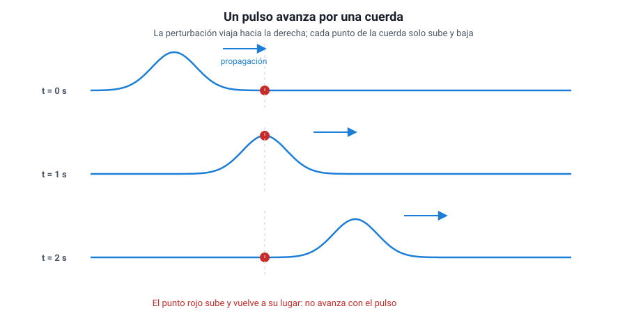
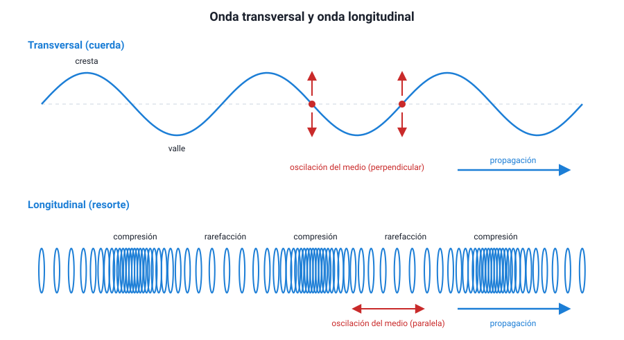
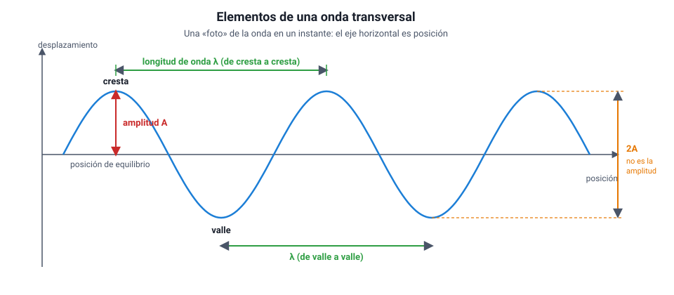
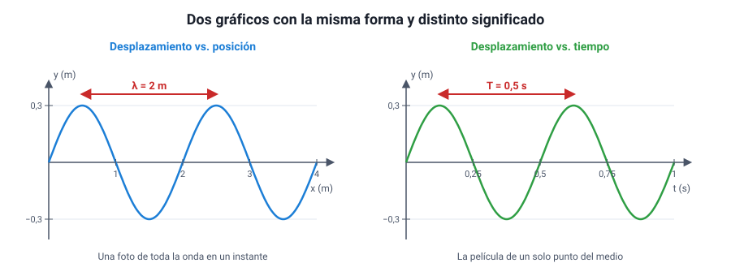
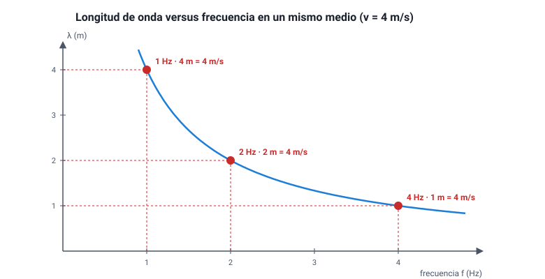
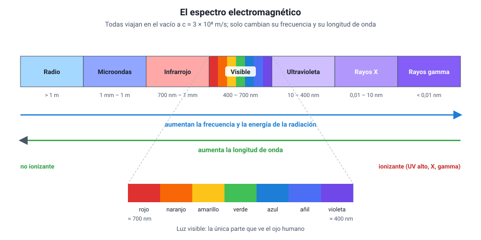
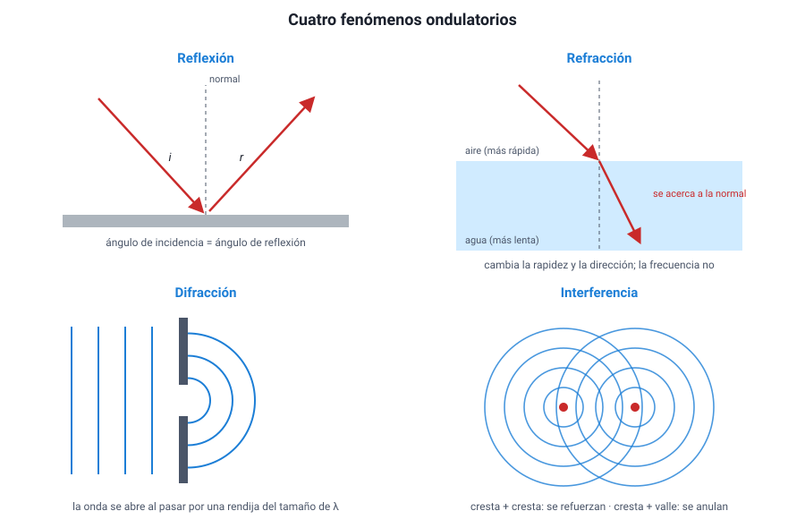
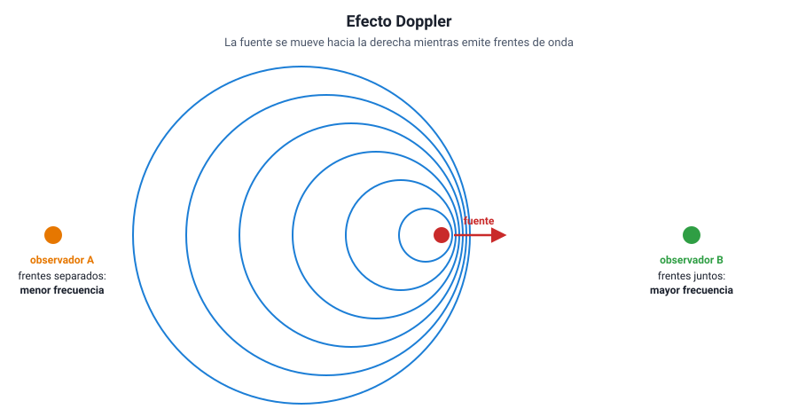

Capítulo 1: Ondas: características y clasificación
Área temática: Ondas
Cuando escuchas la radio en el auto, cuando el celular recibe un mensaje o cuando la luz del Sol te calienta la cara, algo viaja desde un lugar a otro sin que viaje materia. Ese algo es una onda: una perturbación que transporta energía e información a través del espacio. Casi todo lo que sabemos del universo nos llega así, montado en ondas.
En este capítulo vas a aprender qué es una onda y qué la distingue del movimiento de un objeto; cómo se clasifican las ondas según el medio que necesitan, la dirección en que oscilan y la forma en que se propagan; cuáles son sus elementos (amplitud, longitud de onda, período y frecuencia) y cómo se leen en un gráfico; de qué depende la rapidez de propagación y cómo se usa la relación v = λ · f; cómo se ordena el espectro electromagnético y para qué se usa cada rango; y qué les pasa a las ondas cuando chocan con un obstáculo, cambian de medio o se encuentran con otras ondas: reflexión, refracción, absorción, difracción, interferencia y efecto Doppler.
Este capítulo en la PAES 2027. El temario DEMRE del área Ondas se centra en las ondas electromagnéticas: sus elementos, la relación entre longitud de onda, frecuencia y rapidez, el espectro y sus usos tecnológicos, y los fenómenos ondulatorios en términos cualitativos. Las ondas en cuerdas, resortes y agua aparecen aquí porque se ven y se dibujan, y sirven como modelo para entender las que no se ven. La óptica (espejos, lentes, colores) se desarrolla en el capítulo 3.
1. Conceptos claveIA:12
| Concepto | Definición |
|---|---|
| Onda | Perturbación que se propaga en el espacio transportando energía, sin transporte neto de materia |
| Pulso | Perturbación única y de corta duración que viaja por un medio |
| Onda periódica | Sucesión de perturbaciones que se repiten a intervalos de tiempo iguales |
| Medio | Material (sólido, líquido o gas) a través del cual se propaga una onda mecánica |
| Fuente | Objeto que oscila y genera la onda; fija su frecuencia |
| Onda mecánica | Onda que necesita un medio material para propagarse, como el sonido o una ola |
| Onda electromagnética | Onda formada por campos eléctrico y magnético que oscilan; se propaga también en el vacío |
| Onda transversal | Onda en que las partículas del medio oscilan perpendicularmente a la dirección de propagación |
| Onda longitudinal | Onda en que las partículas del medio oscilan en la misma dirección de propagación |
| Cresta y valle | Puntos de máximo y mínimo desplazamiento en una onda transversal |
| Compresión y rarefacción | Zonas de mayor y menor densidad del medio en una onda longitudinal |
| Amplitud (A) | Máximo desplazamiento respecto de la posición de equilibrio; se relaciona con la energía que transporta la onda |
| Longitud de onda (λ) | Distancia entre dos puntos consecutivos en el mismo estado de oscilación, por ejemplo, entre dos crestas; se mide en metros |
| Período (T) | Tiempo que tarda una oscilación completa; se mide en segundos |
| Frecuencia (f) | Número de oscilaciones por unidad de tiempo; se mide en hertz (1 Hz = 1 oscilación por segundo). Es el inverso del período |
| Rapidez de propagación (v) | Distancia que avanza la onda por unidad de tiempo; v = λ · f = λ / T |
| Frente de onda | Línea o superficie que une puntos de la onda en el mismo estado de oscilación |
| Espectro electromagnético | Conjunto de todas las ondas electromagnéticas ordenadas según su frecuencia o su longitud de onda |
| Reflexión | Cambio de dirección de una onda que rebota al llegar a la frontera con otro medio, sin cambiar de medio |
| Refracción | Cambio de rapidez, y en general de dirección, de una onda al pasar de un medio a otro |
| Absorción | Transferencia de la energía de la onda al medio que atraviesa o al objeto sobre el que incide |
| Difracción | Capacidad de una onda de rodear obstáculos o abrirse al pasar por una rendija |
| Interferencia | Superposición de dos o más ondas en un mismo punto: constructiva si se refuerzan, destructiva si se anulan |
| Efecto Doppler | Cambio en la frecuencia percibida cuando la fuente y el observador se acercan o se alejan entre sí |
2. Qué es una ondaIA:34

a. Una perturbación que viajaIA:567
Si sacudes una vez el extremo de una cuerda tensa, verás que una «joroba» recorre la cuerda hasta el otro extremo. Si dejas caer una piedra en un estanque, se forman anillos que se alejan del punto de impacto. En los dos casos pasa lo mismo: una perturbación —un cambio en el estado de un lugar— se transmite de un punto al siguiente. Eso es una onda.
La clave está en la palabra «transmite». Cada trozo de cuerda tira del trozo vecino; cada porción de agua empuja a la de al lado. La perturbación pasa de mano en mano, como en una fila de personas que se van pasando un balde.
b. Viaja la energía, no la materiaIA:8910
Esta es la idea más importante del capítulo, y la más preguntada:
Una onda transporta energía (y también información) de un lugar a otro, pero no transporta materia. Las partículas del medio solo oscilan alrededor de su posición de equilibrio y, cuando la onda ya pasó, vuelven a donde estaban.
Hay dos observaciones sencillas que lo demuestran:
| Observación | Qué muestra |
|---|---|
| Un corcho flotando en un estanque sube y baja cuando pasan las ondas, pero no se acerca a la orilla | El agua bajo el corcho oscila en su lugar; la perturbación avanza, el agua no |
| En un estadio, la «ola» da la vuelta completa a la galería, pero cada espectador solo se para y se sienta en su asiento | Lo que viaja es el patrón de movimiento, no las personas |
Y una que muestra que sí viaja energía: una ola que llega a la playa puede mover arena y piedras, y el sonido de un parlante muy fuerte hace vibrar los vidrios de una ventana. Algo tuvo que llevar esa energía hasta allí.
Error típico en la PAES. Pensar que en una onda «el agua viaja hacia la playa» o que «el aire viaja desde el parlante hasta el oído». Lo que viaja es la perturbación. Si una alternativa dice que la onda traslada partículas del medio de un lugar a otro, desconfía: esa es la confusión que la pregunta está buscando.
c. Pulso y onda periódicaIA:111213
Según cuántas veces se repita la perturbación, se distinguen dos casos:
- Pulso: una perturbación única. Una sacudida aislada de la cuerda, un aplauso, un golpe en la mesa.
- Onda periódica: una sucesión de perturbaciones que se repiten a intervalos de tiempo iguales. Ocurre cuando la fuente oscila de manera regular: una mano que sube y baja la cuerda con ritmo constante, la membrana de un parlante que vibra, los electrones que oscilan en la antena de una radio.
En este capítulo vamos a trabajar sobre todo con ondas periódicas, porque es en ellas donde tienen sentido el período, la frecuencia y la longitud de onda.
d. Toda onda nace de algo que oscilaIA:141516
Detrás de toda onda hay una fuente que vibra. La fuente decide el ritmo de la onda (su frecuencia), y el medio decide qué tan rápido viaja (su rapidez de propagación). Esta división de tareas se retoma en la sección 5, porque explica qué cambia y qué no cuando una onda pasa de un medio a otro.
Cómo se pone a prueba la idea. Un curso quiere comprobar que las ondas de agua no arrastran lo que flota. Deja caer gotas en el centro de una bandeja con agua a ritmo constante y pone un trozo de corcho a 20 cm del punto de caída. Registra la posición del corcho cada 5 segundos durante un minuto.
- Si las ondas arrastraran materia, el corcho se alejaría del centro de forma sostenida.
- Si solo transportan energía, el corcho subiría y bajaría, sin desplazarse de manera apreciable.
El resultado es el segundo. Fíjate en la lógica: el experimento no se limita a mirar; compara lo que predice cada hipótesis y deja que los datos decidan. Eso es lo que la PAES pide cuando pregunta por la evidencia que apoya una idea.
3. Clasificación de las ondasIA:1718
Las ondas se pueden ordenar con varios criterios distintos. Conviene tenerlos separados, porque una misma onda recibe un nombre en cada uno: el sonido en el aire, por ejemplo, es una onda mecánica, longitudinal, tridimensional y, si la fuente vibra con ritmo constante, periódica.
| Criterio | Tipos | Ejemplos |
|---|---|---|
| Según el medio que necesitan | Mecánicas · Electromagnéticas | Sonido, olas, ondas sísmicas · Luz, ondas de radio, rayos X |
| Según la dirección de oscilación | Transversales · Longitudinales | Cuerda de guitarra, luz · Sonido, resorte comprimido |
| Según las dimensiones en que se propagan | Unidimensionales · Bidimensionales · Tridimensionales | Cuerda · Superficie del agua · Sonido, luz |
| Según su periodicidad | Pulso · Onda periódica | Un aplauso · El sonido de un diapasón |
a. Según el medio: mecánicas y electromagnéticasIA:192021
Ondas mecánicas. Necesitan un medio material —sólido, líquido o gas— porque lo que oscila son las partículas de ese medio. Sin medio no hay nada que se perturbe. Son mecánicas el sonido, las olas del mar, las ondas en una cuerda y las ondas sísmicas.
Ondas electromagnéticas. Lo que oscila en ellas no son partículas, sino un campo eléctrico y un campo magnético, perpendiculares entre sí y perpendiculares a la dirección de propagación. Como no necesitan partículas, se propagan también en el vacío, y allí todas viajan con la misma rapidez: la rapidez de la luz, c ≈ 3 × 108 m/s. Son electromagnéticas la luz visible, las ondas de radio, las microondas, el infrarrojo, el ultravioleta, los rayos X y los rayos gamma.
La prueba decisiva es el vacío. Si pones un timbre sonando dentro de una campana de vidrio y le extraes el aire con una bomba, el sonido se va apagando hasta dejar de oírse, aunque sigas viendo el martillo golpear. La luz atraviesa el vacío; el sonido no. Así se sabe que la luz no es una onda mecánica. Por la misma razón, la luz del Sol llega a la Tierra atravesando 150 millones de kilómetros de espacio casi vacío, y ningún sonido del Sol llega hasta aquí.

b. Según la dirección de oscilación: transversales y longitudinalesIA:222324
Este criterio compara dos direcciones: hacia dónde oscila el medio y hacia dónde avanza la onda.
- Transversales: la oscilación es perpendicular a la propagación. En una cuerda horizontal, cada punto sube y baja mientras la onda avanza hacia el lado. Tienen crestas (puntos más altos) y valles (puntos más bajos). Las ondas electromagnéticas son transversales, porque sus campos oscilan perpendicularmente a la dirección de avance.
- Longitudinales: la oscilación es paralela a la propagación. Si empujas y tiras del extremo de un resorte largo (un slinky), las espiras van y vienen en la misma dirección en que avanza la onda, y se forman compresiones (espiras juntas) y rarefacciones (espiras separadas). El sonido en el aire es longitudinal: el parlante empuja y tira del aire, y las capas de aire se comprimen y se enrarecen.
| Transversal | Longitudinal | |
|---|---|---|
| Oscilación respecto de la propagación | Perpendicular | Paralela |
| Zonas características | Crestas y valles | Compresiones y rarefacciones |
| Ejemplos | Cuerda, luz, ondas S de un sismo | Sonido, resorte comprimido, ondas P de un sismo |
Dos confusiones frecuentes. (1) Creer que «transversal» significa que la onda viaja de lado a lado: no, lo que es transversal es la oscilación, no el viaje. (2) Creer que toda onda mecánica es longitudinal: la cuerda y las ondas S son mecánicas y transversales. Los dos criterios son independientes.
Un caso que conviene conocer: los sismos. Un terremoto genera a la vez ondas P (primarias, longitudinales) y ondas S (secundarias, transversales). Las P viajan más rápido y llegan primero; las S llegan después y suelen sacudir más. Además, las ondas S no atraviesan líquidos, porque un líquido no resiste que se lo deforme de lado. Que las ondas S no crucen el núcleo externo de la Tierra fue, justamente, la evidencia de que ese núcleo es líquido. Esta idea se retoma en el capítulo 4.
Las olas del mar son un caso mixto: las partículas de agua de la superficie describen trayectorias casi circulares, con un componente vertical y otro horizontal.
c. Según las dimensiones en que se propaganIA:252627
- Unidimensionales: avanzan en una sola dirección, como la onda en una cuerda o en un resorte.
- Bidimensionales: se extienden sobre una superficie, como los anillos en el agua de un estanque o la vibración de la membrana de un tambor.
- Tridimensionales: se propagan en todas las direcciones del espacio, como el sonido de un parlante o la luz de una ampolleta.
Para describirlas se usa el frente de onda: la línea (en dos dimensiones) o la superficie (en tres) que une los puntos que están en el mismo estado de oscilación, por ejemplo, todas las crestas de un anillo. Cerca de una fuente pequeña, los frentes son circulares o esféricos; muy lejos de la fuente se ven prácticamente planos, como la luz del Sol al llegar a la Tierra.
Clasificar una onda con todos los criterios. Una antena de radio emite una señal que se propaga en todas direcciones.
- Medio: electromagnética (llega también a un satélite en el espacio).
- Oscilación: transversal (todas las electromagnéticas lo son).
- Dimensiones: tridimensional (se propaga en todas direcciones).
- Periodicidad: periódica (la antena oscila a una frecuencia fija, por ejemplo 100 MHz).
Hacer este ejercicio con cada onda nueva es la mejor forma de no mezclar criterios.
4. Elementos de una onda periódicaIA:2829

a. AmplitudIA:303132
La amplitud (A) es el máximo desplazamiento de un punto del medio respecto de su posición de equilibrio (la que tendría si no pasara la onda). En la figura se mide desde la línea central hasta una cresta, no de cresta a valle.
La amplitud está relacionada con la energía que transporta la onda: a mayor amplitud, más energía. En el sonido se percibe como intensidad (un sonido más fuerte); en la luz, como brillo. Lo importante para la prueba es lo que la amplitud no hace: no cambia la rapidez de propagación ni la longitud de onda.
Error típico. Medir la amplitud de cresta a valle. Esa distancia es el doble de la amplitud. Si un gráfico muestra que la cuerda va de −3 cm a +3 cm, la amplitud es 3 cm, no 6 cm.
b. Longitud de ondaIA:333435
La longitud de onda (λ, la letra griega lambda) es la distancia entre dos puntos consecutivos que están en el mismo estado de oscilación: de cresta a cresta, de valle a valle, o de compresión a compresión en una onda longitudinal. Se mide en metros (o en sus submúltiplos: cm, mm, µm, nm). Es la longitud de un ciclo completo del patrón.
Las longitudes de onda cubren escalas enormes: desde kilómetros en algunas ondas de radio hasta menos que el tamaño de un átomo en los rayos gamma. La luz visible va aproximadamente de 400 a 700 nanómetros (1 nm = 10−9 m).
c. Período y frecuenciaIA:363738
El período (T) es el tiempo que tarda un punto del medio en completar una oscilación completa (subir, bajar y volver al estado inicial). También es el tiempo que tarda la onda en avanzar una longitud de onda. Se mide en segundos.
La frecuencia (f) es el número de oscilaciones que ocurren en cada segundo. Su unidad es el hertz (Hz): 1 Hz equivale a una oscilación por segundo, es decir, 1 Hz = 1 s−1.
Período y frecuencia son inversos: si una fuente oscila 4 veces por segundo (f = 4 Hz), cada oscilación dura un cuarto de segundo (T = 0,25 s).
f = 1 / T T = 1 / f
| Prefijo | Valor | Ejemplo |
|---|---|---|
| kilohertz (kHz) | 103 Hz | Un silbido agudo: unos 5 kHz |
| megahertz (MHz) | 106 Hz | Radio FM: de 88 a 108 MHz |
| gigahertz (GHz) | 109 Hz | Wi-Fi: 2,4 y 5 GHz; horno microondas: 2,45 GHz |
| terahertz (THz) | 1012 Hz | Luz visible: de unos 430 a 750 THz |
Mucha frecuencia significa poco período. Si te preguntan qué pasa con el período cuando la frecuencia se duplica, la respuesta es que se reduce a la mitad. Y cuidado con las unidades: el hertz no es «hertz por segundo»; ya es «por segundo».
d. Dos gráficos que parecen iguales y no lo sonIA:394041
La PAES usa dos tipos de gráfico que tienen la misma forma de sinusoide, pero que muestran cosas distintas. Confundirlos es uno de los errores más caros de la prueba.

| Gráfico | Qué muestra | Qué se lee entre dos crestas |
|---|---|---|
| Desplazamiento vs. posición (y – x) | Una «foto» de toda la onda en un instante | La longitud de onda λ |
| Desplazamiento vs. tiempo (y – t) | La «película» de un solo punto del medio | El período T |
En ambos, la altura máxima de la curva es la amplitud. Antes de responder cualquier pregunta con un gráfico de onda, lee el eje horizontal: si dice metros, estás frente a λ; si dice segundos, frente a T.
Leer los dos gráficos de la figura 4. Con el gráfico de la izquierda, la distancia entre dos crestas es de 2 m: λ = 2 m. Con el de la derecha, entre dos crestas pasan 0,5 s: T = 0,5 s, y por lo tanto f = 1 / 0,5 s = 2 Hz. La amplitud, en los dos, es de 0,3 m.
Si ambos gráficos describen la misma onda, ya se puede calcular su rapidez con lo que viene en la sección siguiente: v = λ · f = 2 m · 2 Hz = 4 m/s.
e. Ciclo y faseIA:424344
Un ciclo es una oscilación completa. Dos puntos del medio están en fase cuando hacen lo mismo al mismo tiempo (por ejemplo, dos crestas), y en oposición de fase cuando uno está en una cresta mientras el otro está en un valle. Los puntos en fase están separados por un número entero de longitudes de onda (λ, 2λ, 3λ…); los que están en oposición, por media longitud de onda más un número entero (λ/2, 3λ/2…). Esta idea es la base de la interferencia (sección 7).
5. Rapidez de propagaciónIA:4546
a. La relación fundamental: v = λ · fIA:474849
En un período T, la fuente completa una oscilación y la onda avanza exactamente una longitud de onda λ. Como la rapidez es distancia dividida por tiempo:
v = λ / T = λ · f
| Símbolo | Magnitud | Unidad SI |
|---|---|---|
| v | Rapidez de propagación | m/s |
| λ | Longitud de onda | m |
| f | Frecuencia | Hz (= 1/s) |
| T | Período | s |
Es la ecuación más usada del área Ondas. Se despeja fácilmente: λ = v / f y f = v / λ.
Tres cálculos típicos.
- Una radio FM transmite a 100 MHz. ¿Cuál es su longitud de onda? Las ondas de radio viajan a c = 3 × 108 m/s. Entonces λ = c / f = (3 × 108 m/s) / (1 × 108 Hz) = 3 m.
- Una ola tiene crestas separadas por 12 m y pasa una cresta frente a un muelle cada 4 s. Entonces λ = 12 m, T = 4 s y v = λ / T = 3 m/s.
- Un horno microondas funciona a 2,45 GHz. Su λ = (3 × 108 m/s) / (2,45 × 109 Hz) ≈ 0,12 m = 12 cm.
En los tres casos el método es el mismo: identificar qué magnitudes da el enunciado, convertirlas a unidades del SI y recién entonces reemplazar.
b. De qué depende la rapidez: del medio, no de la fuenteIA:505152
Esta es la segunda idea central del capítulo:
La rapidez de una onda la determina el medio (su rigidez, su densidad, su temperatura), no la frecuencia ni la amplitud. La frecuencia la determina la fuente. La longitud de onda es lo que se «acomoda» para que se cumpla v = λ · f.
Consecuencia directa: en un mismo medio, si la fuente oscila más rápido (mayor f), la rapidez no cambia, así que la longitud de onda disminuye en la misma proporción. f y λ son inversamente proporcionales cuando v es constante: si f se duplica, λ se reduce a la mitad.

Rapideces típicas, para tener una escala:
| Onda y medio | Rapidez aproximada |
|---|---|
| Sonido en el aire a 20 °C | 343 m/s |
| Sonido en el agua | 1 480 m/s |
| Sonido en el acero | 5 000 – 6 000 m/s |
| Ondas sísmicas P en la corteza | 5 000 – 8 000 m/s |
| Luz en el vacío (c) | 299 792 458 m/s ≈ 3 × 108 m/s |
| Luz en el agua | ≈ 2,25 × 108 m/s |
| Luz en el vidrio | ≈ 2 × 108 m/s |
Fíjate en el contraste: el sonido va más rápido en los sólidos que en los gases, mientras que la luz va más rápido en el vacío y se frena al entrar en la materia.
Distractor clásico. «Si aumenta la frecuencia, la onda viaja más rápido.» Es falso en un medio dado: todas las notas de una orquesta, graves y agudas, te llegan al mismo tiempo, y todas las ondas electromagnéticas viajan a c en el vacío. Lo que cambia con la frecuencia es la longitud de onda.
c. Qué pasa cuando la onda cambia de medioIA:535455
Cuando una onda pasa de un medio a otro, la fuente sigue siendo la misma, así que:
| Magnitud | ¿Cambia al pasar a otro medio? | Por qué |
|---|---|---|
| Frecuencia f | No | La fija la fuente; cada oscilación que llega a la frontera produce una oscilación en el otro lado |
| Rapidez v | Sí | Depende del medio |
| Longitud de onda λ | Sí, en la misma proporción que v | λ = v / f, con f fija |
La luz entra al agua. Una luz roja de frecuencia 4,6 × 1014 Hz tiene en el aire λ ≈ 650 nm. Al entrar en el agua su rapidez baja a unos 2,25 × 108 m/s, es decir, al 75 % aproximadamente. La frecuencia no cambia, así que la longitud de onda también baja al 75 %: λagua ≈ 0,75 · 650 nm ≈ 490 nm.
Aun así, un buzo sigue viendo la luz roja: el color que percibimos depende de la frecuencia, y la frecuencia no cambió.
d. Cómo lo pregunta la PAESIA:565758
Las preguntas sobre esta relación casi nunca piden solo reemplazar números. Lo habitual es:
- entregar una tabla de datos (varias frecuencias y sus longitudes de onda) y pedir la relación o la tendencia que muestra (habilidad Procesar y analizar la evidencia);
- describir un experimento con una cubeta de ondas o una cuerda y pedir cuál es la variable independiente, cuál la dependiente y cuál se mantuvo controlada (Planificar y conducir una investigación);
- pedir una predicción: qué ocurrirá con λ si se duplica f, o con v si se cambia de medio.
La herramienta para todas ellas es la misma: v = λ · f y la regla de que el medio fija v y la fuente fija f.
6. Las ondas electromagnéticas y su espectroIA:5960
a. Qué tienen en común todas las ondas electromagnéticasIA:616263
La luz, las ondas de radio y los rayos X parecen cosas muy distintas, pero son el mismo fenómeno con distinta frecuencia. Todas las ondas electromagnéticas:
- se producen cuando cargas eléctricas oscilan o se aceleran (los electrones en una antena, los átomos de un filamento caliente, los núcleos de un átomo radiactivo);
- están formadas por un campo eléctrico y un campo magnético que oscilan perpendiculares entre sí y a la dirección de avance: son transversales;
- no necesitan medio y en el vacío viajan todas a la misma rapidez, c ≈ 3 × 108 m/s;
- cumplen c = λ · f: por eso, a mayor frecuencia, menor longitud de onda.
Lo único que las distingue es su frecuencia (o, lo que es lo mismo, su longitud de onda). Y con ella cambian dos cosas importantes: la energía que transporta cada «paquete» de radiación (mayor a mayor frecuencia) y la forma en que interactúa con la materia (qué atraviesa, qué absorbe, qué daña).
b. El espectro ordenadoIA:646566
El espectro electromagnético es el conjunto de todas estas ondas, ordenadas por frecuencia. No tiene fronteras nítidas: los límites entre rangos son convenciones aproximadas.

| Rango | Longitud de onda aproximada | Frecuencia aproximada | Usos y fuentes |
|---|---|---|---|
| Ondas de radio | Mayor que 1 m | Menor que 300 MHz | Radio AM y FM, televisión abierta, radiotelescopios, comunicación con barcos y aviones |
| Microondas | 1 mm – 1 m | 300 MHz – 300 GHz | Horno microondas, telefonía móvil, Wi-Fi, Bluetooth, GPS, radar, enlaces satelitales |
| Infrarrojo | 700 nm – 1 mm | 300 GHz – 430 THz | Controles remotos, cámaras térmicas, visión nocturna, calefactores, fibra óptica |
| Luz visible | 400 – 700 nm | 430 – 750 THz | Visión humana, fotografía, láser, iluminación |
| Ultravioleta | 10 – 400 nm | 750 THz – 30 PHz | Esterilización de agua y superficies, detección de billetes falsos, síntesis de vitamina D, bronceado y quemaduras |
| Rayos X | 0,01 – 10 nm | 30 PHz – 30 EHz | Radiografías, tomografía computarizada (escáner), control de equipaje |
| Rayos gamma | Menor que 0,01 nm | Mayor que 30 EHz | Radioterapia contra el cáncer, esterilización de material médico, astronomía de alta energía |
(1 PHz = 1015 Hz; 1 EHz = 1018 Hz.)
Dentro de la luz visible, el orden de los colores de menor a mayor frecuencia es rojo, naranjo, amarillo, verde, azul, añil y violeta. El rojo tiene la mayor longitud de onda del visible (≈ 700 nm) y el violeta la menor (≈ 400 nm). Por eso el rango que queda «debajo del rojo» en frecuencia se llama infrarrojo y el que queda «más allá del violeta», ultravioleta.
Una regla mnemotécnica para el orden. De menor a mayor frecuencia: Radio, Microondas, Infrarrojo, Visible, Ultravioleta, X, Gamma. Si te piden ordenar por longitud de onda de menor a mayor, el orden es exactamente el inverso. Y recuerda que toda la tabla viaja a la misma rapidez en el vacío: el orden por frecuencia no es un orden de rapidez.
c. Energía y riesgo: radiación ionizante y no ionizanteIA:676869
Cuanto mayor es la frecuencia, más energía transporta cada paquete de radiación. A partir de cierta frecuencia —la parte alta del ultravioleta, los rayos X y los rayos gamma— esa energía alcanza para arrancar electrones de los átomos: es la radiación ionizante, que puede dañar el ADN de las células. Por eso las radiografías se toman con la mínima exposición y el personal que las opera se protege con plomo, y por eso el ultravioleta del Sol produce quemaduras y aumenta el riesgo de cáncer de piel.
Las ondas de radio, las microondas, el infrarrojo y la luz visible son no ionizantes: pueden calentar un material (el horno microondas agita las moléculas de agua de los alimentos), pero no rompen los átomos.
Intensidad y frecuencia no son lo mismo. Una lámpara roja muy potente emite mucha energía en total, pero cada paquete de luz roja tiene poca energía; no puede producir lo que sí produce el ultravioleta, aunque sea débil. Lo que decide si una radiación es ionizante es su frecuencia, no su intensidad.
d. Dispositivos que funcionan con ondas electromagnéticasIA:707172
El temario menciona varios artefactos. Todos se entienden con las ideas de este capítulo:
| Dispositivo | Rango que usa | Idea física |
|---|---|---|
| Radio | Radio (AM: 535–1 705 kHz; FM: 88–108 MHz) | Cada emisora transmite en su frecuencia; el receptor se «sintoniza» para captar solo esa |
| Teléfono móvil y comunicación inalámbrica | Microondas (de unos 700 MHz a varios GHz; Wi-Fi a 2,4 y 5 GHz) | El teléfono es a la vez emisor y receptor; la información va codificada en la onda |
| Televisor | Radio y microondas (señal abierta o satelital); luz visible (pantalla) | Recibe la señal por antena y la convierte en imagen formada por puntos de luz de colores |
| Radar | Microondas | Emite pulsos que se reflejan en un objeto; el tiempo de ida y vuelta da la distancia y el efecto Doppler da la velocidad |
| Radiotelescopio | Radio | Una gran antena parabólica refleja y concentra ondas de radio débiles del espacio. En Chile opera ALMA, en el desierto de Atacama |
| Rayo láser | Visible o infrarrojo | Luz de una sola frecuencia, muy concentrada y que se propaga casi sin abrirse |
| Fibra óptica | Infrarrojo cercano (y visible) | La luz queda atrapada dentro de un hilo de vidrio por reflexión total interna y viaja kilómetros con muy poca pérdida |
Los dispositivos ópticos (prismáticos, telescopios reflector y refractor) se estudian en el capítulo 3, junto con espejos y lentes.
Un radar que mide distancia. Un radar de aeropuerto emite un pulso de microondas que vuelve reflejado desde un avión 2 × 10−4 s después. La onda viaja a c = 3 × 108 m/s. En ese tiempo recorre d = c · t = 3 × 108 m/s · 2 × 10−4 s = 6 × 104 m = 60 km. Pero ese es el camino de ida y vuelta: el avión está a la mitad, 30 km. Olvidar dividir por dos es el error de cálculo típico en este tipo de pregunta.
7. Fenómenos ondulatoriosIA:7374
Cuando una onda llega a la frontera con otro medio, encuentra un obstáculo o se cruza con otra onda, le ocurren cosas que no le ocurrirían a una pelota. Estos comportamientos son la firma de lo ondulatorio: si algo los muestra, es una onda. El temario los pide en términos cualitativos: hay que saber reconocerlos, explicarlos y predecir qué pasa, no calcularlos con ecuaciones.

a. ReflexiónIA:757677
La reflexión ocurre cuando una onda llega a la frontera con otro medio y rebota, volviendo al medio del que venía. La onda reflejada tiene la misma rapidez, la misma frecuencia y la misma longitud de onda que la incidente, porque sigue en el mismo medio.
Su ley es simple: el ángulo de incidencia es igual al ángulo de reflexión, medidos ambos respecto de la normal (la línea perpendicular a la superficie en el punto donde llega la onda).
Ejemplos: el eco (sonido reflejado en una pared o un cerro), la imagen en un espejo (luz reflejada), el radar (microondas reflejadas en un avión) y las antenas parabólicas, que reflejan las ondas hacia un receptor ubicado en su foco.
b. RefracciónIA:787980
La refracción ocurre cuando una onda pasa de un medio a otro y cambia su rapidez. Si llega de forma oblicua, ese cambio de rapidez hace que cambie de dirección: la onda se «quiebra» en la frontera.
- Al pasar a un medio donde viaja más lento, la onda se acerca a la normal.
- Al pasar a un medio donde viaja más rápido, se aleja de la normal.
- Si llega perpendicular a la frontera, cambia de rapidez pero no de dirección.
Como vimos en la sección 5, en la refracción la frecuencia se mantiene, mientras que la rapidez y la longitud de onda cambian.
Ejemplos: una bombilla dentro de un vaso de agua parece quebrada; una piscina parece menos profunda de lo que es; las olas giran al acercarse a la playa y terminan llegando casi paralelas a la orilla, porque se frenan en el agua poco profunda.
Reflexión total interna. Cuando la luz va de un medio donde es lenta (vidrio) a uno donde es rápida (aire), se aleja de la normal. Si el ángulo de llegada es suficientemente grande, la luz ya no puede salir y se refleja completa hacia adentro. Así funciona la fibra óptica: la luz rebota de pared en pared a lo largo del hilo de vidrio sin escaparse.
c. AbsorciónIA:818283
La absorción ocurre cuando el medio o el objeto sobre el que incide la onda se queda con parte de su energía, que casi siempre se transforma en energía térmica. Una onda que se absorbe pierde amplitud a medida que avanza.
Cada material absorbe de manera distinta según la frecuencia:
| Material | Qué absorbe | Consecuencia |
|---|---|---|
| Capa de ozono | Gran parte del ultravioleta del Sol | Protege a los seres vivos de la radiación más dañina |
| Agua de los alimentos | Microondas | El horno microondas calienta la comida |
| Huesos (calcio) | Rayos X, más que los tejidos blandos | En la radiografía los huesos se ven claros |
| Ropa oscura | Luz visible | Se calienta más al sol que la ropa clara |
| Vidrio común | Ultravioleta (parcialmente) | Es difícil broncearse detrás de una ventana |
Reflexión, refracción y absorción suelen ocurrir a la vez: cuando la luz llega al agua de un lago, una parte se refleja (por eso ves el cielo en la superficie), otra se refracta hacia adentro y, a medida que avanza, se va absorbiendo (por eso el fondo de un lago profundo está oscuro).
d. DifracciónIA:848586
La difracción es la capacidad de una onda de rodear un obstáculo o de abrirse al pasar por una rendija. Una pelota que pasa por una puerta sigue derecho; una onda que pasa por la misma puerta se desparrama hacia los lados.
La regla que manda es la comparación entre la longitud de onda y el tamaño del obstáculo o la abertura:
- Si λ es comparable o mayor que la abertura, la difracción es muy notoria.
- Si λ es mucho menor que la abertura, la difracción es casi imperceptible y la onda sigue en línea recta.
Esto explica un hecho cotidiano: oyes a alguien que habla detrás de una esquina, pero no lo ves. El sonido de la voz tiene longitudes de onda de centímetros a metros, como una puerta; la luz, de menos de una milésima de milímetro. El sonido se difracta en la puerta y dobla la esquina; la luz prácticamente no, y por eso se propaga en línea recta y forma sombras nítidas.
La difracción en las comunicaciones. Las ondas de radio largas (AM, cientos de metros) rodean cerros y edificios y llegan a lugares sin línea directa con la antena. Las de longitud corta (FM, unos 3 m; telefonía, centímetros) se difractan mucho menos y necesitan antenas más cercanas o en lugares altos. Si una pregunta compara la cobertura de dos señales en un valle, la clave suele estar aquí.
e. InterferenciaIA:878889
Cuando dos ondas coinciden en el mismo lugar al mismo tiempo, sus efectos se suman: es el principio de superposición. Después de cruzarse, cada onda sigue su camino como si nada hubiera pasado.
- Interferencia constructiva: las ondas llegan en fase (cresta con cresta). Se refuerzan y la amplitud resultante es mayor.
- Interferencia destructiva: las ondas llegan en oposición de fase (cresta con valle). Se debilitan y, si tienen la misma amplitud, se anulan en ese punto.
Ejemplos: los colores de una pompa de jabón o de una mancha de aceite (interferencia de luz reflejada en las dos caras de una película delgada); los audífonos con cancelación de ruido, que emiten una onda en oposición de fase con el ruido exterior; las zonas de mala señal dentro de una casa, donde se cruzan la señal directa y la reflejada.
Por qué la interferencia y la difracción importan tanto. Son los comportamientos que ninguna partícula muestra. En 1801, Thomas Young hizo pasar luz por dos rendijas muy juntas y obtuvo en una pantalla franjas claras y oscuras alternadas: interferencia. Fue la evidencia experimental de que la luz se comporta como una onda.
f. Efecto DopplerIA:909192
El efecto Doppler es el cambio en la frecuencia percibida cuando la fuente y el observador se acercan o se alejan entre sí.
- Si se acercan, los frentes de onda llegan más juntos: la frecuencia percibida es mayor (la longitud de onda percibida, menor).
- Si se alejan, los frentes llegan más separados: la frecuencia percibida es menor (la longitud de onda percibida, mayor).
La fuente no cambia su frecuencia: lo que cambia es la que recibe el observador.

Con el sonido se percibe a diario: la sirena de una ambulancia suena más aguda mientras se acerca y más grave después de pasar. Con las ondas electromagnéticas tiene aplicaciones que el temario destaca:
| Aplicación | Cómo usa el efecto Doppler |
|---|---|
| Radar de velocidad (carabineros, meteorología) | Compara la frecuencia emitida con la reflejada en un auto o en una nube: la diferencia indica su velocidad y si se acerca o se aleja |
| Ecografía Doppler | Mide la rapidez de la sangre en los vasos con ultrasonido reflejado en los glóbulos rojos |
| Astronomía | La luz de una galaxia que se aleja llega con menor frecuencia, desplazada hacia el rojo (corrimiento al rojo); si se acerca, hacia el azul. El corrimiento al rojo de casi todas las galaxias es una de las evidencias de que el universo se expande (capítulo 13) |
Lo que el efecto Doppler no es. No es un cambio de intensidad (que la sirena suene más fuerte al acercarse es otro efecto, la distancia). Tampoco cambia la rapidez de la onda en el medio. Lo que cambia es la frecuencia percibida. Y el «corrimiento al rojo» no significa que la galaxia se vea roja: significa que todas sus líneas del espectro se desplazaron hacia frecuencias menores.
g. Resumen de los fenómenosIA:939495
| Fenómeno | Qué ocurre | ¿Cambia f? | ¿Cambia v? | Ejemplo con ondas electromagnéticas |
|---|---|---|---|---|
| Reflexión | La onda rebota en la frontera | No | No | Espejo, radar |
| Refracción | La onda pasa a otro medio y se desvía | No | Sí | Lentes, bombilla «quebrada» |
| Absorción | El medio se queda con energía | No | No | Ozono y UV, horno microondas |
| Difracción | La onda rodea obstáculos o se abre en rendijas | No | No | Radio AM que cubre valles |
| Interferencia | Dos ondas se suman o se anulan | No | No | Colores de una pompa de jabón |
| Efecto Doppler | Cambia la f percibida por el movimiento relativo | Sí, la percibida | No | Radar de velocidad, corrimiento al rojo |
Ejemplos PAES resueltos
Cuatro ítems al estilo de la prueba, resueltos paso a paso. Cúbrelos primero y después compara.
Ejemplo 1 (Procesar y analizar la evidencia). En una cubeta de ondas con agua de profundidad constante, un vibrador genera ondas planas. Un grupo de estudiantes varía la frecuencia del vibrador y mide, con una regla sobre la sombra proyectada, la distancia entre dos crestas consecutivas:
| Frecuencia (Hz) | Distancia entre crestas (cm) |
|---|---|
| 5 | 6,0 |
| 10 | 3,0 |
| 15 | 2,0 |
| 20 | 1,5 |
¿Cuál de las siguientes conclusiones es coherente con estos datos?
A) La rapidez de las ondas aumenta al aumentar la frecuencia. B) La longitud de onda es directamente proporcional a la frecuencia. C) La rapidez de las ondas se mantiene en 30 cm/s en todas las mediciones. D) La longitud de onda disminuye porque las ondas pierden energía al avanzar.
Desarrollo.
- Qué se midió. La distancia entre crestas consecutivas es la longitud de onda λ. La variable independiente es la frecuencia; la dependiente, λ.
- Buscar la relación. Al duplicar la frecuencia (5 → 10 Hz), λ se reduce a la mitad (6,0 → 3,0 cm); al triplicarla (5 → 15 Hz), λ se reduce a un tercio (2,0 cm). Es una proporcionalidad inversa, así que B cae.
- Calcular la rapidez en cada fila. v = λ · f: 6,0 · 5 = 30; 3,0 · 10 = 30; 2,0 · 15 = 30; 1,5 · 20 = 30 cm/s. La rapidez es constante, y eso descarta A.
- Revisar D. Los datos no tienen información sobre energía ni sobre amplitud: la explicación es un sobre-alcance. Lo que cambia λ es la frecuencia de la fuente, con el medio fijo.
Clave: C.
Lo que evalúa. Que identifiques una relación entre variables con una operación matemática (el producto λ · f) y que reconozcas que en un medio fijo la rapidez no depende de la frecuencia.
Ejemplo 2 (Planificar y conducir una investigación). Una estudiante quiere averiguar si la rapidez de un pulso en un resorte largo depende de la tensión con que se estira el resorte. Dispone de un resorte, un cronómetro, una huincha para medir y un dinamómetro.
¿Cuál de los siguientes procedimientos le permite responder su pregunta?
A) Estirar el resorte siempre con la misma tensión y generar pulsos de distinta amplitud, midiendo el tiempo que tardan en recorrerlo. B) Estirar el resorte con distintas tensiones, medidas con el dinamómetro, y en cada caso medir el tiempo que tarda un pulso en recorrer la misma longitud. C) Estirar el resorte con distintas tensiones y en cada caso contar cuántos pulsos se generan en un minuto. D) Usar resortes de distinto material con la misma tensión y medir el tiempo que tarda un pulso en recorrer cada uno.
Desarrollo.
- Identificar las variables de la pregunta. Independiente: la tensión (lo que se quiere variar). Dependiente: la rapidez del pulso, que se obtiene de distancia / tiempo.
- Revisar cada procedimiento. A mantiene fija la tensión: cambia la amplitud, que no es la variable de la pregunta. C varía bien la tensión, pero mide el número de pulsos por minuto, que depende de la mano de la estudiante y no de la rapidez. D cambia el material, que es otra variable.
- B varía la tensión, la mide con el instrumento adecuado y calcula la rapidez con una distancia fija y el tiempo medido. Controla todo lo demás (mismo resorte, misma longitud).
Clave: B.
Lo que evalúa. Que asocies cada variable de la pregunta con lo que se manipula y lo que se mide, y los instrumentos con esas variables.
Ejemplo 3 (Evaluar). Una empresa de telecomunicaciones debe dar cobertura de radio a un pueblo ubicado en un valle profundo, sin línea de visión directa con la antena más cercana. Un técnico propone transmitir en la banda AM, con longitudes de onda de unos 300 m, en lugar de la banda FM, de unos 3 m. Justifica que las ondas largas «doblan» mejor los cerros.
¿Cuál de las siguientes afirmaciones evalúa correctamente la justificación del técnico?
A) Es correcta, porque la difracción es más notoria cuando la longitud de onda es comparable o mayor que el tamaño del obstáculo. B) Es incorrecta, porque las ondas AM viajan más lento que las FM y por eso no alcanzan el valle. C) Es correcta, porque las ondas AM tienen mayor frecuencia y por eso transportan más energía. D) Es incorrecta, porque las ondas electromagnéticas se propagan siempre en línea recta y no pueden rodear obstáculos.
Desarrollo.
- Qué fenómeno está en juego. Rodear un obstáculo es difracción. Su intensidad depende de la relación entre λ y el tamaño del obstáculo.
- Aplicarlo. Con λ ≈ 300 m, las ondas AM son comparables a los cerros y se difractan notoriamente; con λ ≈ 3 m, las FM mucho menos. La justificación del técnico es correcta: A.
- Descartar. B es falsa: todas las ondas electromagnéticas viajan a la misma rapidez en el aire (≈ c). C invierte la relación: mayor longitud de onda significa menor frecuencia. D confunde la aproximación de la luz visible (λ diminuta) con una regla para todas las ondas.
Clave: A.
Lo que evalúa. Que evalúes la coherencia entre una propuesta tecnológica y el modelo ondulatorio que la sustenta.
Ejemplo 4 (Observar y plantear preguntas). Un astrónomo compara el espectro de la luz de una galaxia lejana con el de una lámpara de hidrógeno en el laboratorio. Observa el mismo patrón de líneas, pero en la galaxia todas aparecen desplazadas hacia longitudes de onda mayores.
¿Cuál de las siguientes hipótesis permite explicar, con el modelo ondulatorio, esta observación?
A) La galaxia se aleja de la Tierra, por lo que la frecuencia de su luz se percibe menor. B) La galaxia se acerca a la Tierra, por lo que la frecuencia de su luz se percibe menor. C) La luz de la galaxia viaja más lento que la de la lámpara, por lo que su longitud de onda es mayor. D) La galaxia contiene más hidrógeno que la lámpara, por lo que su luz tiene mayor amplitud.
Desarrollo.
- Qué se observa. Longitudes de onda mayores significa frecuencias menores (con la misma rapidez c): es un corrimiento al rojo.
- Qué fenómeno lo produce. El efecto Doppler: si la fuente se aleja, el observador percibe menor frecuencia. A es coherente.
- Descartar. B invierte la dirección: al acercarse se percibe mayor frecuencia (corrimiento al azul). C contradice que la luz viaja a c en el vacío, cualquiera sea su fuente. D confunde amplitud (brillo) con longitud de onda: más hidrógeno no desplaza las líneas.
Clave: A.
Lo que evalúa. Que formules una hipótesis coherente con una observación y con el modelo científico que la explica. Esta misma observación, repetida en muchas galaxias, es una de las evidencias de la expansión del universo (capítulo 13).
Evaluación formativa
Veinte preguntas sobre la naturaleza de las ondas, su clasificación, sus elementos, la rapidez de propagación, el espectro electromagnético y los fenómenos ondulatorios. Responde todas y luego revisa las explicaciones.
1. Un estudiante deja caer una piedra en un estanque donde flota una hoja. Las ondas pasan bajo la hoja. ¿Qué le ocurre a la hoja?
- Sube y baja en torno a su posición, sin avanzar con las ondas.
- Avanza con las ondas hasta la orilla del estanque.
- Se hunde porque la onda le transfiere su masa.
- Se acerca al punto donde cayó la piedra.
Respuesta correcta: A
Una onda transporta energía, no materia. El agua bajo la hoja oscila en su lugar, y la hoja con ella. Pensar que la hoja viaja hasta la orilla es la confusión típica entre el avance de la perturbación y el movimiento del medio.
2. ¿Qué característica distingue a una onda electromagnética de una onda mecánica?
- Puede propagarse en el vacío.
- Transporta energía de un lugar a otro.
- Tiene frecuencia y longitud de onda.
- Puede reflejarse en una superficie.
Respuesta correcta: A
Todas las ondas transportan energía, tienen frecuencia y longitud de onda y pueden reflejarse. Lo exclusivo de las electromagnéticas es que no necesitan medio material: por eso la luz del Sol llega a la Tierra a través del espacio casi vacío.
3. Un timbre suena dentro de una campana de vidrio y se extrae el aire poco a poco. El sonido se debilita hasta no oírse, pero el martillo del timbre se sigue viendo. ¿Qué conclusión permite este experimento?
- La luz necesita aire para propagarse, pero el sonido no.
- El sonido y la luz son ondas mecánicas longitudinales.
- El vidrio de la campana absorbe el sonido cuando no hay aire.
- El sonido necesita un medio material; la luz no.
Respuesta correcta: D
Al quitar el medio (el aire) desaparece el sonido, pero no la luz. La conclusión es que el sonido es una onda mecánica y la luz no lo es. La opción C inventa una causa que el experimento no pone a prueba: el vidrio es el mismo antes y después.
4. En una onda transversal que viaja por una cuerda horizontal hacia la derecha, ¿cómo se mueve un punto de la cuerda?
- Hacia la derecha, junto con la onda.
- Hacia arriba y hacia abajo, perpendicular a la propagación.
- Hacia adelante y hacia atrás, en la dirección de propagación.
- En círculos, avanzando lentamente hacia la derecha.
Respuesta correcta: B
En una onda transversal, la oscilación del medio es perpendicular a la dirección en que avanza la onda. Moverse adelante y atrás, en la misma dirección, es lo que ocurre en una onda longitudinal.
5. ¿Cuál de las siguientes ondas es mecánica y longitudinal?
- El sonido que se propaga en el aire.
- La luz que emite una ampolleta.
- La onda en una cuerda de guitarra.
- La señal de una radio FM.
Respuesta correcta: A
El sonido necesita un medio (mecánica) y el aire se comprime y se enrarece en la dirección de avance (longitudinal). La cuerda es mecánica pero transversal; la luz y la radio son electromagnéticas y transversales.
6. Durante un sismo, un sismógrafo ubicado al otro lado de la Tierra registra ondas P, pero no ondas S. ¿Qué propiedad de las ondas S explica este registro?
- Son más rápidas que las ondas P y llegan antes.
- Son longitudinales y se amortiguan en los sólidos.
- Son transversales y no se propagan en los líquidos.
- Son electromagnéticas y el núcleo las absorbe.
Respuesta correcta: C
Las ondas S son transversales y un líquido no transmite ese tipo de oscilación. Como el núcleo externo es líquido, las ondas S no lo cruzan. Las ondas P, longitudinales, sí lo atraviesan. Además, las P son más rápidas que las S, no al revés.
7. Un gráfico de desplazamiento versus posición de una onda muestra que la curva oscila entre −4 cm y +4 cm y que hay 3 crestas completas en 1,5 m. ¿Cuáles son la amplitud y la longitud de onda?
- A = 8 cm y λ = 0,5 m.
- A = 4 cm y λ = 0,5 m.
- A = 4 cm y λ = 1,5 m.
- A = 8 cm y λ = 3,0 m.
Respuesta correcta: B
La amplitud se mide desde el equilibrio hasta la cresta: 4 cm (8 cm es la distancia de cresta a valle, el doble). Tres longitudes de onda caben en 1,5 m, así que λ = 1,5 m / 3 = 0,5 m.
8. Una boya sube y baja 12 veces en un minuto por el paso de las olas. ¿Cuál es el período de las olas?
- 0,2 s
- 1,2 s
- 2,0 s
- 5,0 s
Respuesta correcta: D
La frecuencia es 12 oscilaciones / 60 s = 0,2 Hz, y el período es su inverso: T = 1 / 0,2 Hz = 5 s. El distractor de 0,2 s surge de confundir la frecuencia con el período.
9. Un gráfico de desplazamiento versus tiempo de un punto de una cuerda muestra dos crestas separadas por 0,25 s. ¿Qué frecuencia tiene la onda?
- 0,25 Hz
- 0,50 Hz
- 2,0 Hz
- 4,0 Hz
Respuesta correcta: D
En un gráfico de desplazamiento versus tiempo, la separación entre crestas es el período: T = 0,25 s. La frecuencia es f = 1 / T = 4 Hz. Quien lea ese 0,25 como longitud de onda o como frecuencia cae en los distractores.
10. Una onda en una cuerda tiene una longitud de onda de 0,8 m y una frecuencia de 5 Hz. ¿Cuál es su rapidez de propagación?
- 6,3 m/s
- 5,8 m/s
- 4,0 m/s
- 0,16 m/s
Respuesta correcta: C
v = λ · f = 0,8 m · 5 Hz = 4 m/s. Sumar los valores (5,8) o dividir la frecuencia por λ (6,25) son errores de fórmula; 0,16 resulta de dividir λ por f.
11. Una emisora de radio transmite a 90 MHz. Si las ondas de radio viajan a 3 × 108 m/s, ¿cuál es su longitud de onda?
- 0,30 m
- 2,7 m
- 3,3 m
- 27 m
Respuesta correcta: C
λ = c / f = (3 × 108 m/s) / (9 × 107 Hz) ≈ 3,3 m. Multiplicar en vez de dividir, u olvidar que 1 MHz = 106 Hz, lleva a los distractores.
12. En una cubeta de ondas con profundidad constante se duplica la frecuencia del vibrador. ¿Qué ocurre con la rapidez y con la longitud de onda?
- La rapidez se duplica y la longitud de onda no cambia.
- La rapidez no cambia y la longitud de onda se reduce a la mitad.
- La rapidez no cambia y la longitud de onda se duplica.
- La rapidez se reduce a la mitad y la longitud de onda no cambia.
Respuesta correcta: B
La rapidez la determina el medio, que no cambió (misma agua, misma profundidad). Como v = λ · f es constante, si f se duplica, λ se reduce a la mitad.
13. Una onda de luz pasa del aire al vidrio, donde viaja más lento. ¿Qué ocurre con su frecuencia y con su longitud de onda?
- La frecuencia disminuye y la longitud de onda se mantiene.
- La frecuencia se mantiene y la longitud de onda disminuye.
- La frecuencia se mantiene y la longitud de onda aumenta.
- La frecuencia y la longitud de onda aumentan.
Respuesta correcta: B
Al cambiar de medio, la frecuencia se mantiene porque la fija la fuente. Como la rapidez baja y λ = v / f, la longitud de onda baja en la misma proporción.
14. ¿Cuál de las siguientes listas ordena las ondas electromagnéticas de menor a mayor frecuencia?
- Rayos X, ultravioleta, luz visible, microondas.
- Luz visible, infrarrojo, microondas, ondas de radio.
- Microondas, ondas de radio, luz visible, rayos gamma.
- Ondas de radio, infrarrojo, ultravioleta, rayos X.
Respuesta correcta: D
El orden del espectro de menor a mayor frecuencia es radio, microondas, infrarrojo, visible, ultravioleta, rayos X y gamma. Las opciones A y B están en orden inverso, y la C pone las microondas antes que las ondas de radio.
15. Comparada con la luz visible, ¿qué características tiene la radiación ultravioleta en el vacío?
- Mayor frecuencia, menor longitud de onda e igual rapidez.
- Mayor frecuencia, mayor longitud de onda e igual rapidez.
- Menor frecuencia, mayor longitud de onda y menor rapidez.
- Mayor frecuencia, menor longitud de onda y mayor rapidez.
Respuesta correcta: A
El ultravioleta está «más allá del violeta»: tiene mayor frecuencia y, como todas viajan a c en el vacío, menor longitud de onda. La rapidez es la misma para todo el espectro.
16. ¿Qué propiedad hace que los rayos X sean útiles para obtener radiografías?
- Atraviesan los tejidos blandos y los huesos los absorben más.
- Se reflejan en la piel y forman una imagen del cuerpo.
- Viajan más rápido que la luz visible dentro del cuerpo.
- Tienen longitudes de onda mayores que la luz visible.
Respuesta correcta: A
La radiografía se forma porque los tejidos absorben los rayos X en distinta medida: los huesos, más; los tejidos blandos, menos. Tienen longitudes de onda mucho menores que la luz visible, no mayores.
17. Un radar emite un pulso de microondas que regresa reflejado desde un avión 4 × 10−4 s después. Si las microondas viajan a 3 × 108 m/s, ¿a qué distancia está el avión?
- 120 km
- 75 km
- 60 km
- 12 km
Respuesta correcta: C
En 4 × 10−4 s la onda recorre 3 × 108 · 4 × 10−4 = 1,2 × 105 m = 120 km, pero eso es ida y vuelta. El avión está a la mitad: 60 km. Olvidar dividir por dos da 120 km.
18. Una persona oye la voz de alguien que habla detrás de una esquina, pero no puede verlo. ¿Qué explica esta diferencia?
- La luz viaja más rápido que el sonido y no alcanza a doblar la esquina.
- El sonido tiene longitudes de onda comparables a la abertura y se difracta mucho más que la luz.
- El sonido se refleja en las paredes y la luz se absorbe en ellas por completo.
- La luz es una onda longitudinal y no puede rodear los obstáculos.
Respuesta correcta: B
La difracción es notoria cuando la longitud de onda es comparable al obstáculo. La voz tiene λ de centímetros a metros, como una puerta; la luz, menos de una milésima de milímetro. Por eso el sonido dobla la esquina y la luz sigue en línea recta.
19. Dos ondas de igual amplitud llegan a un mismo punto: una con una cresta y la otra con un valle. ¿Qué ocurre en ese punto?
- La amplitud resultante se duplica por interferencia constructiva.
- Las ondas se reflejan y cambian de dirección.
- Las ondas se destruyen y ya no continúan su camino.
- La amplitud resultante es nula por interferencia destructiva.
Respuesta correcta: D
Cresta con valle de igual amplitud se anulan en ese punto: interferencia destructiva. Después de cruzarse, cada onda sigue su camino intacta; no se destruyen (distractor C). La duplicación ocurre con cresta más cresta.
20. Una ambulancia se acerca con la sirena encendida a una persona detenida en la vereda, pasa frente a ella y se aleja. ¿Qué percibe la persona?
- Una frecuencia constante, porque la sirena emite siempre la misma frecuencia.
- Una frecuencia menor al acercarse y mayor al alejarse.
- Una frecuencia mayor al acercarse y menor al alejarse.
- Una rapidez del sonido mayor al acercarse y menor al alejarse.
Respuesta correcta: C
Por efecto Doppler, al acercarse la fuente los frentes de onda llegan más juntos y la frecuencia percibida aumenta; al alejarse, disminuye. La sirena emite siempre igual, pero lo que cambia es la frecuencia percibida. La rapidez del sonido la fija el aire, no el movimiento de la fuente.
Fuentes del capítulo
Consultadas el 25 de septiembre de 2026. El texto es de redacción propia y los ocho diagramas son originales.
Documentos oficiales
- DEMRE (2026). Temario Regular – Pruebas Electivas – Ciencias. Admisión 2027, pág. 9 (área temática Ondas). Este capítulo cubre los conocimientos de elementos de las ondas electromagnéticas, relación entre longitud de onda, frecuencia y rapidez, espectro electromagnético y sus usos, y efecto Doppler, interferencia y difracción en términos cualitativos. demre.cl
- DEMRE. Pregunta comentada PAES Ciencias – Física (serie de videos de la Unidad de Construcción de Pruebas). Se usó como modelo de construcción de ítems y respuestas comentadas. demre.cl
- Ministerio de Educación de Chile, Currículum Nacional. Ciencias Naturales 1.º medio, eje Física, Unidad 1: Ondas y sonido, y objetivos de aprendizaje CN1M OA 09 (ondas, sus características y su clasificación) y CN1M OA 11 (fenómenos luminosos y espectro electromagnético). curriculumnacional.cl
- Ministerio de Educación de Chile / Ediciones SM. Física 1.º y 2.º medio. Texto del estudiante. Referencia de vocabulario escolar chileno. curriculumnacional.cl
Textos de física de libre acceso
- OpenStax (2022). College Physics 2e, secciones 16.9 «Waves», 17.2 «Speed of Sound, Frequency, and Wavelength» y 24.3 «The Electromagnetic Spectrum». Licencia CC BY 4.0. Tabla de rapideces del sonido y rangos del espectro. openstax.org
- OpenStax (2021). Física universitaria, volumen 1, capítulo 16, «Ondas en desplazamiento». openstax.org
- Khan Academy en español. Introducción a las ondas y Propiedades de las ondas periódicas. es.khanacademy.org
- Educarchile. Ondas y sonido y Ondas sísmicas. educarchile.cl
Datos numéricos
- NIST. CODATA value: speed of light in vacuum (299 792 458 m/s, valor exacto por definición). physics.nist.gov
- NASA Science. Tour of the Electromagnetic Spectrum, y NASA GSFC, Imagine the Universe: The Electromagnetic Spectrum. Rangos del espectro y usos. science.nasa.gov
- Subsecretaría de Telecomunicaciones de Chile (Subtel). Servicios de radiodifusión sonora: banda FM de 88 a 108 MHz. subtel.gob.cl
- U.S. Food and Drug Administration. Microwave Ovens: frecuencia de 2 450 MHz. fda.gov
- Pacific Northwest Seismic Network. Earthquake Waves: ondas P longitudinales y ondas S transversales, que no atraviesan líquidos. pnsn.org
Libros de consulta
- Giancoli, D. Physics: Principles with Applications, 7.ª edición, capítulo 11 («Oscillations and Waves», secciones 11-7 a 11-14) y sección 12-1 («Characteristics of Sound»).
- Etkina, E., Planinsic, G. y Van Heuvelen, A. College Physics: Explore and Apply, capítulo 20 («Mechanical Waves»).
- Johnson, K., Hewett, S. y otros. Advanced Physics for You, capítulos 10 a 12 (movimiento ondulatorio, reflexión y refracción, interferencia y difracción).
- Shipman, J. y otros. An Introduction to Physical Science, capítulo 6 («Waves», sección 6.1) y capítulo 7 («Optics and Wave Effects»).
Consulta de referencia; el texto de este capítulo es de redacción propia.
Preguntas de práctica (IA)
Estas 95 preguntas fueron creadas con inteligencia artificial a partir de los contenidos de esta sección; no son del libro. Los números verdes junto a cada título llevan a sus preguntas, y el botón «↩ Ver tema» de cada pregunta te devuelve a la materia que la explica.
Tema: 1. Conceptos clave
1.↩ Ver tema En el laboratorio, un grupo estira un resorte largo sobre el piso y empuja y tira de uno de sus extremos con ritmo constante. En una foto tomada desde arriba miden la separación entre los centros de compresiones consecutivas y obtienen 18 cm, 18 cm y 18 cm; la separación entre el centro de una compresión y el de la rarefacción siguiente es de 9 cm. Usando el glosario del capítulo, ¿qué magnitud de la onda permiten determinar estas medidas y cuál es su valor? Procesar y analizar la evidencia Ondas
- La longitud de onda, que en este resorte vale 18 cm.
- La longitud de onda, que en este resorte vale 9 cm.
- La amplitud, que es la mitad del registro: 9 cm.
- La amplitud, que es el registro completo: 18 cm.
Respuesta correcta: A
Habilidad evaluada. Esta pregunta evalúa la habilidad de procesar y analizar la evidencia, es decir, transformar datos u observaciones en resultados y conclusiones justificadas. La tarea consiste en reconocer cuál de las distancias medidas corresponde a un ciclo completo de una onda longitudinal.
Concepto del libro. Según el título «Conceptos clave», la longitud de onda (λ) es la distancia entre dos puntos consecutivos que se encuentran en el mismo estado de oscilación; en una onda longitudinal, esos puntos pueden ser dos centros de compresión seguidos.
Desarrollo. Dos compresiones consecutivas están en el mismo estado: ambas son zonas de máxima densidad de espiras. La distancia repetida de 18 cm es, por lo tanto, λ = 18 cm. Los 9 cm van de una compresión a una rarefacción, que son estados opuestos, así que corresponden a media longitud de onda (18 cm ÷ 2 = 9 cm) y confirman el resultado. Ninguna de las medidas informa la amplitud, que sería cuánto se aleja cada espira de su posición de equilibrio.
Por qué fallan las otras alternativas.
- B) (error de cálculo típico) Esta opción es incorrecta porque toma la distancia entre estados opuestos, que es solo media longitud de onda.
- C) (variable equivocada) Esta opción es incorrecta porque la amplitud es un desplazamiento de cada espira, no una separación entre zonas de la onda.
- D) (variable equivocada) Esta opción es incorrecta porque confunde la separación entre compresiones con la amplitud de la oscilación.
Qué hay que saber y saber hacer. Hay que saber qué significa «mismo estado de oscilación» y aplicarlo tanto a crestas y valles como a compresiones y rarefacciones. Atajo útil: de cresta a valle, o de compresión a rarefacción, siempre hay λ/2.
Pregunta creada con IA a partir del contenido de esta sección.
2.↩ Ver tema En su resumen, un estudiante escribió: «La frecuencia de una onda es el tiempo que demora una oscilación completa y se mide en hertz». Su profesora le pide revisar la frase comparándola con el glosario del capítulo. ¿Cuál es la evaluación correcta de lo que escribió? Evaluar Ondas
- Es correcta, porque frecuencia y período son dos nombres de la misma magnitud.
- Describe bien la frecuencia, pero su unidad correcta debería ser el segundo.
- Describe el período; la frecuencia es su inverso y sí se mide en hertz.
- Describe la longitud de onda, que también se expresa en hertz.
Respuesta correcta: C
Habilidad evaluada. Esta pregunta evalúa la habilidad de evaluar, es decir, juzgar la validez de una afirmación, un modelo o una conclusión a partir de la evidencia y los conceptos. La tarea consiste en contrastar una definición escrita por un estudiante con las definiciones del capítulo y detectar qué parte falla.
Concepto del libro. Según el título «Conceptos clave», el período (T) es el tiempo de una oscilación completa y se mide en segundos, mientras que la frecuencia (f) es el número de oscilaciones por unidad de tiempo, se mide en hertz y es el inverso del período: f = 1/T.
Desarrollo. La frase del estudiante mezcla dos definiciones: la descripción («tiempo que demora una oscilación») corresponde al período, pero la unidad («hertz») corresponde a la frecuencia. Por eso no basta con cambiar la unidad: hay que reconocer que describió otra magnitud. La corrección coherente es la C: lo descrito es T, y la frecuencia es 1/T, medida en Hz. Por ejemplo, si una oscilación dura 0,5 s, la frecuencia es 2 Hz.
Por qué fallan las otras alternativas.
- A) (relación inversa o inexistente) Esta opción es incorrecta porque período y frecuencia son magnitudes distintas, una inversa de la otra.
- B) (condición incompleta) Esta opción es incorrecta porque solo corrige la unidad y mantiene una descripción que corresponde al período.
- D) (atribución cruzada) Esta opción es incorrecta porque la longitud de onda es una distancia en metros, no un tiempo ni una frecuencia.
Qué hay que saber y saber hacer. Hay que distinguir período y frecuencia por su significado y por su unidad. Truco de control: si la magnitud se mide con cronómetro es un tiempo (s); si se cuenta cuántas veces ocurre algo en un segundo, es una frecuencia (Hz = 1/s).
Pregunta creada con IA a partir del contenido de esta sección.
Tema: 2. Qué es una onda
3.↩ Ver tema Durante un partido en el Estadio Nacional, un grupo de estudiantes graba con un celular la «ola» del público desde la tribuna opuesta. En el video se ve que la ola da varias vueltas a la galería, que cada espectador vuelve a quedar en su asiento y que sobre la baranda hay letreros separados cada 10 m. ¿Cuál de las siguientes preguntas de investigación sobre ondas pueden responder usando solo esa grabación? Observar y plantear preguntas Ondas
- ¿Por qué al público le gusta tanto participar en la ola del estadio?
- ¿Con qué rapidez, en m/s, avanza la ola a lo largo de la galería?
- ¿Cuánta energía química gasta cada espectador al ponerse de pie?
- ¿Avanzan las olas del mar más rápido que la ola del estadio?
Respuesta correcta: B
Habilidad evaluada. Esta pregunta evalúa la habilidad de observar y plantear preguntas, es decir, reconocer en una observación un problema que pueda investigarse con métodos científicos. La tarea consiste en decidir cuál pregunta es científica, se relaciona con la onda observada y puede contestarse con los datos disponibles.
Concepto del libro. Según el título «Qué es una onda», una onda es una perturbación que se propaga de un punto a otro; en la ola del estadio lo que avanza es el patrón de movimiento, mientras cada persona solo se para y se sienta en su lugar.
Desarrollo. Una pregunta investigable debe referirse a una magnitud que se pueda medir con los recursos disponibles. El video tiene marcas de distancia (letreros cada 10 m) y registra el tiempo, así que se puede calcular la rapidez de la ola: distancia recorrida ÷ tiempo empleado. Las demás preguntas se refieren a gustos personales, a una magnitud que un video no mide (la energía química gastada por el cuerpo) o a un fenómeno del que no hay datos (las olas del mar).
Por qué fallan las otras alternativas.
- A) (verdadero pero irrelevante) Esta opción es incorrecta porque pregunta por preferencias personales, que no son una magnitud física de la onda.
- C) (variable equivocada) Esta opción es incorrecta porque la energía química del cuerpo no se puede medir a partir de un video.
- D) (sobre-alcance) Esta opción es incorrecta porque la grabación no contiene ningún dato sobre las olas del mar.
Qué hay que saber y saber hacer. Hay que saber que una buena pregunta de investigación nombra variables medibles y se ajusta a los datos disponibles. Dato útil: en la ola del estadio la rapidez de la perturbación puede superar los 10 m/s, aunque ninguna persona se desplace por la galería.
Pregunta creada con IA a partir del contenido de esta sección.
4.↩ Ver tema Una boya oceanográfica anclada frente a la costa norte registra el paso de un tsunami generado por un sismo lejano. Sus sensores muestran que la boya sube unos 0,5 m y luego vuelve a su nivel, y que su posición horizontal cambia menos de 1 m, mientras la perturbación avanza por el océano a unos 200 m/s. ¿Qué conclusión apoya este registro? Procesar y analizar la evidencia Ondas
- El agua que rodea la boya se desplaza hacia la costa a unos 200 m/s.
- La boya no detectó el tsunami, porque casi no se movió en horizontal.
- La energía del tsunami quedó retenida cerca del lugar donde se originó.
- Avanza la perturbación; el agua solo oscila en torno a su lugar.
Respuesta correcta: D
Habilidad evaluada. Esta pregunta evalúa la habilidad de procesar y analizar la evidencia, es decir, transformar datos u observaciones en resultados y conclusiones justificadas. La tarea consiste en interpretar el movimiento de la boya para decidir qué es lo que viaja con la onda.
Concepto del libro. Según el título «Qué es una onda», una onda transporta energía de un lugar a otro sin transporte neto de materia: las partículas del medio oscilan alrededor de su posición de equilibrio y vuelven a ella cuando la perturbación ya pasó.
Desarrollo. La boya flota sobre el agua, así que su movimiento muestra lo que hace el agua en ese punto. Sube 0,5 m, baja y apenas se corre en horizontal: el agua oscila en su lugar. Sin embargo, la perturbación sí avanza a 200 m/s, porque llegó hasta la boya desde un sismo lejano. Que la boya se haya movido prueba además que el tsunami la alcanzó y le entregó energía, así que esa energía no quedó en el origen.
Por qué fallan las otras alternativas.
- A) (relación inversa o inexistente) Esta opción es incorrecta porque atribuye al agua la rapidez de la perturbación, cuando el registro muestra que el agua casi no avanza.
- B) (sub-alcance) Esta opción es incorrecta porque la boya sí registró el paso de la onda en su movimiento vertical.
- C) (relación inversa o inexistente) Esta opción es incorrecta porque la boya se movió lejos del origen, lo que muestra que la energía viajó hasta ella.
Qué hay que saber y saber hacer. Hay que distinguir la rapidez de la perturbación del movimiento del medio. Dato para extender: en alta mar un tsunami puede pasar casi inadvertido para un barco, porque su altura es pequeña, pero al llegar a aguas poco profundas se frena y crece mucho.
Pregunta creada con IA a partir del contenido de esta sección.
Tema: a. Una perturbación que viaja
5.↩ Ver tema Un grupo quiere comprobar que, en una cuerda tensa, la perturbación pasa de un trozo al vecino y no aparece en todos los puntos al mismo tiempo. Cuentan con una cuerda de 6 m fija a una pared, cinta adhesiva de colores y un celular que graba en cámara lenta a 240 cuadros por segundo. ¿Qué procedimiento les permite obtener la evidencia buscada? Planificar y conducir una investigación Ondas
- Marcar un punto cada 1 m, dar una sola sacudida y anotar en qué cuadro empieza a moverse cada marca.
- Sacudir la cuerda con ritmo constante y contar cuántas crestas caben a lo largo de los 6 m.
- Dar sacudidas cada vez más fuertes y medir la altura máxima que alcanza el pulso en el centro.
- Marcar un único punto de la cuerda y medir cuánto sube y baja mientras pasa el pulso.
Respuesta correcta: A
Habilidad evaluada. Esta pregunta evalúa la habilidad de planificar y conducir una investigación, es decir, elegir el procedimiento, las variables y las mediciones que ponen a prueba una idea. La tarea consiste en escoger las mediciones que muestran que la perturbación se transmite de un punto al siguiente.
Concepto del libro. Según el título «Una perturbación que viaja», una onda es un cambio en el estado de un lugar que se transmite de punto en punto: cada trozo de cuerda tira del trozo vecino, de modo que el movimiento llega a cada punto un poco después que al anterior.
Desarrollo. Para demostrar que la perturbación viaja hay que comparar el instante en que empiezan a moverse puntos ubicados a distintas distancias. Con marcas cada 1 m y un solo pulso, la cámara lenta muestra que la marca de 1 m se mueve antes que la de 2 m, esta antes que la de 3 m, y así sucesivamente. Si los cuadros fueran iguales para todas, la idea quedaría refutada. Además, dividiendo 1 m por el tiempo entre marcas se obtiene la rapidez del pulso.
Por qué fallan las otras alternativas.
- B) (variable equivocada) Esta opción es incorrecta porque contar crestas permite estimar la longitud de onda, no el orden en que se mueven los puntos.
- C) (variable equivocada) Esta opción es incorrecta porque mide la amplitud del pulso, que no informa si la perturbación se transmite.
- D) (sub-alcance) Esta opción es incorrecta porque un solo punto no permite comparar instantes en distintos lugares de la cuerda.
Qué hay que saber y saber hacer. Hay que saber que la propagación se prueba con retardos entre puntos distintos. Dato útil: a 240 cuadros por segundo, cada cuadro dura unos 4 milisegundos, resolución suficiente para pulsos que recorren una cuerda en fracciones de segundo.
Pregunta creada con IA a partir del contenido de esta sección.
6.↩ Ver tema Una estudiante deja caer una piedra en el centro de una laguna quieta y graba los anillos que se forman. Mide el radio del primer anillo en tres instantes: t = 1,0 s → 0,40 m; t = 2,0 s → 0,80 m; t = 3,0 s → 1,20 m. Un palito flota a 1,0 m del punto de impacto. Suponiendo que la rapidez del anillo se mantiene constante, ¿en qué instante empieza a moverse el palito y con qué rapidez avanza la perturbación? Procesar y analizar la evidencia Ondas
- A los 0,40 s, con rapidez de 2,50 m/s.
- A los 1,0 s, con rapidez de 1,0 m/s.
- A los 2,5 s, con rapidez de 0,40 m/s.
- A los 3,0 s, con rapidez de 0,33 m/s.
Respuesta correcta: C
Habilidad evaluada. Esta pregunta evalúa la habilidad de procesar y analizar la evidencia, es decir, transformar datos u observaciones en resultados y conclusiones justificadas. La tarea consiste en obtener la rapidez a partir de los datos y usarla para predecir cuándo llega la perturbación a un punto.
Concepto del libro. Según el título «Una perturbación que viaja», los anillos que se alejan del punto de impacto son una perturbación que se transmite por el agua; su rapidez es la distancia que avanza el frente dividida por el tiempo que tarda en avanzarla.
Desarrollo. Cada segundo el radio aumenta 0,40 m (de 0,40 a 0,80 y de 0,80 a 1,20 m), así que la rapidez es v = 0,40 m / 1,0 s = 0,40 m/s. El palito está a 1,0 m, de modo que el anillo lo alcanza en t = d / v = 1,0 m ÷ 0,40 m/s = 2,5 s. Antes de ese instante el palito está quieto; después solo sube y baja en su lugar.
Por qué fallan las otras alternativas.
- A) (error de cálculo típico) Esta opción es incorrecta porque invierte la división: calcula tiempo sobre distancia en vez de distancia sobre tiempo.
- B) (error de cálculo típico) Esta opción es incorrecta porque supone que el anillo avanza 1,0 m en el primer segundo, lo que contradice la tabla.
- D) (error de cálculo típico) Esta opción es incorrecta porque divide la distancia del palito por el último tiempo registrado, sin usar la rapidez real.
Qué hay que saber y saber hacer. Hay que calcular una rapidez con v = d / t y despejar t = d / v. Atajo: si los datos crecen en pasos iguales en tiempos iguales, la rapidez es constante y se puede interpolar; 1,0 m queda justo entre 0,80 m y 1,20 m, es decir, entre 2 s y 3 s.
Pregunta creada con IA a partir del contenido de esta sección.
7.↩ Ver tema Para explicar cómo se propaga una perturbación, un profesor usa como modelo una fila de fichas de dominó que caen una tras otra. Un estudiante acepta que el modelo sirve, pero advierte que tiene un límite cuando se compara con un pulso en una cuerda. ¿Cuál de las siguientes objeciones señala una diferencia real entre el modelo y la onda? Evaluar Ondas
- En el dominó la perturbación pasa de una ficha a la otra, algo que en la cuerda no sucede.
- Las fichas quedan caídas; cada trozo de cuerda vuelve a su posición de equilibrio.
- En el dominó no se transporta energía, y en la cuerda sí se transporta.
- Las fichas se trasladan hasta el final de la fila, igual que lo hacen los trozos de cuerda.
Respuesta correcta: B
Habilidad evaluada. Esta pregunta evalúa la habilidad de evaluar, es decir, juzgar la validez de una afirmación, un modelo o una conclusión a partir de la evidencia y los conceptos. La tarea consiste en comparar un modelo con el fenómeno real y reconocer en qué aspecto el modelo deja de representarlo.
Concepto del libro. Según el título «Una perturbación que viaja», en una onda cada porción del medio transmite la perturbación a la vecina; y, como se explica en el capítulo, al pasar la onda cada porción regresa a su posición de equilibrio.
Desarrollo. El dominó sí reproduce la transmisión de vecino a vecino y también transporta energía: la última ficha cae gracias a la energía que recibió de la anterior. La diferencia está en lo que ocurre después: las fichas quedan tendidas, mientras que en la cuerda cada trozo sube, baja y vuelve a su lugar. Por eso el dominó sirve para un pulso único, pero no puede transmitir un segundo pulso sin volver a pararlas.
Por qué fallan las otras alternativas.
- A) (relación inversa o inexistente) Esta opción es incorrecta porque en la cuerda la perturbación también pasa de cada trozo al trozo vecino.
- C) (relación inversa o inexistente) Esta opción es incorrecta porque en el dominó sí se transporta energía hasta la última ficha.
- D) (relación inversa o inexistente) Esta opción es incorrecta porque ni las fichas ni los trozos de cuerda viajan a lo largo de la fila.
Qué hay que saber y saber hacer. Hay que evaluar un modelo buscando qué aspectos del fenómeno reproduce y cuáles no. Idea para extender: un medio elástico, como una cuerda o el aire, se recupera solo; esa recuperación es la que permite que por él pasen ondas periódicas.
Pregunta creada con IA a partir del contenido de esta sección.
Tema: b. Viaja la energía, no la materia
8.↩ Ver tema En una playa de la Región de Valparaíso, una estudiante observa que una pelota que flota más allá de la rompiente sube y baja con cada ola, pero casi no se acerca a la orilla. En cambio, cerca de la orilla, donde las olas revientan, el agua sí arrastra arena y conchas hacia la playa. ¿Qué pregunta de investigación surge directamente de comparar ambas observaciones? Observar y plantear preguntas Ondas
- ¿Cuántas olas llegan por minuto a esta playa durante la marea alta en invierno?
- ¿Transportan las olas agua desde alta mar hasta la orilla en forma continua?
- ¿Qué temperatura tiene el agua de mar a distintas distancias de la orilla?
- ¿Por qué el agua arrastra materia solo donde la ola revienta?
Respuesta correcta: D
Habilidad evaluada. Esta pregunta evalúa la habilidad de observar y plantear preguntas, es decir, reconocer en una observación un problema que pueda investigarse con métodos científicos. La tarea consiste en identificar la pregunta que nace del contraste entre dos observaciones y que puede orientar una investigación.
Concepto del libro. Según el título «Viaja la energía, no la materia», una onda lleva energía de un lugar a otro, pero las partículas del medio solo oscilan alrededor de su posición de equilibrio; un objeto flotante sube y baja sin ser arrastrado.
Desarrollo. La pelota muestra el comportamiento típico de una onda: el agua oscila y no avanza. Cerca de la orilla ocurre algo distinto, porque la ola revienta y el agua sí se mueve hacia la playa. La pregunta valiosa es la que apunta a esa diferencia: qué cambia en la ola al reventar. Las otras se refieren a variables que no aparecen en la comparación (frecuencia de las olas, temperatura) o proponen algo que la pelota ya contradice.
Por qué fallan las otras alternativas.
- A) (verdadero pero irrelevante) Esta opción es incorrecta porque la frecuencia de las olas no se relaciona con el contraste observado.
- B) (relación inversa o inexistente) Esta opción es incorrecta porque la pelota ya muestra que mar adentro el agua no avanza hacia la orilla.
- C) (variable equivocada) Esta opción es incorrecta porque la temperatura no forma parte de lo que se observó.
Qué hay que saber y saber hacer. Hay que saber que una buena pregunta de investigación surge de un contraste o de una anomalía en lo observado. Dato para extender: al llegar a aguas poco profundas la ola se frena, crece y se vuelve inestable; al reventar deja de ser una onda y el agua se desplaza como corriente.
Pregunta creada con IA a partir del contenido de esta sección.
9.↩ Ver tema Un grupo quiere demostrar que el sonido de un parlante lleva energía hasta un objeto alejado, sin que el aire se traslade desde el parlante hasta él. Tiene un parlante conectado a un generador de señales, una hoja de papel tensada sobre un vaso con granos de sal encima y una huincha. ¿Cuál es el diseño más adecuado? Planificar y conducir una investigación Ondas
- Poner el vaso a 1 m y cambiar el color de la hoja de papel en cada nuevo ensayo.
- Poner el vaso a 1 m y comparar la sal con el parlante encendido y con el apagado.
- Encender el parlante y medir la temperatura del aire justo frente a su membrana.
- Acercar el vaso hasta que toque la membrana y observar si la sal empieza a saltar.
Respuesta correcta: B
Habilidad evaluada. Esta pregunta evalúa la habilidad de planificar y conducir una investigación, es decir, elegir el procedimiento, las variables y las mediciones que ponen a prueba una idea. La tarea consiste en elegir un diseño con una variable manipulada, un control y una observación que muestre la llegada de energía.
Concepto del libro. Según el título «Viaja la energía, no la materia», una onda transporta energía a distancia: un sonido intenso puede hacer vibrar objetos lejanos aunque el aire solo oscile en su lugar.
Desarrollo. La variable manipulada debe ser la presencia o ausencia del sonido, con todo lo demás igual (distancia de 1 m, misma hoja, misma sal). Si la sal salta solo con el parlante encendido, la energía que la mueve llegó a través de la onda. El vaso a 1 m evita el contacto directo con la membrana, que empujaría la hoja por choque y no por la onda. Cambiar el color de la hoja o medir temperatura no responde la pregunta.
Por qué fallan las otras alternativas.
- A) (variable equivocada) Esta opción es incorrecta porque el color de la hoja no tiene relación con la llegada de energía sonora.
- C) (variable equivocada) Esta opción es incorrecta porque mide una variable que no muestra energía llegando a un objeto alejado.
- D) (condición incompleta) Esta opción es incorrecta porque, con contacto directo, la membrana empuja la hoja y ya no se aísla el efecto de la onda.
Qué hay que saber y saber hacer. Hay que saber diseñar un ensayo con control: comparar la condición con y sin la causa propuesta. Dato útil: si además se varía la distancia, se observa que la sal salta menos lejos del parlante, porque la energía se reparte en una superficie cada vez mayor.
Pregunta creada con IA a partir del contenido de esta sección.
10.↩ Ver tema Una estudiante afirma: «Cuando el celular recibe un mensaje por Wi-Fi, es porque desde el router viajaron partículas de aire que llevaban la información». Sus compañeros discuten si la afirmación es aceptable. ¿Cuál es la mejor evaluación de lo que dijo? Evaluar Ondas
- Es incorrecta: la señal lleva energía e información sin trasladar el aire de la sala.
- Es correcta: el aire actúa como medio y lleva el mensaje desde el router al celular.
- Es en parte correcta: el aire viaja, pero solo si el router está a menos de 10 m.
- Es incorrecta: una señal de Wi-Fi no transporta energía, solo lleva información.
Respuesta correcta: A
Habilidad evaluada. Esta pregunta evalúa la habilidad de evaluar, es decir, juzgar la validez de una afirmación, un modelo o una conclusión a partir de la evidencia y los conceptos. La tarea consiste en juzgar una explicación cotidiana usando el principio de que las ondas no trasladan materia.
Concepto del libro. Según el título «Viaja la energía, no la materia», una onda transporta energía y también información de un lugar a otro, pero no transporta materia; lo que viaja es la perturbación.
Desarrollo. La afirmación supone que la información viaja montada en partículas que se trasladan. Eso contradice el principio del título: ninguna onda lleva materia de un punto a otro. La señal Wi-Fi es, además, una onda electromagnética, que ni siquiera necesita aire. La opción que niega que haya energía también falla: la antena del celular recibe energía de la onda, y sin esa energía no podría detectar el mensaje.
Por qué fallan las otras alternativas.
- B) (relación inversa o inexistente) Esta opción es incorrecta porque acepta que las partículas de aire viajan con la señal, justo la confusión que hay que evitar.
- C) (relación inversa o inexistente) Esta opción es incorrecta porque inventa una condición de distancia que no cambia el hecho de que el aire no viaja.
- D) (sub-alcance) Esta opción es incorrecta porque toda onda transporta energía; la información viaja precisamente con esa energía.
Qué hay que saber y saber hacer. Hay que reconocer la confusión entre transporte de perturbación y transporte de materia, que el capítulo marca como error típico. Dato para extender: el mismo router funciona en una cámara de vacío, porque las ondas electromagnéticas no requieren medio material.
Pregunta creada con IA a partir del contenido de esta sección.
Tema: c. Pulso y onda periódica
11.↩ Ver tema En una sala de clases, un micrófono conectado a un computador registra dos sonidos. En el registro 1, producido por un aplauso, aparece un solo peak de 0,02 s de duración y luego nada. En el registro 2, producido por un diapasón, aparecen peaks idénticos separados siempre por 0,0025 s durante 3 s. ¿Qué interpretación es correcta? Procesar y analizar la evidencia Ondas
- Ambos son pulsos, porque cada uno de sus peaks dura una fracción de segundo.
- El 1 es un pulso y el 2 es periódico, con una frecuencia de 0,0025 Hz.
- El 1 es un pulso y el 2 es periódico, con una frecuencia de 400 Hz.
- El 1 es periódico y el 2, un pulso, con una frecuencia de 400 Hz.
Respuesta correcta: C
Habilidad evaluada. Esta pregunta evalúa la habilidad de procesar y analizar la evidencia, es decir, transformar datos u observaciones en resultados y conclusiones justificadas. La tarea consiste en clasificar cada registro según su periodicidad y calcular la frecuencia a partir del tiempo entre repeticiones.
Concepto del libro. Según el título «Pulso y onda periódica», un pulso es una perturbación única, y una onda periódica es una sucesión de perturbaciones que se repiten a intervalos de tiempo iguales, producida por una fuente que oscila con regularidad.
Desarrollo. El registro 1 muestra una sola perturbación: es un pulso, sin importar cuánto dure. El registro 2 repite el mismo peak cada 0,0025 s, que es su período. La frecuencia es el inverso del período: f = 1 / T = 1 / 0,0025 s = 400 Hz. Entonces el diapasón vibra 400 veces por segundo, un valor típico de los diapasones de laboratorio.
Por qué fallan las otras alternativas.
- A) (variable equivocada) Esta opción es incorrecta porque clasifica por la duración de cada peak y no por si la perturbación se repite.
- B) (error de cálculo típico) Esta opción es incorrecta porque toma el período como si fuera la frecuencia, sin calcular su inverso.
- D) (relación inversa o inexistente) Esta opción es incorrecta porque intercambia los registros: el que se repite es el del diapasón.
Qué hay que saber y saber hacer. Hay que clasificar por repetición y no por duración, y saber pasar de período a frecuencia. Atajo de cálculo: 1 / 0,0025 es lo mismo que 10 000 / 25 = 400. Solo en las ondas periódicas tienen sentido la frecuencia y la longitud de onda.
Pregunta creada con IA a partir del contenido de esta sección.
12.↩ Ver tema En una cubeta de ondas, un grupo quiere estudiar cómo cambia la distancia entre crestas consecutivas cuando cambia el ritmo de la fuente. Dispone de un gotero manual, una regla para golpear el agua y un vibrador eléctrico de frecuencia regulable. ¿Qué fuente conviene usar y por qué? Planificar y conducir una investigación Ondas
- Una gota única, porque genera un solo anillo que es fácil de medir con la regla.
- Gotas soltadas a mano cuando cada integrante quiera, para tener más variedad.
- Un golpe firme con la regla, porque produce ondas de mayor amplitud y más visibles.
- El vibrador a ritmo fijo, porque genera una onda periódica.
Respuesta correcta: D
Habilidad evaluada. Esta pregunta evalúa la habilidad de planificar y conducir una investigación, es decir, elegir el procedimiento, las variables y las mediciones que ponen a prueba una idea. La tarea consiste en escoger una fuente que produzca el tipo de onda en que la variable a estudiar existe y se puede controlar.
Concepto del libro. Según el título «Pulso y onda periódica», la distancia entre crestas, el período y la frecuencia tienen sentido solo en una onda periódica, que se produce cuando la fuente oscila de manera regular.
Desarrollo. La variable dependiente es la distancia entre crestas consecutivas, y un pulso tiene una sola cresta: no hay distancia que medir. Las gotas soltadas al azar no se repiten a intervalos iguales, así que la distancia entre crestas cambiaría sin control. El golpe con la regla es otro pulso. Solo el vibrador produce una onda periódica y, como su frecuencia es regulable, permite manipular la variable independiente de forma controlada.
Por qué fallan las otras alternativas.
- A) (sub-alcance) Esta opción es incorrecta porque un pulso tiene una sola cresta y no permite medir separaciones entre crestas.
- B) (condición incompleta) Esta opción es incorrecta porque produce gotas repetidas, pero no a intervalos iguales, así que el ritmo no se controla.
- C) (variable equivocada) Esta opción es incorrecta porque atiende a la amplitud, que no es la variable del estudio.
Qué hay que saber y saber hacer. Hay que saber que una variable solo puede estudiarse si la situación la produce, y que la variable independiente debe poder fijarse en valores conocidos. Dato para extender: al subir la frecuencia del vibrador, las crestas aparecen más juntas, porque la rapidez en el agua se mantiene.
Pregunta creada con IA a partir del contenido de esta sección.
13.↩ Ver tema La tripulación de un bote pesquero en la bahía de Talcahuano quiere medir la profundidad del fondo con un equipo que emite sonido en el agua, donde este viaja a 1 480 m/s. El equipo puede emitir un sonido continuo o pulsos breves, y dispone de un cronómetro electrónico. ¿Qué procedimiento permite obtener la profundidad? Planificar y conducir una investigación Ondas
- Emitir un pulso breve, medir el tiempo hasta recibir su eco y calcular d = v · t / 2.
- Emitir un sonido continuo y medir la frecuencia del sonido que regresa del fondo.
- Emitir un pulso breve, medir el tiempo hasta recibir su eco y calcular d = v · t.
- Emitir un sonido continuo y medir cuánto se atenúa al llegar al fondo marino.
Respuesta correcta: A
Habilidad evaluada. Esta pregunta evalúa la habilidad de planificar y conducir una investigación, es decir, elegir el procedimiento, las variables y las mediciones que ponen a prueba una idea. La tarea consiste en elegir el tipo de perturbación y el cálculo que permiten obtener una distancia a partir de un tiempo.
Concepto del libro. Según el título «Pulso y onda periódica», un pulso es una perturbación única y breve; por eso se puede identificar el instante en que sale y el instante en que vuelve, lo que no ocurre con un sonido continuo.
Desarrollo. Con un pulso, el cronómetro marca un inicio y un regreso claros. En ese tiempo t el sonido baja hasta el fondo y vuelve, recorriendo el doble de la profundidad: 2d = v · t, de donde d = v · t / 2. Por ejemplo, si el eco vuelve en 0,040 s, d = 1 480 m/s × 0,040 s / 2 = 29,6 m. Con un sonido continuo no se sabe qué parte del eco corresponde a qué instante de emisión.
Por qué fallan las otras alternativas.
- B) (variable equivocada) Esta opción es incorrecta porque la frecuencia la fija la fuente y no informa la distancia recorrida.
- C) (error de cálculo típico) Esta opción es incorrecta porque olvida que el eco recorre ida y vuelta, y duplica la profundidad.
- D) (variable equivocada) Esta opción es incorrecta porque la atenuación depende de muchos factores y no entrega la profundidad.
Qué hay que saber y saber hacer. Hay que saber que los pulsos sirven para medir tiempos de viaje y que el eco recorre ida y vuelta. Dato para extender: el mismo principio usan las ecosondas, el radar y los ecógrafos médicos, cambiando el tipo de onda y su rapidez.
Pregunta creada con IA a partir del contenido de esta sección.
Tema: d. Toda onda nace de algo que oscila
14.↩ Ver tema Un parlante ubicado junto al borde de una piscina vibra a 500 Hz y parte de su sonido entra al agua. La rapidez del sonido es 343 m/s en el aire y 1 480 m/s en el agua. ¿Qué frecuencia y qué longitud de onda tiene el sonido que se propaga dentro del agua? Procesar y analizar la evidencia Ondas
- 500 Hz y 0,686 m
- 500 Hz y 2,96 m
- 1 480 Hz y 1,00 m
- 2 157 Hz y 0,686 m
Respuesta correcta: B
Habilidad evaluada. Esta pregunta evalúa la habilidad de procesar y analizar la evidencia, es decir, transformar datos u observaciones en resultados y conclusiones justificadas. La tarea consiste en aplicar qué magnitud fija la fuente y cuál depende del medio, y calcular la longitud de onda.
Concepto del libro. Según el título «Toda onda nace de algo que oscila», la fuente que vibra fija la frecuencia de la onda y el medio determina su rapidez de propagación; por eso, al cambiar de medio, la frecuencia se conserva.
Desarrollo. La frecuencia la impone el parlante: sigue siendo 500 Hz dentro del agua. Lo que cambia es la rapidez, que pasa a 1 480 m/s. Con v = λ · f se despeja λ = v / f = 1 480 m/s ÷ 500 Hz = 2,96 m. En el aire la longitud de onda era 343 ÷ 500 = 0,686 m; al entrar al agua la onda se estira porque avanza más rápido con el mismo ritmo.
Por qué fallan las otras alternativas.
- A) (variable equivocada) Esta opción es incorrecta porque usa la rapidez del aire para calcular la longitud de onda en el agua.
- C) (atribución cruzada) Esta opción es incorrecta porque asigna a la frecuencia el valor de la rapidez del sonido en el agua.
- D) (relación inversa o inexistente) Esta opción es incorrecta porque supone que se conserva la longitud de onda y cambia la frecuencia.
Qué hay que saber y saber hacer. Hay que saber que f es propiedad de la fuente y v del medio, y despejar λ = v / f. Regla rápida: si la rapidez aumenta y la frecuencia se mantiene, la longitud de onda aumenta en la misma proporción (1 480 / 343 ≈ 4,3 veces).
Pregunta creada con IA a partir del contenido de esta sección.
15.↩ Ver tema Un grupo une una cuerda delgada con una cuerda gruesa y conecta el extremo libre de la delgada a un vibrador que oscila a 20 Hz. Quieren comprobar que la frecuencia de la onda no cambia al pasar a la cuerda gruesa, donde la onda viaja más lento. Tienen un celular que graba en cámara lenta y una regla. ¿Qué deben medir? Planificar y conducir una investigación Ondas
- La longitud de onda solamente en la cuerda delgada, con el vibrador a 20 Hz.
- La rapidez de la onda en cada tramo, cambiando la tensión en cada ensayo.
- Las oscilaciones por segundo de un punto marcado en cada uno de los tramos.
- La amplitud de la onda en cada tramo, a distintas frecuencias del vibrador eléctrico.
Respuesta correcta: C
Habilidad evaluada. Esta pregunta evalúa la habilidad de planificar y conducir una investigación, es decir, elegir el procedimiento, las variables y las mediciones que ponen a prueba una idea. La tarea consiste en identificar qué medición responde directamente la pregunta sobre la frecuencia en ambos medios.
Concepto del libro. Según el título «Toda onda nace de algo que oscila», la fuente fija la frecuencia y el medio fija la rapidez; por eso, al pasar de un medio a otro, lo que se conserva es el ritmo de oscilación.
Desarrollo. La pregunta es sobre la frecuencia, así que eso es lo que hay que medir en los dos tramos: se marca un punto en cada cuerda, se graba en cámara lenta y se cuentan las oscilaciones en un tiempo conocido. Si en ambos se obtienen unas 20 oscilaciones por segundo, la hipótesis se confirma. Medir solo en un tramo no permite comparar, y medir rapidez o amplitud responde otra pregunta.
Por qué fallan las otras alternativas.
- A) (sub-alcance) Esta opción es incorrecta porque mide un solo tramo y no permite comparar lo que ocurre al cambiar de cuerda.
- B) (variable equivocada) Esta opción es incorrecta porque mide la rapidez, que depende del medio y no responde por la frecuencia.
- D) (variable equivocada) Esta opción es incorrecta porque la amplitud no informa el ritmo de oscilación de la onda.
Qué hay que saber y saber hacer. Hay que saber que la variable medida debe coincidir con la que plantea la hipótesis y que se necesita comparar ambas condiciones. Dato para extender: en la cuerda gruesa la onda es más lenta, por lo que con la misma frecuencia la longitud de onda allí es menor.
Pregunta creada con IA a partir del contenido de esta sección.
16.↩ Ver tema Una radio emite a 100 MHz. Un estudiante afirma: «Cuando la señal atraviesa la ventana de vidrio del living, viaja más lento, así que su frecuencia baja y la radio podría sintonizar otra emisora». ¿Cuál es la mejor evaluación de esta afirmación? Evaluar Ondas
- Es correcta, porque al viajar más lento la onda completa menos oscilaciones.
- Es correcta, porque en el vidrio cambian tanto la frecuencia como la longitud de onda.
- Es incorrecta, porque en el vidrio la rapidez de la señal de radio no cambia.
- Es incorrecta: la frecuencia la fija la antena y se conserva.
Respuesta correcta: D
Habilidad evaluada. Esta pregunta evalúa la habilidad de evaluar, es decir, juzgar la validez de una afirmación, un modelo o una conclusión a partir de la evidencia y los conceptos. La tarea consiste en juzgar un razonamiento que mezcla lo que depende de la fuente con lo que depende del medio.
Concepto del libro. Según el título «Toda onda nace de algo que oscila», la fuente decide la frecuencia de la onda y el medio decide su rapidez; al pasar a otro medio cambia la rapidez, pero la frecuencia se mantiene.
Desarrollo. El estudiante acierta en que la onda cambia de rapidez al entrar al vidrio, pero se equivoca al concluir que cambia la frecuencia. Los electrones de la antena emisora oscilan 100 millones de veces por segundo, y ese ritmo se mantiene en cualquier medio. Lo que se ajusta es la longitud de onda: como v = λ · f, si v disminuye con f fija, λ disminuye. Al salir del vidrio la señal sigue en 100 MHz, en la misma emisora.
Por qué fallan las otras alternativas.
- A) (relación inversa o inexistente) Esta opción es incorrecta porque inventa un vínculo entre rapidez y número de oscilaciones que la fuente no respeta.
- B) (sobre-alcance) Esta opción es incorrecta porque solo cambia la longitud de onda; extender el cambio a la frecuencia va más allá de lo que ocurre.
- C) (relación inversa o inexistente) Esta opción es incorrecta porque la rapidez sí cambia en el vidrio; lo que se mantiene es la frecuencia.
Qué hay que saber y saber hacer. Hay que separar lo que depende de la fuente (f) de lo que depende del medio (v) y usar v = λ · f para ver qué se ajusta. Dato útil: por esta razón los colores de la luz, que dependen de la frecuencia, no cambian al pasar del aire al agua.
Pregunta creada con IA a partir del contenido de esta sección.
Tema: 3. Clasificación de las ondas
17.↩ Ver tema Durante varias tormentas eléctricas en el sur de Chile, un grupo de estudiantes anota que primero ve el relámpago y algunos segundos después oye el trueno. Nota además que ese retardo no es igual en todas las tormentas: a veces es de 2 s y otras de 9 s. ¿Qué pregunta de investigación se desprende de lo observado? Observar y plantear preguntas Ondas
- ¿Depende el retardo entre relámpago y trueno de la distancia a la que cae el rayo?
- ¿Qué colores predominan en la luz del relámpago al fotografiarlo?
- ¿Por qué caen más rayos en el sur que en el norte del país?
- ¿Es peligroso estar al aire libre durante una tormenta eléctrica?
Respuesta correcta: A
Habilidad evaluada. Esta pregunta evalúa la habilidad de observar y plantear preguntas, es decir, reconocer en una observación un problema que pueda investigarse con métodos científicos. La tarea consiste en formular una pregunta que relacione la variable observada (el retardo) con otra que pueda explicarla.
Concepto del libro. Según el título «Clasificación de las ondas», una misma situación puede involucrar ondas de distinto tipo: la luz del relámpago es una onda electromagnética y el trueno es una onda mecánica, y cada una avanza con su propia rapidez.
Desarrollo. Lo que llama la atención es que el retardo cambia de una tormenta a otra. Una pregunta investigable debe buscar la causa de esa variación con una variable medible, como la distancia al rayo. Si la luz llega casi al instante y el sonido viaja a unos 343 m/s, un retardo de 9 s indica un rayo más lejano que uno de 2 s. Las demás preguntas no se relacionan con el retardo observado.
Por qué fallan las otras alternativas.
- B) (verdadero pero irrelevante) Esta opción es incorrecta porque el color de la luz no se relaciona con el retardo que se observó.
- C) (variable equivocada) Esta opción es incorrecta porque la frecuencia de rayos por zona no forma parte de lo observado.
- D) (verdadero pero irrelevante) Esta opción es incorrecta porque plantea un tema de seguridad y no una relación entre variables observadas.
Qué hay que saber y saber hacer. Hay que saber transformar una regularidad observada en una pregunta que vincule dos variables. Dato para extender: multiplicando el retardo por 343 m/s se estima la distancia; 3 s equivalen aproximadamente a 1 km.
Pregunta creada con IA a partir del contenido de esta sección.
18.↩ Ver tema Un submarino emite con su sonar un tono continuo de 10 kHz que se propaga por el agua de mar en todas las direcciones. Las moléculas de agua alrededor del emisor se comprimen y se separan en la misma dirección en que avanza el sonido. Considerando los cuatro criterios de clasificación, ¿cuál de las siguientes descripciones es completa y correcta? Procesar y analizar la evidencia Ondas
- Mecánica, transversal, bidimensional y periódica.
- Electromagnética, longitudinal, tridimensional y periódica.
- Mecánica, longitudinal, tridimensional y periódica.
- Mecánica, longitudinal, unidimensional y un pulso.
Respuesta correcta: C
Habilidad evaluada. Esta pregunta evalúa la habilidad de procesar y analizar la evidencia, es decir, transformar datos u observaciones en resultados y conclusiones justificadas. La tarea consiste en aplicar por separado cada criterio de clasificación a los datos del enunciado y combinar los resultados.
Concepto del libro. Según el título «Clasificación de las ondas», una misma onda recibe un nombre en cada criterio: según el medio, según la dirección de oscilación, según las dimensiones en que se propaga y según su periodicidad.
Desarrollo. Medio: el sonar produce sonido, que necesita el agua para propagarse, así que es mecánica. Dirección de oscilación: las moléculas se comprimen y se separan en la dirección de avance, por lo que es longitudinal. Dimensiones: se propaga en todas las direcciones, es decir, es tridimensional. Periodicidad: es un tono continuo a 10 kHz, una onda periódica. La única descripción que acierta en los cuatro criterios es la C.
Por qué fallan las otras alternativas.
- A) (condición incompleta) Esta opción es incorrecta porque acierta en el medio y la periodicidad, pero no en la oscilación ni en las dimensiones.
- B) (atribución cruzada) Esta opción es incorrecta porque trata el sonido como electromagnético, cuando necesita el agua para propagarse.
- D) (sub-alcance) Esta opción es incorrecta porque reduce a una dirección una onda que se propaga en todas y toma como pulso un tono continuo.
Qué hay que saber y saber hacer. Hay que aplicar cada criterio con el dato que le corresponde, sin mezclarlos. Dato útil: los criterios son independientes; saber que una onda es mecánica no dice si es transversal o longitudinal, y saber que es periódica no dice en cuántas dimensiones se propaga.
Pregunta creada con IA a partir del contenido de esta sección.
Tema: a. Según el medio: mecánicas y electromagnéticas
19.↩ Ver tema Un grupo introduce un celular con la pantalla encendida y reproduciendo música dentro de un frasco de vidrio sellado, conectado a una bomba que extrae el aire. Quieren concluir que el sonido necesita un medio material y la luz no. ¿Qué registro les permite sacar esa conclusión? Planificar y conducir una investigación Ondas
- Medir el nivel del sonido solo antes de encender la bomba que extrae el aire.
- Registrar el sonido y el brillo percibidos a medida que se extrae el aire.
- Medir la temperatura del interior del frasco mientras funciona la bomba.
- Registrar el brillo de la pantalla solo con el frasco lleno de aire.
Respuesta correcta: B
Habilidad evaluada. Esta pregunta evalúa la habilidad de planificar y conducir una investigación, es decir, elegir el procedimiento, las variables y las mediciones que ponen a prueba una idea. La tarea consiste en escoger las observaciones que comparan ambas ondas mientras cambia la variable que se manipula: la cantidad de aire.
Concepto del libro. Según el título «Según el medio: mecánicas y electromagnéticas», las ondas mecánicas necesitan un medio material porque lo que oscila son sus partículas, mientras que las electromagnéticas se propagan también en el vacío.
Desarrollo. La variable independiente es la cantidad de aire en el frasco, así que hay que observar ambas ondas mientras esa variable cambia. Si el sonido se debilita hasta dejar de oírse y la pantalla sigue viéndose igual, los datos muestran que el sonido depende del aire y la luz no. Registrar solo antes de extraer el aire, o solo una de las dos ondas, deja la comparación incompleta; la temperatura no es la variable del estudio.
Por qué fallan las otras alternativas.
- A) (sub-alcance) Esta opción es incorrecta porque mide antes de extraer el aire, sin observar el efecto de la variable manipulada.
- C) (variable equivocada) Esta opción es incorrecta porque la temperatura no permite distinguir si cada onda necesita medio.
- D) (condición incompleta) Esta opción es incorrecta porque registra solo la luz y no en vacío, así que falta la comparación.
Qué hay que saber y saber hacer. Hay que saber que una conclusión comparativa exige registrar las dos ondas en las mismas condiciones y a lo largo del cambio. Dato útil: en la práctica nunca se llega al vacío perfecto, y por eso el sonido se atenúa mucho, aunque rara vez desaparece por completo.
Pregunta creada con IA a partir del contenido de esta sección.
20.↩ Ver tema En una película de ciencia ficción, una nave explota en el espacio y la tripulación de otra nave, ubicada a 5 km, ve el destello y oye el estruendo al mismo tiempo a través de la ventana. Un grupo de estudiantes analiza si la escena es físicamente verosímil. ¿Cuál es la evaluación correcta? Evaluar Ondas
- Es verosímil: la luz y el sonido viajan a 3 × 108 m/s en el vacío.
- Es verosímil, aunque el estruendo debería llegar unos segundos después.
- No es verosímil: la luz necesita un medio y el destello no se vería.
- No es verosímil: el destello llega, pero el sonido no.
Respuesta correcta: D
Habilidad evaluada. Esta pregunta evalúa la habilidad de evaluar, es decir, juzgar la validez de una afirmación, un modelo o una conclusión a partir de la evidencia y los conceptos. La tarea consiste en contrastar una representación de ficción con lo que establece la clasificación de las ondas según el medio.
Concepto del libro. Según el título «Según el medio: mecánicas y electromagnéticas», el sonido es una onda mecánica que necesita partículas para propagarse, y la luz es una onda electromagnética que atraviesa el vacío a c ≈ 3 × 108 m/s.
Desarrollo. Entre las naves hay espacio casi vacío. La luz del destello cruza los 5 km en unos 17 microsegundos, así que se vería prácticamente al instante. El sonido, en cambio, no tiene partículas que hacer oscilar en ese espacio: no llega nunca, ni al mismo tiempo ni con retardo. La escena falla en el sonido, no en la luz. Suponer un retardo de algunos segundos es aplicar el comportamiento del sonido en el aire a un lugar donde no hay aire.
Por qué fallan las otras alternativas.
- A) (atribución cruzada) Esta opción es incorrecta porque atribuye al sonido la rapidez y la capacidad de viajar en el vacío que son propias de la luz.
- B) (condición incompleta) Esta opción es incorrecta porque acepta que el sonido llega, cuando sin medio material no puede propagarse.
- C) (relación inversa o inexistente) Esta opción es incorrecta porque invierte la clasificación: la luz no necesita medio y sí se vería.
Qué hay que saber y saber hacer. Hay que aplicar la clasificación según el medio a una situación concreta. Dato para extender: por la misma razón, del Sol nos llega luz, pero ningún sonido, aunque en su superficie hay procesos muy violentos.
Pregunta creada con IA a partir del contenido de esta sección.
21.↩ Ver tema Un grupo analiza cuatro ondas desconocidas con sensores ubicados al otro lado de distintos ensayos, y resume si cada una logró atravesar aire, agua y una cámara de vacío:
| Onda | Aire | Agua | Vacío |
|---|---|---|---|
| 1 | sí | sí | sí |
| 2 | sí | sí | no |
| 3 | no | sí | no |
| 4 | sí | no | sí |
- Las ondas 1 y 4 son electromagnéticas, y las ondas 2 y 3 son mecánicas.
- Solo la onda 1 es electromagnética, porque es la única que cruza todo.
- Las ondas 2 y 3 son electromagnéticas, porque no cruzan el vacío.
- La onda 4 es mecánica, porque no logra atravesar el agua.
Respuesta correcta: A
Habilidad evaluada. Esta pregunta evalúa la habilidad de procesar y analizar la evidencia, es decir, transformar datos u observaciones en resultados y conclusiones justificadas. La tarea consiste en identificar en la tabla la columna que decide la clasificación y aplicarla a cada onda.
Concepto del libro. Según el título «Según el medio: mecánicas y electromagnéticas», la prueba decisiva es el vacío: una onda mecánica necesita partículas del medio para propagarse, mientras que una electromagnética puede atravesar el vacío.
Desarrollo. La columna que clasifica es la del vacío. Las ondas 1 y 4 lo cruzan: no dependen de partículas, así que son electromagnéticas. Las ondas 2 y 3 no lo cruzan: necesitan un medio material, por lo que son mecánicas. Que la onda 4 no atraviese el agua no la vuelve mecánica, pues una onda electromagnética puede ser absorbida por un material; y que la onda 1 cruce todo no es un requisito para ser electromagnética.
Por qué fallan las otras alternativas.
- B) (condición incompleta) Esta opción es incorrecta porque exige atravesar todos los medios, cuando basta cruzar el vacío para ser electromagnética.
- C) (relación inversa o inexistente) Esta opción es incorrecta porque invierte el criterio: no cruzar el vacío es propio de las ondas mecánicas.
- D) (variable equivocada) Esta opción es incorrecta porque usa la columna del agua, que no decide si una onda necesita medio.
Qué hay que saber y saber hacer. Hay que reconocer cuál dato es decisivo y cuáles son irrelevantes para el criterio. Dato para extender: el agua absorbe con fuerza las microondas y gran parte de las ondas de radio; por eso los submarinos sumergidos se comunican con ondas de muy baja frecuencia.
Pregunta creada con IA a partir del contenido de esta sección.
Tema: b. Según la dirección de oscilación: transversales y longitudinales
22.↩ Ver tema Una estación sismológica de Antofagasta registra un sismo con epicentro al sur. La primera sacudida llega a las 10:00:20 y hace vibrar el suelo en dirección norte-sur, la misma en que viene la onda. Una segunda sacudida, más intensa, llega a las 10:00:35 y hace vibrar el suelo en dirección este-oeste. ¿Qué interpretación es coherente con este registro? Procesar y analizar la evidencia Ondas
- La primera corresponde a una onda S transversal; la segunda, a una P longitudinal.
- La primera es una onda P transversal y la segunda, una S longitudinal.
- La primera es una onda P longitudinal y la segunda, una onda S transversal.
- Ambas son longitudinales, porque las dos cruzan la corteza sólida.
Respuesta correcta: C
Habilidad evaluada. Esta pregunta evalúa la habilidad de procesar y analizar la evidencia, es decir, transformar datos u observaciones en resultados y conclusiones justificadas. La tarea consiste en comparar la dirección de vibración del suelo con la dirección de avance de cada onda y relacionarla con el orden de llegada.
Concepto del libro. Según el título «Según la dirección de oscilación: transversales y longitudinales», en una onda longitudinal el medio oscila paralelo a la propagación, y en una transversal, perpendicular. En un sismo, las ondas P son longitudinales y llegan primero; las S son transversales, llegan después y suelen sacudir más.
Desarrollo. La onda viene desde el sur, es decir, avanza en dirección norte-sur. La primera sacudida mueve el suelo en esa misma dirección: oscilación paralela, onda longitudinal. La segunda mueve el suelo de este a oeste, perpendicular al avance: onda transversal. El orden de llegada y la mayor intensidad de la segunda coinciden con lo esperado para las ondas P y S. Por lo tanto, la primera es P longitudinal y la segunda, S transversal.
Por qué fallan las otras alternativas.
- A) (atribución cruzada) Esta opción es incorrecta porque intercambia las ondas: la que llega primero es la P, no la S.
- B) (atribución cruzada) Esta opción es incorrecta porque asigna a P y S el tipo de oscilación de la otra.
- D) (verdadero pero irrelevante) Esta opción es incorrecta porque el material sólido que atraviesan no determina la dirección de oscilación.
Qué hay que saber y saber hacer. Hay que comparar siempre dos direcciones: la de oscilación y la de propagación. Dato para extender: con la diferencia de 15 s entre las llegadas P y S, los sismólogos estiman la distancia al epicentro; a mayor diferencia, más lejos está el sismo.
Pregunta creada con IA a partir del contenido de esta sección.
23.↩ Ver tema En el laboratorio, un grupo quiere producir en un mismo resorte largo primero una onda transversal y luego una longitudinal, y comprobar de qué tipo es cada una. Pegan una cinta de color en una espira del centro y graban con un celular desde arriba. ¿Qué procedimiento les permite comprobarlo? Planificar y conducir una investigación Ondas
- Mover el extremo hacia el lado para la longitudinal y ver si la cinta avanza con la onda.
- Mover el extremo al lado y después adelante-atrás, comparando la cinta con el avance.
- Mover el extremo siempre adelante-atrás, cambiando solo la rapidez de la mano.
- Mover el extremo al lado y después adelante-atrás, midiendo cuánto avanza la cinta.
Respuesta correcta: B
Habilidad evaluada. Esta pregunta evalúa la habilidad de planificar y conducir una investigación, es decir, elegir el procedimiento, las variables y las mediciones que ponen a prueba una idea. La tarea consiste en elegir las acciones sobre la fuente y la observación que distinguen los dos tipos de onda.
Concepto del libro. Según el título «Según la dirección de oscilación: transversales y longitudinales», lo que clasifica la onda es la relación entre la dirección en que oscila el medio y la dirección en que avanza la onda: perpendicular en las transversales y paralela en las longitudinales.
Desarrollo. Para obtener los dos tipos hay que mover la fuente de dos formas: de lado (transversal) y adelante-atrás (longitudinal). Para comprobar cuál es cuál hay que observar la cinta: si oscila perpendicular al avance de la onda es transversal; si oscila en la misma dirección, longitudinal. Medir cuánto avanza la cinta no sirve, porque en ninguno de los casos se traslada: solo oscila en torno a su lugar.
Por qué fallan las otras alternativas.
- A) (atribución cruzada) Esta opción es incorrecta porque mover el extremo de lado produce una onda transversal, y además la cinta no avanza.
- C) (variable equivocada) Esta opción es incorrecta porque solo produce ondas longitudinales y cambia una variable que no distingue los tipos.
- D) (relación inversa o inexistente) Esta opción es incorrecta porque la cinta no se traslada con la onda; solo oscila en torno a su posición.
Qué hay que saber y saber hacer. Hay que saber que la clasificación exige comparar dos direcciones y que un marcador en el medio permite ver la oscilación. Dato para extender: en el resorte, la onda longitudinal muestra compresiones y rarefacciones, y la transversal, crestas y valles.
Pregunta creada con IA a partir del contenido de esta sección.
24.↩ Ver tema Un grupo de geólogos sostiene la hipótesis de que el núcleo externo de la Tierra es líquido. Revisan registros de sismógrafos repartidos por todo el planeta después de grandes terremotos. ¿Cuál de las siguientes observaciones constituye evidencia a favor de esa hipótesis? Evaluar Ondas
- Las ondas P llegan antes que las ondas S a todas las estaciones del planeta.
- Las ondas S sacuden más el suelo que las ondas P.
- Las ondas P cambian de rapidez al pasar por el interior del núcleo terrestre.
- Las ondas S no logran atravesar el núcleo externo terrestre.
Respuesta correcta: D
Habilidad evaluada. Esta pregunta evalúa la habilidad de evaluar, es decir, juzgar la validez de una afirmación, un modelo o una conclusión a partir de la evidencia y los conceptos. La tarea consiste en decidir qué observación se relaciona de forma directa con la propiedad que la hipótesis afirma.
Concepto del libro. Según el título «Según la dirección de oscilación: transversales y longitudinales», las ondas S son transversales y no se propagan en líquidos, porque un líquido no resiste que se lo deforme hacia el lado; las ondas P, longitudinales, sí atraviesan sólidos y líquidos.
Desarrollo. Si el núcleo externo es líquido, la hipótesis predice que las ondas S no podrán atravesarlo. La observación de que no lo cruzan es justamente lo esperado y la apoya. Que las P lleguen antes o que las S sacudan más son hechos ciertos, pero no dicen nada sobre el estado del núcleo. Que las P cambien de rapidez muestra que el núcleo es distinto del manto, pero no indica por sí solo que sea líquido.
Por qué fallan las otras alternativas.
- A) (verdadero pero irrelevante) Esta opción es incorrecta porque el orden de llegada no informa sobre el estado del núcleo.
- B) (verdadero pero irrelevante) Esta opción es incorrecta porque la intensidad en superficie no se relaciona con la hipótesis.
- C) (condición incompleta) Esta opción es incorrecta porque un cambio de rapidez indica otro material, pero no prueba que sea líquido.
Qué hay que saber y saber hacer. Hay que evaluar evidencia preguntando qué predice la hipótesis y si la observación coincide con esa predicción. Dato para extender: detrás del núcleo se forma una «zona de sombra» donde las estaciones no reciben ondas S; su tamaño permitió calcular el radio del núcleo.
Pregunta creada con IA a partir del contenido de esta sección.
Tema: c. Según las dimensiones en que se propagan
25.↩ Ver tema En una cubeta de ondas, un estudiante toca el agua con la punta de un lápiz y observa frentes de onda circulares. Luego toca el agua con el borde de una regla larga y observa frentes rectos y paralelos. En ambos casos el agua, la cubeta y la profundidad son las mismas. ¿Qué pregunta de investigación surge al comparar estas observaciones? Observar y plantear preguntas Ondas
- ¿Cómo influye la forma de la fuente en la forma de los frentes de onda que se generan?
- ¿Por qué el agua de la cubeta se ve más clara al iluminarla desde arriba?
- ¿Cuánto tiempo demora en evaporarse el agua de la cubeta de ondas?
- ¿Son las ondas en el agua mecánicas o electromagnéticas?
Respuesta correcta: A
Habilidad evaluada. Esta pregunta evalúa la habilidad de observar y plantear preguntas, es decir, reconocer en una observación un problema que pueda investigarse con métodos científicos. La tarea consiste en reconocer qué cambió entre las dos observaciones y convertir ese cambio en una pregunta que relacione variables.
Concepto del libro. Según el título «Según las dimensiones en que se propagan», las ondas en la superficie del agua son bidimensionales, y para describirlas se usa el frente de onda: la línea que une puntos en el mismo estado de oscilación.
Desarrollo. Entre los dos ensayos lo único que cambió fue la fuente: un punto (el lápiz) o una línea (la regla). Lo que se observó distinto fue la forma de los frentes: circulares o rectos. Una buena pregunta vincula esas dos variables. Las demás no nacen de la comparación: la iluminación y la evaporación no se estudiaron, y el tipo de onda según el medio no cambió entre los ensayos.
Por qué fallan las otras alternativas.
- B) (verdadero pero irrelevante) Esta opción es incorrecta porque la iluminación no cambió entre los ensayos ni explica la forma de los frentes.
- C) (variable equivocada) Esta opción es incorrecta porque la evaporación no forma parte de lo observado.
- D) (verdadero pero irrelevante) Esta opción es incorrecta porque el tipo de onda según el medio fue el mismo en ambos ensayos.
Qué hay que saber y saber hacer. Hay que identificar la variable que cambió y el efecto observado para formular una pregunta que los relacione. Dato para extender: muy lejos de una fuente puntual los frentes circulares se ven casi rectos, igual que los de la regla.
Pregunta creada con IA a partir del contenido de esta sección.
26.↩ Ver tema Un grupo quiere comprobar que el sonido de un parlante pequeño, ubicado en el centro de un patio abierto, se propaga en todas las direcciones del espacio y no solo hacia adelante. Tiene un sonómetro, una huincha y acceso al balcón del segundo piso, justo sobre el parlante. ¿Qué procedimiento conviene seguir? Planificar y conducir una investigación Ondas
- Medir con el sonómetro a 5 m frente al parlante, repitiendo la medida tres veces.
- Medir a 5 m frente al parlante, variando el volumen del equipo en cada ensayo.
- Medir a 5 m del parlante en varias direcciones, incluida la del balcón.
- Medir a 2 m, 4 m y 6 m frente al parlante, siguiendo una línea recta.
Respuesta correcta: C
Habilidad evaluada. Esta pregunta evalúa la habilidad de planificar y conducir una investigación, es decir, elegir el procedimiento, las variables y las mediciones que ponen a prueba una idea. La tarea consiste en diseñar mediciones que abarquen las distintas direcciones sobre las que trata la hipótesis.
Concepto del libro. Según el título «Según las dimensiones en que se propagan», una onda tridimensional se propaga en todas las direcciones del espacio, como el sonido de un parlante o la luz de una ampolleta.
Desarrollo. La hipótesis habla de direcciones, así que la variable independiente es la dirección de medición, y la distancia debe mantenerse fija para que la comparación sea justa. Medir a 5 m hacia adelante, hacia los lados, hacia atrás y hacia arriba (desde el balcón) muestra si el sonido llega a todas partes. Medir solo hacia adelante, aunque sea a varias distancias o con repeticiones, no dice nada sobre las otras direcciones.
Por qué fallan las otras alternativas.
- A) (sub-alcance) Esta opción es incorrecta porque repetir una sola dirección mejora la precisión, pero no explora las otras.
- B) (variable equivocada) Esta opción es incorrecta porque manipula el volumen, que no es la variable planteada en la hipótesis.
- D) (condición incompleta) Esta opción es incorrecta porque varía la distancia, pero sigue midiendo en una sola dirección.
Qué hay que saber y saber hacer. Hay que saber elegir la variable independiente según lo que afirma la hipótesis y controlar las demás. Dato para extender: los parlantes emiten más hacia adelante en frecuencias altas, pero el sonido igual llega en todas las direcciones.
Pregunta creada con IA a partir del contenido de esta sección.
27.↩ Ver tema Con un dron se fotografían los frentes de onda que produce una piedra al caer en una laguna. En un recuadro de 1 m de ancho, a 0,5 m del punto de impacto, el frente se ve como un arco muy curvo. En otro recuadro del mismo ancho, a 25 m del punto de impacto, el frente se ve como una línea casi recta. ¿Qué interpretación es coherente con estos registros? Procesar y analizar la evidencia Ondas
- Lejos de la fuente la onda deja de ser bidimensional y se vuelve unidimensional.
- El frente sigue circular, pero un tramo corto de un gran círculo parece recto.
- El frente se endereza porque a 25 m la onda ya perdió casi toda su amplitud.
- La piedra generó dos ondas distintas: una de frente circular y otra de frente plano.
Respuesta correcta: B
Habilidad evaluada. Esta pregunta evalúa la habilidad de procesar y analizar la evidencia, es decir, transformar datos u observaciones en resultados y conclusiones justificadas. La tarea consiste en relacionar la forma observada de los frentes con su distancia a la fuente y explicar la diferencia.
Concepto del libro. Según el título «Según las dimensiones en que se propagan», cerca de una fuente pequeña los frentes de onda son circulares o esféricos, y muy lejos de ella se ven prácticamente planos.
Desarrollo. Un frente que sale de un punto es una circunferencia cuyo radio crece al avanzar. A 0,5 m el radio es pequeño y en un recuadro de 1 m se ve una porción grande de la circunferencia, muy curva. A 25 m el radio es 50 veces mayor y el mismo recuadro muestra un tramo pequeño de un círculo enorme, que casi no se curva. La onda sigue siendo bidimensional y única; solo cambia cuánto del círculo cabe en la foto.
Por qué fallan las otras alternativas.
- A) (sobre-alcance) Esta opción es incorrecta porque la onda sigue extendiéndose sobre la superficie; ver un tramo recto no la vuelve unidimensional.
- C) (relación inversa o inexistente) Esta opción es incorrecta porque la amplitud no determina la forma del frente de onda.
- D) (sobre-alcance) Esta opción es incorrecta porque se trata del mismo frente visto a distintas distancias, no de dos ondas.
Qué hay que saber y saber hacer. Hay que interpretar datos que dependen de la escala de observación. Dato para extender: la luz del Sol llega a la Tierra con frentes prácticamente planos por el mismo motivo, y eso simplifica muchos problemas de óptica.
Pregunta creada con IA a partir del contenido de esta sección.
Tema: 4. Elementos de una onda periódica
28.↩ Ver tema Una boya oceanográfica instalada frente a Iquique registra el movimiento vertical de la superficie del mar. En un día de oleaje regular, el instrumento indica que la boya tarda 1,5 s en pasar desde su punto más alto hasta su punto más bajo, y que la diferencia de altura entre esos dos puntos es de 1,2 m. ¿Cuáles son la amplitud y el período de las olas? Procesar y analizar la evidencia Ondas
- A = 0,6 m y T = 1,5 s
- A = 0,6 m y T = 3,0 s
- A = 1,2 m y T = 1,5 s
- A = 1,2 m y T = 3,0 s
Respuesta correcta: B
Habilidad evaluada. Esta pregunta evalúa la habilidad de procesar y analizar la evidencia, es decir, transformar datos medidos en magnitudes físicas con significado. La tarea consiste en obtener la amplitud y el período a partir de lo que registra la boya.
Concepto del libro. Según el título «Elementos de una onda periódica», la amplitud es el desplazamiento máximo medido desde la posición de equilibrio, y el período es la duración de una oscilación completa, es decir, ida y vuelta al mismo estado.
Desarrollo. La diferencia de 1,2 m separa el punto más alto del más bajo: es la distancia cresta-valle, que equivale a dos amplitudes. Por lo tanto, A = 1,2 m / 2 = 0,6 m. Ir de arriba hacia abajo es solo la mitad de una oscilación; para completarla la boya debe volver a subir. Entonces T = 2 · 1,5 s = 3,0 s.
Por qué fallan las otras alternativas.
- A) (error de cálculo típico) Esta opción es incorrecta porque toma como período el tiempo de bajada, que corresponde solo a media oscilación.
- C) (error de cálculo típico) Esta opción es incorrecta porque comete los dos errores a la vez: toma cresta-valle como amplitud y media oscilación como período.
- D) (error de cálculo típico) Esta opción es incorrecta porque usa la distancia cresta-valle como amplitud, cuando esa distancia es el doble de A.
Qué hay que saber y saber hacer. Hay que saber que tanto la amplitud como el período suelen entregarse «a medias» o «al doble» en los enunciados, y detectar cuál es cuál. Dato útil: con T = 3,0 s, la frecuencia de estas olas es f = 1/T ≈ 0,33 Hz, y en la sección siguiente bastaría conocer λ para calcular su rapidez.
Pregunta creada con IA a partir del contenido de esta sección.
29.↩ Ver tema En el laboratorio del liceo, Camila apoya un resorte largo sobre el piso, fija uno de sus extremos y mueve el otro hacia adelante y hacia atrás. Nota que, cuando hace más rápido el vaivén de su mano, las zonas donde las espiras se juntan aparecen más cerca unas de otras, aunque el resorte sigue siendo el mismo. ¿Qué pregunta de investigación se desprende directamente de esta observación? Observar y plantear preguntas Ondas
- ¿Cómo influye la amplitud del movimiento de la mano en la distancia entre compresiones?
- ¿Cómo influye la distancia entre compresiones en el número de vaivenes por segundo de la mano?
- ¿Cómo influye la frecuencia de la mano en la cantidad de espiras que viajan al otro extremo?
- ¿Cómo influye la frecuencia del movimiento de la mano en la distancia entre compresiones?
Respuesta correcta: D
Habilidad evaluada. Esta pregunta evalúa la habilidad de observar y plantear preguntas, es decir, convertir una observación en una pregunta que se pueda investigar. La tarea consiste en reconocer qué cambió Camila y qué efecto notó.
Concepto del libro. Según el título «Elementos de una onda periódica», en una onda longitudinal la longitud de onda es la distancia entre dos compresiones consecutivas, y la frecuencia es el número de oscilaciones completas por segundo que realiza la fuente.
Desarrollo. Lo que Camila modifica es el ritmo de su mano, o sea, la frecuencia de la fuente. Lo que nota como consecuencia es la separación entre compresiones, es decir, la longitud de onda. Una buena pregunta de investigación pone primero la variable que se cambia y luego la que responde: «¿cómo influye la frecuencia en la distancia entre compresiones?». La amplitud no fue parte de lo observado.
Por qué fallan las otras alternativas.
- A) (variable equivocada) Esta opción es incorrecta porque pregunta por la amplitud, que Camila no modificó ni relacionó con lo observado.
- B) (relación inversa o inexistente) Esta opción es incorrecta porque invierte causa y efecto: el ritmo de la mano determina la separación, no al revés.
- C) (relación inversa o inexistente) Esta opción es incorrecta porque supone que las espiras viajan al otro extremo, pero la onda no transporta materia.
Qué hay que saber y saber hacer. Hay que saber identificar, dentro de una observación, la causa que se manipula y el efecto que se registra, y redactarlos en ese orden. Extensión: esta observación anticipa la relación v = λ · f; si el resorte es el mismo, la rapidez no cambia y λ debe disminuir cuando f aumenta.
Pregunta creada con IA a partir del contenido de esta sección.
Tema: a. Amplitud
30.↩ Ver tema En una clase de Física se filman tres ondas producidas en una misma cuerda tensa, todas con igual frecuencia. Cada onda se identifica por el color de una cinta atada a la cuerda. Los datos registrados son: onda roja, los puntos de la cuerda oscilan entre −3 cm y +3 cm; onda azul, la distancia vertical entre una cresta y un valle es de 8 cm; onda verde, la amplitud es de 5 cm. Si la energía que transporta cada onda crece con su amplitud, ¿cuál es el orden de las ondas de menor a mayor energía? Procesar y analizar la evidencia Ondas
- Roja, azul, verde
- Roja, verde, azul
- Azul, verde, roja
- Verde, roja, azul
Respuesta correcta: A
Habilidad evaluada. Esta pregunta evalúa la habilidad de procesar y analizar la evidencia, es decir, llevar datos expresados de distinta forma a una misma magnitud para compararlos. La tarea consiste en obtener la amplitud de cada onda y ordenarlas.
Concepto del libro. Según el título «Amplitud», la amplitud es el desplazamiento máximo de un punto del medio respecto de su posición de equilibrio; se mide desde la línea central hasta la cresta y se relaciona con la energía que transporta la onda.
Desarrollo. Onda roja: oscila entre −3 cm y +3 cm, así que se aleja 3 cm del equilibrio: A = 3 cm. Onda azul: 8 cm de cresta a valle equivalen a dos amplitudes, entonces A = 4 cm. Onda verde: el dato ya es la amplitud, A = 5 cm. Ordenando: 3 cm < 4 cm < 5 cm, es decir, roja, azul, verde.
Por qué fallan las otras alternativas.
- B) (error de cálculo típico) Esta opción es incorrecta porque toma los 8 cm de cresta a valle de la onda azul como su amplitud, cuando esa distancia es 2A.
- C) (error de cálculo típico) Esta opción es incorrecta porque asigna a la onda roja una amplitud de 6 cm, midiendo el rango completo en lugar de la mitad.
- D) (error de cálculo típico) Esta opción es incorrecta porque duplica las amplitudes de la onda roja y de la azul al medir ambas de extremo a extremo.
Qué hay que saber y saber hacer. Hay que saber reconocer las tres formas en que suele aparecer la amplitud (rango de oscilación, distancia cresta-valle o valor directo) y reducirlas a la misma medida. Dato adicional: en una misma cuerda y con igual frecuencia, la energía crece con el cuadrado de la amplitud, de modo que la onda verde transporta casi el triple de energía que la roja.
Pregunta creada con IA a partir del contenido de esta sección.
31.↩ Ver tema Un grupo de estudiantes quiere poner a prueba la hipótesis «un pulso más alto recorre una cuerda en menos tiempo». Disponen de una cuerda de 6 m atada a un poste, un cronómetro, una cinta métrica y pesas para tensar la cuerda. ¿Qué procedimiento permite poner a prueba esa hipótesis? Planificar y conducir una investigación Ondas
- Generar pulsos de igual altura con distinta tensión en la cuerda y medir cuánto tardan en llegar al poste.
- Generar pulsos de distinta altura en cuerdas de distinto grosor y medir cuánto tardan en llegar al poste.
- Generar pulsos de distinta altura con la misma tensión en la cuerda y medir cuánto tardan en llegar al poste.
- Generar pulsos de distinta altura con igual tensión en la cuerda y medir qué altura tienen al llegar al poste.
Respuesta correcta: C
Habilidad evaluada. Esta pregunta evalúa la habilidad de planificar y conducir una investigación, es decir, diseñar un procedimiento coherente con la hipótesis. La tarea consiste en elegir qué se varía, qué se controla y qué se mide.
Concepto del libro. Según el título «Amplitud», la altura de un pulso corresponde a su amplitud, y una de sus características es que no modifica la rapidez de propagación, que depende del medio.
Desarrollo. La hipótesis relaciona dos variables: la altura del pulso (independiente) y el tiempo que tarda en recorrer la cuerda (dependiente). Por lo tanto, hay que cambiar solo la altura, dejar fijas la cuerda y su tensión para que el medio sea el mismo, y cronometrar el recorrido de 6 m. Solo la opción C cumple las tres condiciones. Si los tiempos resultan iguales, la hipótesis queda refutada.
Por qué fallan las otras alternativas.
- A) (variable equivocada) Esta opción es incorrecta porque manipula la tensión, que es una propiedad del medio, y mantiene fija la altura del pulso.
- B) (condición incompleta) Esta opción es incorrecta porque cambia la altura, pero también el grosor de la cuerda, de modo que el medio no queda controlado.
- D) (variable equivocada) Esta opción es incorrecta porque mide la altura del pulso al llegar, no el tiempo de recorrido que exige la hipótesis.
Qué hay que saber y saber hacer. Hay que saber que en un buen diseño cambia una sola variable independiente y se mide la variable que la hipótesis menciona. Dato útil: la tensión y el grosor de la cuerda sí cambian la rapidez, por eso deben mantenerse controlados cuando se estudia la amplitud.
Pregunta creada con IA a partir del contenido de esta sección.
32.↩ Ver tema Durante un concierto en un estadio, el técnico de sonido sube el volumen de los parlantes. Un asistente ubicado a 170 m del escenario afirma: «Ahora el sonido me llega antes, porque las ondas tienen más amplitud y por eso avanzan más rápido». Considerando que el sonido viaja a 340 m/s en el aire, ¿cuál de las siguientes es una evaluación correcta de esta afirmación? Evaluar Ondas
- Es correcta, porque una onda de mayor amplitud lleva más energía y avanza más rápido por el aire.
- Es incorrecta, porque subir el volumen aumenta la frecuencia del sonido y no su amplitud.
- Es incorrecta, porque una onda de mayor amplitud avanza más lento al disipar más energía.
- Es incorrecta, porque la amplitud cambia la intensidad del sonido, pero su rapidez la fija el aire.
Respuesta correcta: D
Habilidad evaluada. Esta pregunta evalúa la habilidad de evaluar, es decir, juzgar si una afirmación es coherente con el conocimiento científico. La tarea consiste en decidir si un aumento de amplitud puede cambiar el tiempo de llegada del sonido.
Concepto del libro. Según el título «Amplitud», la amplitud se relaciona con la energía que transporta la onda y, en el sonido, se percibe como intensidad; en cambio, no altera la rapidez de propagación ni la longitud de onda.
Desarrollo. Subir el volumen aumenta la amplitud de la vibración del aire: el sonido se oye más fuerte. Pero la rapidez depende del medio, y el aire del estadio es el mismo antes y después. Con 340 m/s, el sonido tarda t = 170 m / 340 m/s = 0,5 s en llegar, con volumen alto o bajo. La afirmación es incorrecta, y la razón es la que entrega D.
Por qué fallan las otras alternativas.
- A) (relación inversa o inexistente) Esta opción es incorrecta porque inventa un vínculo entre energía y rapidez: más amplitud no acelera la onda.
- B) (atribución cruzada) Esta opción es incorrecta porque atribuye al volumen un cambio de frecuencia; el volumen corresponde a la amplitud.
- C) (relación inversa o inexistente) Esta opción es incorrecta porque invierte la idea: la amplitud tampoco frena la onda, la rapidez depende solo del medio.
Qué hay que saber y saber hacer. Hay que saber separar lo que depende de la fuente (amplitud, frecuencia) de lo que depende del medio (rapidez). Dato para la PAES: si el aire se calienta, el sonido sí viaja más rápido (unos 0,6 m/s más por cada grado Celsius); lo que cambia la rapidez es el medio, nunca el volumen.
Pregunta creada con IA a partir del contenido de esta sección.
Tema: b. Longitud de onda
33.↩ Ver tema En una fotografía tomada desde arriba de una cubeta de ondas, un estudiante coloca una regla perpendicular a los frentes de onda rectos. Cuenta cinco crestas consecutivas y mide que la distancia entre la primera y la quinta es de 12 cm. ¿Cuál es la longitud de onda? Procesar y analizar la evidencia Ondas
- 12 cm
- 3,0 cm
- 2,4 cm
- 1,5 cm
Respuesta correcta: B
Habilidad evaluada. Esta pregunta evalúa la habilidad de procesar y analizar la evidencia, es decir, extraer una magnitud a partir de una medición indirecta. La tarea consiste en obtener λ desde la distancia que abarcan varias crestas.
Concepto del libro. Según el título «Longitud de onda», λ es la distancia entre dos puntos consecutivos que están en el mismo estado de oscilación, por ejemplo, entre una cresta y la siguiente.
Desarrollo. Entre la primera y la quinta cresta no hay cinco longitudes de onda, sino cuatro: de la 1.ª a la 2.ª, de la 2.ª a la 3.ª, de la 3.ª a la 4.ª y de la 4.ª a la 5.ª. Por lo tanto, λ = 12 cm / 4 = 3,0 cm. Es el mismo razonamiento que al contar los espacios entre los postes de una reja: siempre hay uno menos que postes.
Por qué fallan las otras alternativas.
- A) (error de cálculo típico) Esta opción es incorrecta porque toma toda la distancia medida como si fuera una sola longitud de onda.
- C) (error de cálculo típico) Esta opción es incorrecta porque divide por el número de crestas (5) y no por el de intervalos entre ellas (4).
- D) (variable equivocada) Esta opción es incorrecta porque obtiene la distancia entre una cresta y el valle siguiente, que es solo λ/2.
Qué hay que saber y saber hacer. Hay que saber contar intervalos y no objetos cuando se mide una distancia que abarca varias crestas. Dato útil: medir varias longitudes de onda juntas y dividir reduce el error relativo de la regla; con una sola λ de 3 cm, un error de 1 mm es más del 3 %, mientras que en 12 cm es menos del 1 %.
Pregunta creada con IA a partir del contenido de esta sección.
34.↩ Ver tema Un curso fotografía de costado una onda que avanza por una cuerda de 8 m, con una cinta métrica extendida detrás de ella. En la foto se ven más de diez crestas. La profesora pide determinar la longitud de onda con el menor error posible a partir de la imagen. ¿Qué procedimiento es el más adecuado? Planificar y conducir una investigación Ondas
- Medir la distancia que abarcan diez crestas consecutivas y dividirla por nueve.
- Medir la distancia entre dos crestas vecinas y usarla directamente como resultado.
- Medir la distancia que abarcan diez crestas consecutivas y dividirla por diez.
- Medir la distancia vertical entre una cresta y un valle y dividirla por dos.
Respuesta correcta: A
Habilidad evaluada. Esta pregunta evalúa la habilidad de planificar y conducir una investigación, es decir, escoger un procedimiento de medición confiable. La tarea consiste en elegir el método que entrega λ correctamente y con menor error.
Concepto del libro. Según el título «Longitud de onda», λ corresponde a la extensión de un ciclo completo del patrón, medida en la dirección de propagación entre dos crestas consecutivas.
Desarrollo. Diez crestas consecutivas delimitan nueve intervalos, cada uno de largo λ; por eso la distancia total se divide por nueve. Medir una distancia grande y repartirla reduce el efecto del error de lectura de la cinta, que es siempre del mismo tamaño. Medir una sola λ es válido, pero menos preciso. Dividir por diez subestima λ, y la distancia vertical cresta-valle no tiene relación con λ: equivale a dos amplitudes.
Por qué fallan las otras alternativas.
- B) (condición incompleta) Esta opción es incorrecta porque entrega λ, pero no cumple la condición de minimizar el error pedida por la profesora.
- C) (error de cálculo típico) Esta opción es incorrecta porque divide por el número de crestas y no por el de intervalos, lo que subestima λ.
- D) (variable equivocada) Esta opción es incorrecta porque la distancia vertical cresta-valle se relaciona con la amplitud, no con λ.
Qué hay que saber y saber hacer. Hay que saber que un procedimiento debe ser correcto y, además, minimizar el error de medición. Truco de laboratorio: lo mismo se hace para medir un período, cronometrando varias oscilaciones y dividiendo por su número, porque el tiempo de reacción al usar el cronómetro pesa menos.
Pregunta creada con IA a partir del contenido de esta sección.
35.↩ Ver tema Un estudiante que visita el observatorio ALMA lee un panel con algunas bandas de observación del radiotelescopio: banda 3, longitud de onda cercana a 3 mm; banda 7, cercana a 0,9 mm; banda 10, cercana a 0,35 mm. ¿Cuál de las siguientes preguntas puede responderse usando únicamente la información del panel? Observar y plantear preguntas Ondas
- ¿Qué banda recibe la radiación de mayor amplitud proveniente de las nubes de gas?
- ¿Qué banda recibe la radiación que viaja más rápido por el espacio hasta la Tierra?
- ¿Qué banda recibe la radiación con la menor distancia entre dos crestas sucesivas?
- ¿Qué banda recibe la mayor cantidad de energía por segundo desde cada galaxia?
Respuesta correcta: C
Habilidad evaluada. Esta pregunta evalúa la habilidad de observar y plantear preguntas, es decir, reconocer qué preguntas son investigables con la información disponible. La tarea consiste en identificar qué magnitud entrega el panel y qué pregunta se puede contestar solo con ella.
Concepto del libro. Según el título «Longitud de onda», λ es la distancia entre dos puntos consecutivos en el mismo estado de oscilación, por ejemplo, entre dos crestas, y se expresa en metros o en submúltiplos como el milímetro.
Desarrollo. El panel entrega un solo dato por banda: su longitud de onda. Preguntar cuál tiene la menor distancia entre crestas es preguntar por la menor λ, y la respuesta sale directo: la banda 10 (0,35 mm). La amplitud y la energía recibida por segundo no aparecen en el panel, y la rapidez es la misma para todas, porque son ondas electromagnéticas que viajan a c en el vacío.
Por qué fallan las otras alternativas.
- A) (variable equivocada) Esta opción es incorrecta porque pregunta por la amplitud, una variable que el panel no informa.
- B) (relación inversa o inexistente) Esta opción es incorrecta porque supone diferencias de rapidez que no existen: todas viajan a c en el vacío.
- D) (sobre-alcance) Esta opción es incorrecta porque la energía recibida por segundo depende de la intensidad de la fuente, dato que no está en el panel.
Qué hay que saber y saber hacer. Hay que saber distinguir entre una pregunta interesante y una pregunta que los datos disponibles pueden responder. Dato para ampliar: como c es igual para todas las bandas, la de menor λ es también la de mayor frecuencia; la banda 10 corresponde a casi 900 GHz.
Pregunta creada con IA a partir del contenido de esta sección.
Tema: c. Período y frecuencia
36.↩ Ver tema En un centro de salud se usa un ecógrafo cuyo transductor emite ultrasonido de 5 MHz para observar un feto. ¿Cuánto dura una oscilación completa de esa onda? Procesar y analizar la evidencia Ondas
- 5 × 106 s
- 2 × 10−1 s
- 2 × 10−4 s
- 2 × 10−7 s
Respuesta correcta: D
Habilidad evaluada. Esta pregunta evalúa la habilidad de procesar y analizar la evidencia, es decir, operar con un dato técnico para obtener otra magnitud. La tarea consiste en pasar de la frecuencia al período, cuidando el prefijo de la unidad.
Concepto del libro. Según el título «Período y frecuencia», el período es el tiempo de una oscilación completa y la frecuencia el número de oscilaciones por segundo; son inversos, T = 1/f, y el prefijo mega equivale a 106.
Desarrollo. Primero se convierte a unidades SI: f = 5 MHz = 5 × 106 Hz. Luego T = 1/f = 1 / (5 × 106 Hz) = 0,2 × 10−6 s = 2 × 10−7 s. Es decir, cada oscilación dura dos décimas de microsegundo: el transductor vibra cinco millones de veces en un segundo.
Por qué fallan las otras alternativas.
- A) (variable equivocada) Esta opción es incorrecta porque escribe la frecuencia como si fuera el período, sin calcular el inverso.
- B) (error de cálculo típico) Esta opción es incorrecta porque ignora el prefijo mega y calcula 1/5 como si la frecuencia fuera 5 Hz.
- C) (error de cálculo típico) Esta opción es incorrecta porque trata el prefijo mega como si fuera kilo, es decir, usa 5 × 103 Hz.
Qué hay que saber y saber hacer. Hay que saber convertir prefijos antes de reemplazar en la fórmula y aplicar la relación inversa entre T y f. Atajo: con f en MHz, T = 1/f queda directamente en microsegundos (1/5 µs = 0,2 µs). En ecografía se usan entre 2 y 15 MHz; a mayor frecuencia, más detalle en la imagen, pero menor penetración en el cuerpo.
Pregunta creada con IA a partir del contenido de esta sección.
37.↩ Ver tema En una piscina de olas, un grupo de estudiantes quiere determinar la frecuencia con que oscila una boya de juguete que sube y baja con el agua. Cuentan con un cronómetro de mano. ¿Qué procedimiento entrega la frecuencia de la manera más confiable? Planificar y conducir una investigación Ondas
- Cronometrar una oscilación completa de la boya y tomar ese tiempo como su frecuencia.
- Cronometrar veinte oscilaciones completas y dividir veinte por el tiempo total medido.
- Cronometrar veinte oscilaciones completas de la boya y dividir el tiempo medido por veinte.
- Cronometrar el paso de la boya desde su punto más alto al más bajo y calcular el inverso.
Respuesta correcta: B
Habilidad evaluada. Esta pregunta evalúa la habilidad de planificar y conducir una investigación, es decir, elegir un procedimiento que mida la variable correcta con buena precisión. La tarea consiste en decidir qué cronometrar y cómo obtener f a partir de eso.
Concepto del libro. Según el título «Período y frecuencia», la frecuencia es el número de oscilaciones por segundo y el período es la duración de una oscilación completa; se relacionan por f = 1/T.
Desarrollo. La frecuencia es «oscilaciones divididas por tiempo». Si en 20 oscilaciones el cronómetro marca, por ejemplo, 40 s, entonces f = 20 / 40 s = 0,5 Hz. Cronometrar muchas oscilaciones reduce el efecto del tiempo de reacción de quien aprieta el botón. Dividir el tiempo por 20 entrega el período (2 s), no la frecuencia; y el tramo de arriba hacia abajo es solo media oscilación.
Por qué fallan las otras alternativas.
- A) (variable equivocada) Esta opción es incorrecta porque el tiempo de una oscilación es el período, no la frecuencia, y además es poco preciso.
- C) (variable equivocada) Esta opción es incorrecta porque dividir el tiempo por el número de oscilaciones entrega el período, no la frecuencia.
- D) (error de cálculo típico) Esta opción es incorrecta porque de arriba hacia abajo hay media oscilación; su inverso daría el doble de la frecuencia.
Qué hay que saber y saber hacer. Hay que saber que f y T son magnitudes distintas aunque se obtengan de la misma medición, y reconocer cuál se calcula en cada caso. Dato útil: el error típico de un cronómetro manual es de unos 0,2 s; repartido entre 20 oscilaciones, pesa apenas 0,01 s en cada una.
Pregunta creada con IA a partir del contenido de esta sección.
38.↩ Ver tema La membrana de un parlante de graves vibra con una frecuencia de 50 Hz. Luego se ajusta el equipo para que vibre a 100 Hz. Tres estudiantes concluyen lo siguiente:
1) El período pasó de 0,02 s a 0,01 s.
2) El período se duplicó, porque la frecuencia se duplicó.
3) Ahora la membrana completa 100 oscilaciones en cada segundo.
¿Cuál o cuáles de estas conclusiones son correctas? Evaluar Ondas
- Solo 1 y 3
- Solo 2 y 3
- Solo 1
- Solo 3
Respuesta correcta: A
Habilidad evaluada. Esta pregunta evalúa la habilidad de evaluar, es decir, juzgar la validez de conclusiones a partir de un conocimiento científico. La tarea consiste en revisar cada afirmación con la relación entre período y frecuencia.
Concepto del libro. Según el título «Período y frecuencia», 1 Hz equivale a una oscilación por segundo, y el período y la frecuencia son inversos: T = 1/f. Si uno aumenta, el otro disminuye en la misma proporción.
Desarrollo. 1) T1 = 1 / 50 Hz = 0,02 s y T2 = 1 / 100 Hz = 0,01 s: correcta. 2) Al duplicar f, el período se reduce a la mitad, no se duplica: incorrecta. 3) Una frecuencia de 100 Hz significa exactamente 100 oscilaciones cada segundo: correcta. Por lo tanto, son correctas solo 1 y 3.
Por qué fallan las otras alternativas.
- B) (relación inversa o inexistente) Esta opción es incorrecta porque acepta la 2, que supone una relación directa entre T y f cuando es inversa.
- C) (condición incompleta) Esta opción es incorrecta porque deja fuera la 3, que también es correcta según la definición de hertz.
- D) (condición incompleta) Esta opción es incorrecta porque deja fuera la 1, cuyo cálculo con T = 1/f es correcto.
Qué hay que saber y saber hacer. Hay que saber aplicar la proporcionalidad inversa entre T y f, y leer el hertz como «oscilaciones por segundo». Dato para la PAES: el oído humano percibe aproximadamente entre 20 Hz y 20 000 Hz; bajo 20 Hz se habla de infrasonido, y los parlantes de graves trabajan justo en el extremo inferior de ese rango.
Pregunta creada con IA a partir del contenido de esta sección.
Tema: d. Dos gráficos que parecen iguales y no lo son
39.↩ Ver tema Un sismógrafo registra el desplazamiento vertical del suelo en una estación, en función del tiempo. En el registro de un sismo lejano, la señal es regular: entre el primer máximo y el cuarto máximo transcurren 1,2 s, y el desplazamiento máximo es de 2 mm. ¿Cuál es la frecuencia de la vibración del suelo en esa estación? Procesar y analizar la evidencia Ondas
- 0,4 Hz
- 0,83 Hz
- 2,5 Hz
- 3,3 Hz
Respuesta correcta: C
Habilidad evaluada. Esta pregunta evalúa la habilidad de procesar y analizar la evidencia, es decir, leer un gráfico e interpretar sus magnitudes. La tarea consiste en reconocer qué representa la separación entre máximos y calcular la frecuencia.
Concepto del libro. Según el título «Dos gráficos que parecen iguales y no lo son», en un gráfico de desplazamiento versus tiempo la separación entre dos crestas consecutivas es el período T, no la longitud de onda.
Desarrollo. El eje horizontal está en segundos, así que se lee tiempo. Entre el primer y el cuarto máximo hay tres ciclos completos (1.º→2.º, 2.º→3.º, 3.º→4.º). Entonces T = 1,2 s / 3 = 0,4 s y f = 1/T = 1 / 0,4 s = 2,5 Hz. El dato de 2 mm es la amplitud y no interviene en el cálculo.
Por qué fallan las otras alternativas.
- A) (variable equivocada) Esta opción es incorrecta porque entrega el período, 0,4 s, como si fuera la frecuencia.
- B) (error de cálculo típico) Esta opción es incorrecta porque toma los 1,2 s completos como un solo período y calcula su inverso.
- D) (error de cálculo típico) Esta opción es incorrecta porque divide 1,2 s entre cuatro máximos en lugar de tres intervalos.
Qué hay que saber y saber hacer. Hay que saber mirar primero el eje horizontal y contar intervalos entre crestas, no crestas. Extensión: un sismógrafo registra la «película» de un punto del suelo; para conocer λ habría que comparar registros de varias estaciones en el mismo instante, que es justamente lo que hace una red sismológica.
Pregunta creada con IA a partir del contenido de esta sección.
40.↩ Ver tema En un laboratorio, una onda periódica avanza por una cuerda. Un gráfico de desplazamiento versus posición, tomado en un instante, muestra crestas en x = 0,2 m, 0,6 m y 1,0 m. Un sensor ubicado en un punto de la cuerda entrega un gráfico de desplazamiento versus tiempo con crestas en t = 0,10 s, 0,35 s y 0,60 s. ¿Cuáles son la longitud de onda y la frecuencia de la onda? Procesar y analizar la evidencia Ondas
- λ = 0,25 m y f = 2,5 Hz
- λ = 0,4 m y f = 0,25 Hz
- λ = 0,8 m y f = 2,0 Hz
- λ = 0,4 m y f = 4,0 Hz
Respuesta correcta: D
Habilidad evaluada. Esta pregunta evalúa la habilidad de procesar y analizar la evidencia, es decir, obtener información de dos gráficos distintos y combinarla. La tarea consiste en reconocer qué magnitud se lee en cada gráfico y calcular λ y f.
Concepto del libro. Según el título «Dos gráficos que parecen iguales y no lo son», en el gráfico desplazamiento-posición la distancia entre crestas es la longitud de onda, y en el gráfico desplazamiento-tiempo la separación entre crestas es el período.
Desarrollo. Gráfico de posición: las crestas están cada 0,4 m (0,6 − 0,2 = 1,0 − 0,6 = 0,4), así que λ = 0,4 m. Gráfico de tiempo: las crestas están cada 0,25 s, así que T = 0,25 s y f = 1/T = 1 / 0,25 s = 4,0 Hz. Combinando: λ = 0,4 m y f = 4,0 Hz.
Por qué fallan las otras alternativas.
- A) (atribución cruzada) Esta opción es incorrecta porque intercambia los gráficos: lee λ en el eje del tiempo y T en el eje de posición.
- B) (variable equivocada) Esta opción es incorrecta porque obtiene bien λ, pero informa el período de 0,25 s como si fuera la frecuencia.
- C) (error de cálculo típico) Esta opción es incorrecta porque toma la separación entre la primera y la tercera cresta como un solo ciclo.
Qué hay que saber y saber hacer. Hay que saber leer el eje horizontal antes de interpretar la distancia entre crestas y no mezclar los dos gráficos. Extensión: con ambos datos se obtiene la rapidez de la onda en la cuerda, v = λ · f = 0,4 m · 4,0 Hz = 1,6 m/s, que es el tema de la sección siguiente.
Pregunta creada con IA a partir del contenido de esta sección.
41.↩ Ver tema Un micrófono conectado a un computador registra el sonido de un diapasón y muestra la presión del aire en función del tiempo, con el eje horizontal en milisegundos. Dos máximos consecutivos están separados por 2,5 ms. Un estudiante concluye: «la longitud de onda del sonido es 2,5 mm». ¿Cuál de las siguientes es una evaluación correcta de esa conclusión? Evaluar Ondas
- Es correcta, porque la separación entre dos máximos consecutivos es siempre la longitud de onda.
- Es incorrecta, porque el gráfico muestra el período, 2,5 ms, del cual se obtiene una frecuencia de 400 Hz.
- Es incorrecta, porque el gráfico muestra el período, 2,5 ms, del cual se obtiene una frecuencia de 40 Hz.
- Es incorrecta, porque la separación entre dos máximos consecutivos es el doble de la longitud de onda.
Respuesta correcta: B
Habilidad evaluada. Esta pregunta evalúa la habilidad de evaluar, es decir, juzgar si una conclusión es coherente con la evidencia que la respalda. La tarea consiste en revisar qué magnitud entrega realmente el gráfico y qué se puede calcular con ella.
Concepto del libro. Según el título «Dos gráficos que parecen iguales y no lo son», cuando el eje horizontal representa tiempo, la separación entre dos crestas corresponde al período, y la frecuencia se obtiene como f = 1/T.
Desarrollo. El eje horizontal está en milisegundos, así que 2,5 ms es un intervalo de tiempo: el período. El estudiante cambió la unidad de tiempo por una de longitud, lo que no tiene sentido físico. Convirtiendo: T = 2,5 ms = 2,5 × 10−3 s, y f = 1 / (2,5 × 10−3 s) = 400 Hz. La conclusión es incorrecta por la razón que da B.
Por qué fallan las otras alternativas.
- A) (sobre-alcance) Esta opción es incorrecta porque generaliza una lectura que solo vale en gráficos de desplazamiento versus posición.
- C) (error de cálculo típico) Esta opción es incorrecta porque convierte mal los milisegundos: usa 0,025 s en lugar de 0,0025 s.
- D) (relación inversa o inexistente) Esta opción es incorrecta porque inventa una relación de factor dos que no existe entre la separación de máximos y λ.
Qué hay que saber y saber hacer. Hay que saber leer el eje antes de nombrar una magnitud y convertir los milisegundos a segundos. Extensión: si se quisiera λ, habría que usar la rapidez del sonido en el aire; con 340 m/s, λ = 340 / 400 = 0,85 m, muy lejos de los 2,5 mm propuestos.
Pregunta creada con IA a partir del contenido de esta sección.
Tema: e. Ciclo y fase
42.↩ Ver tema Por un estanque pasan olas pequeñas de longitud de onda 0,5 m. Dos corchos flotan en él, separados por 1,25 m en la dirección en que avanzan las olas. Un estudiante afirma que ambos corchos suben y bajan al mismo tiempo. ¿Cuál de las siguientes es una evaluación correcta de esa afirmación? Evaluar Ondas
- No, porque la separación equivale a 2,5 λ y los corchos están en oposición de fase.
- Sí, porque la separación es mayor que λ y los corchos quedan en fase en el estanque.
- Sí, porque la separación equivale a 2,5 λ y los corchos están en fase entre ellos.
- No, porque la separación equivale a 0,4 λ y los corchos no están en fase entre ellos.
Respuesta correcta: A
Habilidad evaluada. Esta pregunta evalúa la habilidad de evaluar, es decir, juzgar una afirmación a la luz de un criterio científico. La tarea consiste en expresar la separación en longitudes de onda y decidir si los corchos están en fase.
Concepto del libro. Según el título «Ciclo y fase», dos puntos están en fase si su separación es un número entero de longitudes de onda, y en oposición de fase si están separados por media longitud de onda más un número entero de ellas.
Desarrollo. Se divide la separación por λ: 1,25 m / 0,5 m = 2,5. La separación es 2,5 λ, es decir, 2 λ + λ/2. El número no es entero, sino un entero más media longitud de onda: los corchos están en oposición de fase. Cuando uno está en una cresta, el otro está en un valle, así que la afirmación del estudiante es falsa.
Por qué fallan las otras alternativas.
- B) (relación inversa o inexistente) Esta opción es incorrecta porque inventa un criterio: estar a más de λ no basta; la separación debe ser un múltiplo entero.
- C) (condición incompleta) Esta opción es incorrecta porque calcula bien 2,5 λ, pero ignora que estar en fase exige un número entero.
- D) (error de cálculo típico) Esta opción es incorrecta porque invierte la división, λ entre separación, y obtiene 0,4 en lugar de 2,5.
Qué hay que saber y saber hacer. Hay que saber convertir una distancia en «número de longitudes de onda» y fijarse en su parte decimal: ,0 significa en fase y ,5 significa oposición. Extensión: esta misma regla explica la interferencia; dos ondas que llegan en oposición de fase a un punto se cancelan, y así funcionan los audífonos con cancelación de ruido.
Pregunta creada con IA a partir del contenido de esta sección.
43.↩ Ver tema En un estadio, el público repite la «ola» varias veces seguidas, de modo que en la galería se ven varias crestas de personas de pie al mismo tiempo. Un estudiante nota que algunas personas separadas por muchos asientos se levantan y se sientan exactamente en el mismo momento. ¿Qué pregunta de investigación surge directamente de esa observación? Observar y plantear preguntas Ondas
- ¿Cuántas personas se trasladan de un extremo a otro de la galería durante la ola?
- ¿Qué tan alto se levanta cada persona en comparación con quien está a su lado?
- ¿Qué relación hay entre la separación de esas personas y el largo de un ciclo de la ola?
- ¿Qué relación hay entre el ruido del público y la rapidez con que avanza la ola?
Respuesta correcta: C
Habilidad evaluada. Esta pregunta evalúa la habilidad de observar y plantear preguntas, es decir, formular una pregunta investigable a partir de un fenómeno observado. La tarea consiste en reconocer qué aspecto del fenómeno llamó la atención y qué conceptos lo explican.
Concepto del libro. Según el título «Ciclo y fase», dos puntos del medio están en fase cuando hacen lo mismo al mismo tiempo, y eso ocurre cuando los separa un número entero de longitudes de onda.
Desarrollo. Lo observado es que personas lejanas entre sí se mueven sincronizadas: están en fase. La pregunta que surge naturalmente es si esa separación guarda relación con el largo de un ciclo de la ola, es decir, con su longitud de onda. Las demás preguntas no se desprenden de lo observado: hablan de traslado de personas, de alturas o de ruido.
Por qué fallan las otras alternativas.
- A) (relación inversa o inexistente) Esta opción es incorrecta porque supone que las personas se desplazan con la ola, y una onda no transporta materia.
- B) (variable equivocada) Esta opción es incorrecta porque se enfoca en la altura, es decir, en la amplitud, que no es lo que se observó.
- D) (variable equivocada) Esta opción es incorrecta porque introduce el ruido y la rapidez, variables ajenas a la sincronía observada.
Qué hay que saber y saber hacer. Hay que saber que una buena pregunta de investigación nace de lo que efectivamente se observó y relaciona dos variables medibles. Extensión: en la ola del estadio nadie se traslada; cada persona solo sube y baja, lo que muestra que una onda transporta la perturbación y no la materia.
Pregunta creada con IA a partir del contenido de esta sección.
44.↩ Ver tema En un laboratorio de acústica, un parlante emite un tono continuo de 686 Hz. Dos micrófonos alineados con el parlante están conectados a un osciloscopio que muestra ambas señales juntas. Se quiere medir la longitud de onda del sonido usando la idea de fase. ¿Qué procedimiento es el adecuado? Planificar y conducir una investigación Ondas
- Dejar fijos ambos micrófonos y variar el volumen del parlante hasta que las dos señales coincidan.
- Alejar un micrófono del parlante hasta que su señal tenga la mitad de altura que la del otro.
- Alejar un micrófono hasta que ambas señales queden en oposición y tomar esa distancia como λ.
- Mover un micrófono entre dos posiciones consecutivas en fase y medir cuánto se desplazó.
Respuesta correcta: D
Habilidad evaluada. Esta pregunta evalúa la habilidad de planificar y conducir una investigación, es decir, elegir un procedimiento que mida la magnitud buscada. La tarea consiste en usar la condición de fase para determinar λ.
Concepto del libro. Según el título «Ciclo y fase», dos puntos están en fase cuando los separa un número entero de longitudes de onda y en oposición cuando los separa media longitud de onda más un entero.
Desarrollo. Si ambas señales están en fase y se aleja un micrófono, las señales se desfasan; vuelven a quedar en fase justo cuando el desplazamiento es una longitud de onda completa. Por eso basta medir cuánto se movió entre dos posiciones en fase consecutivas. Con 686 Hz y el sonido a 343 m/s, se espera λ = 343 / 686 = 0,5 m. Pasar de fase a oposición corresponde solo a 0,25 m.
Por qué fallan las otras alternativas.
- A) (variable equivocada) Esta opción es incorrecta porque cambiar el volumen modifica la amplitud, no la fase ni la longitud de onda.
- B) (variable equivocada) Esta opción es incorrecta porque compara las alturas de las señales, es decir, amplitudes, y no su fase.
- C) (error de cálculo típico) Esta opción es incorrecta porque pasar de fase a oposición mide solo media longitud de onda.
Qué hay que saber y saber hacer. Hay que saber traducir la condición de fase en una distancia medible. Truco: para reducir el error, conviene avanzar varias posiciones en fase seguidas y dividir la distancia total por su número; y verificar que el resultado sea coherente con v = λ · f.
Pregunta creada con IA a partir del contenido de esta sección.
Tema: 5. Rapidez de propagación
45.↩ Ver tema Desde el muelle de Pichilemu, un surfista observa que las crestas de las olas están separadas por 18 m y que entre el paso de una cresta y el valle que le sigue por una roca transcurren 3 s. ¿Con qué rapidez avanzan las olas? Procesar y analizar la evidencia Ondas
- 0,33 m/s
- 3,0 m/s
- 6,0 m/s
- 108 m/s
Respuesta correcta: B
Habilidad evaluada. Esta pregunta evalúa la habilidad de procesar y analizar la evidencia, es decir, transformar datos de observación en una magnitud física. La tarea consiste en identificar λ y T y calcular la rapidez.
Concepto del libro. Según el título «Rapidez de propagación», en un período la onda avanza una longitud de onda, por lo que su rapidez es v = λ / T = λ · f.
Desarrollo. La longitud de onda es la distancia entre crestas: λ = 18 m. El tiempo entre una cresta y el valle siguiente es medio período, porque falta que vuelva a pasar una cresta para completar el ciclo: T = 2 · 3 s = 6 s. Entonces v = 18 m / 6 s = 3,0 m/s.
Por qué fallan las otras alternativas.
- A) (error de cálculo típico) Esta opción es incorrecta porque divide el tiempo por la distancia, T/λ, invirtiendo la fórmula.
- C) (error de cálculo típico) Esta opción es incorrecta porque usa 3 s como período, cuando ese tiempo es solo medio ciclo.
- D) (error de cálculo típico) Esta opción es incorrecta porque multiplica λ por T en lugar de dividir, y además usa el período completo.
Qué hay que saber y saber hacer. Hay que saber identificar cuándo el enunciado entrega medio ciclo y usar v = λ/T con las magnitudes correctas. Verificación rápida por unidades: metros divididos por segundos da m/s; si al multiplicar λ por T aparece m·s, el camino es incorrecto. Dato: las olas de mar abierto suelen tener períodos de 6 a 16 s, y las más largas viajan más rápido porque el medio (la profundidad del agua) también influye.
Pregunta creada con IA a partir del contenido de esta sección.
46.↩ Ver tema En una cuerda tensa, una estudiante genera una onda de 5 Hz y mide λ = 0,8 m. Luego, en la misma cuerda y con la misma tensión, genera una onda de 10 Hz y mide λ = 0,4 m. A partir de esto concluye: «la rapidez de la onda se duplicó, porque la frecuencia se duplicó». ¿Cuál es la evaluación correcta de esta conclusión? Evaluar Ondas
- Es incorrecta, porque en ambos casos v = 4 m/s: la longitud de onda compensó el cambio de f.
- Es correcta, porque v = λ · f y al duplicar la frecuencia también se duplica la rapidez.
- Es incorrecta, porque la rapidez bajó a la mitad al reducirse a la mitad la longitud de onda.
- Es correcta, porque una fuente que oscila más rápido empuja la cuerda con mayor energía.
Respuesta correcta: A
Habilidad evaluada. Esta pregunta evalúa la habilidad de evaluar, es decir, contrastar una conclusión con los datos que la sustentan. La tarea consiste en calcular la rapidez en ambos casos y ver si la conclusión se sostiene.
Concepto del libro. Según el título «Rapidez de propagación», la rapidez se obtiene con v = λ · f, y en un medio dado depende de las propiedades de ese medio, no de la frecuencia de la fuente.
Desarrollo. Caso 1: v = 0,8 m · 5 Hz = 4 m/s. Caso 2: v = 0,4 m · 10 Hz = 4 m/s. La rapidez no cambió: al duplicarse la frecuencia, la longitud de onda se redujo a la mitad y el producto se mantuvo. La estudiante usó la fórmula considerando solo uno de sus factores, sin revisar lo que ocurrió con el otro.
Por qué fallan las otras alternativas.
- B) (condición incompleta) Esta opción es incorrecta porque considera el aumento de f, pero ignora que λ disminuyó en la misma proporción.
- C) (relación inversa o inexistente) Esta opción es incorrecta porque atribuye a λ un efecto sobre v que los datos desmienten: el producto se mantiene.
- D) (relación inversa o inexistente) Esta opción es incorrecta porque inventa un vínculo entre la energía de la fuente y la rapidez de la onda.
Qué hay que saber y saber hacer. Hay que saber que en una fórmula con dos factores no basta mirar uno: hay que calcular con los datos medidos. Dato para la PAES: en un mismo medio, f y λ son inversamente proporcionales; si una tabla muestra que su producto se mantiene, eso es evidencia de que la rapidez no cambió.
Pregunta creada con IA a partir del contenido de esta sección.
Tema: a. La relación fundamental: v = λ · f
47.↩ Ver tema Un router Wi-Fi transmite en la banda de 5 GHz. Si las ondas electromagnéticas viajan por el aire a 3 × 108 m/s, ¿cuál es la longitud de onda de esa señal? Procesar y analizar la evidencia Ondas
- 60 km
- 60 m
- 17 m
- 6,0 cm
Respuesta correcta: D
Habilidad evaluada. Esta pregunta evalúa la habilidad de procesar y analizar la evidencia, es decir, operar con una relación entre variables para obtener un dato no informado. La tarea consiste en despejar λ de la relación fundamental y manejar el prefijo giga.
Concepto del libro. Según el título «La relación fundamental: v = λ · f», la rapidez de una onda es el producto de su longitud de onda y su frecuencia, de modo que λ = v / f; el prefijo giga equivale a 109.
Desarrollo. Se convierte: f = 5 GHz = 5 × 109 Hz. Luego λ = v / f = (3 × 108 m/s) / (5 × 109 Hz) = 0,6 × 10−1 m = 0,06 m = 6,0 cm. Una onda de unos pocos centímetros, lo que explica que las antenas de los routers sean pequeñas.
Por qué fallan las otras alternativas.
- A) (error de cálculo típico) Esta opción es incorrecta porque trata giga como kilo, es decir, usa 5 × 103 Hz en el denominador.
- B) (error de cálculo típico) Esta opción es incorrecta porque trata giga como mega, es decir, usa 5 × 106 Hz en el denominador.
- C) (error de cálculo típico) Esta opción es incorrecta porque invierte la fórmula y calcula f/v en lugar de v/f.
Qué hay que saber y saber hacer. Hay que saber despejar la variable pedida y convertir los prefijos antes de dividir potencias de diez. Dato útil: la banda de 2,4 GHz tiene λ ≈ 12,5 cm, el doble aproximado de la de 5 GHz; con mayor λ la señal rodea mejor los obstáculos, y por eso la banda de 2,4 GHz llega más lejos dentro de una casa.
Pregunta creada con IA a partir del contenido de esta sección.
48.↩ Ver tema Un curso quiere obtener la rapidez de las ondas en una cubeta con agua usando la relación v = λ · f. Disponen de un generador de ondas cuya frecuencia se ajusta y lee en una pantalla, una regla, una lámpara estroboscópica para «congelar» las ondas y una varilla para medir la profundidad. ¿Qué par de datos deben obtener? Planificar y conducir una investigación Ondas
- La altura de las crestas y la frecuencia fijada en el generador.
- La distancia entre crestas y la altura que alcanzan las ondas.
- La distancia entre crestas y la frecuencia fijada en el generador.
- La profundidad del agua y la frecuencia fijada en el generador.
Respuesta correcta: C
Habilidad evaluada. Esta pregunta evalúa la habilidad de planificar y conducir una investigación, es decir, decidir qué mediciones hacen falta para responder una pregunta. La tarea consiste en reconocer qué magnitudes exige la relación v = λ · f.
Concepto del libro. Según el título «La relación fundamental: v = λ · f», la rapidez se calcula multiplicando la longitud de onda, distancia entre crestas consecutivas, por la frecuencia, número de oscilaciones por segundo.
Desarrollo. La fórmula tiene dos factores: λ y f. La frecuencia se lee directamente en el generador, que es la fuente. La longitud de onda se mide con la regla sobre las ondas «congeladas» por el estroboscopio, contando varias crestas. La altura de las crestas es la amplitud, que no aparece en la fórmula, y la profundidad, aunque influye en la rapidez, no permite calcularla con v = λ · f.
Por qué fallan las otras alternativas.
- A) (variable equivocada) Esta opción es incorrecta porque mide la amplitud en lugar de la longitud de onda que exige la fórmula.
- B) (variable equivocada) Esta opción es incorrecta porque mide λ, pero reemplaza la frecuencia por la amplitud, que no figura en v = λ · f.
- D) (verdadero pero irrelevante) Esta opción es incorrecta porque la profundidad sí influye en v, pero no sirve para calcularla con v = λ · f.
Qué hay que saber y saber hacer. Hay que saber leer una fórmula como un plan de medición: cada símbolo es un dato que hay que conseguir. Dato útil: en una cubeta, las ondas avanzan más lento en la zona menos profunda; ese efecto se aprovecha en la sección de refracción, pero para usar v = λ · f solo se necesitan λ y f.
Pregunta creada con IA a partir del contenido de esta sección.
49.↩ Ver tema Una bióloga que estudia murciélagos observa que las especies que cazan insectos muy pequeños emiten chillidos de frecuencia más alta que las que cazan presas grandes. Sabe que todos esos chillidos viajan por el aire con la misma rapidez. ¿Qué pregunta de investigación conecta mejor esta observación con la relación v = λ · f? Observar y plantear preguntas Ondas
- ¿Emiten los murciélagos que cazan presas pequeñas sonidos que viajan más rápido?
- ¿Se relaciona la longitud de onda de los chillidos con el tamaño de las presas?
- ¿Se relaciona la amplitud de los chillidos con la distancia a la que están las presas?
- ¿Se relaciona la temperatura del aire con la frecuencia que emite cada murciélago?
Respuesta correcta: B
Habilidad evaluada. Esta pregunta evalúa la habilidad de observar y plantear preguntas, es decir, formular una pregunta investigable que surja de una observación y de un modelo conocido. La tarea consiste en conectar lo observado con v = λ · f.
Concepto del libro. Según el título «La relación fundamental: v = λ · f», si la rapidez es la misma, una frecuencia mayor implica una longitud de onda menor, porque λ = v / f.
Desarrollo. Lo observado relaciona la frecuencia con el tamaño de la presa. Como la rapidez del sonido en el aire es fija, frecuencias altas equivalen a longitudes de onda cortas. La pregunta que une ambos elementos es si la longitud de onda de los chillidos guarda relación con el tamaño de las presas. Por ejemplo, a 50 000 Hz, λ = 343 / 50 000 ≈ 7 mm, del orden de un insecto pequeño.
Por qué fallan las otras alternativas.
- A) (relación inversa o inexistente) Esta opción es incorrecta porque contradice un dato del enunciado: todos los chillidos viajan con la misma rapidez.
- C) (variable equivocada) Esta opción es incorrecta porque se enfoca en la amplitud, variable que no forma parte de lo observado.
- D) (relación inversa o inexistente) Esta opción es incorrecta porque la temperatura del aire afecta la rapidez, no la frecuencia que fija el animal.
Qué hay que saber y saber hacer. Hay que saber traducir una observación con ayuda de un modelo: aquí, pasar de «frecuencia» a «longitud de onda» con v fija. Extensión: una onda se refleja bien en objetos de tamaño parecido o mayor que su λ; por eso los murciélagos que buscan presas diminutas necesitan λ pequeñas.
Pregunta creada con IA a partir del contenido de esta sección.
Tema: b. De qué depende la rapidez: del medio, no de la fuente
50.↩ Ver tema Un grupo de estudiantes quiere comprobar si la rapidez de las ondas en una cuerda depende de su tensión. La cuerda pasa por una polea y de su extremo cuelgan masas que la tensan; el otro extremo está unido a un vibrador de frecuencia ajustable. ¿Qué diseño experimental es adecuado? Planificar y conducir una investigación Ondas
- Variar la masa colgada, mantener la cuerda y la frecuencia, y medir λ para calcular v.
- Variar la frecuencia del vibrador, mantener la cuerda y la masa, y medir λ para calcular v.
- Variar la masa colgada y la cuerda usada a la vez, y medir λ para calcular la rapidez v.
- Variar la masa colgada, mantener la cuerda y la frecuencia, y medir la amplitud de la onda.
Respuesta correcta: A
Habilidad evaluada. Esta pregunta evalúa la habilidad de planificar y conducir una investigación, es decir, diseñar un experimento que aísle la variable estudiada. La tarea consiste en elegir qué variar, qué controlar y qué medir para responder la pregunta.
Concepto del libro. Según el título «De qué depende la rapidez: del medio, no de la fuente», la rapidez de una onda la determinan las propiedades del medio, como su rigidez o su tensión, y la frecuencia la determina la fuente.
Desarrollo. La variable independiente es la tensión, que se cambia variando la masa colgada. La cuerda se mantiene para no cambiar otra propiedad del medio, y la frecuencia se deja fija para poder calcular v = λ · f con un solo dato nuevo: λ. Si al aumentar la masa λ crece, la rapidez aumentó. La opción A reúne las tres condiciones.
Por qué fallan las otras alternativas.
- B) (variable equivocada) Esta opción es incorrecta porque manipula la frecuencia, que depende de la fuente, y deja fija la tensión que se quería estudiar.
- C) (condición incompleta) Esta opción es incorrecta porque cambia dos variables a la vez y no permite atribuir el efecto a la tensión.
- D) (variable equivocada) Esta opción es incorrecta porque mide la amplitud, que no permite calcular la rapidez de la onda.
Qué hay que saber y saber hacer. Hay que saber que un diseño válido cambia una sola variable y mide aquella que permite responder la pregunta. Dato útil: en una cuerda, la rapidez crece con la raíz cuadrada de la tensión; cuadruplicar la masa colgada duplica v, algo que este mismo montaje permite comprobar.
Pregunta creada con IA a partir del contenido de esta sección.
51.↩ Ver tema En un concierto al aire libre, una persona sentada a 100 m del escenario afirma que el sonido de la flauta, de unos 2 000 Hz, le llega antes que el del contrabajo, de unos 50 Hz, porque «los sonidos agudos son más rápidos». Considerando que el sonido viaja a 343 m/s en el aire, ¿cuál es la evaluación correcta de esta afirmación? Evaluar Ondas
- Es correcta, porque el sonido de mayor frecuencia recorre los 100 m en menos tiempo.
- Es incorrecta, porque ambos sonidos viajan por el mismo aire y tardan cerca de 0,29 s.
- Es incorrecta, porque el contrabajo tiene mayor longitud de onda y por eso llega antes.
- Es incorrecta, porque ambos sonidos tienen la misma longitud de onda al viajar en el aire.
Respuesta correcta: B
Habilidad evaluada. Esta pregunta evalúa la habilidad de evaluar, es decir, juzgar una afirmación cotidiana con un criterio científico. La tarea consiste en decidir si la frecuencia de un sonido influye en el tiempo que tarda en llegar.
Concepto del libro. Según el título «De qué depende la rapidez: del medio, no de la fuente», la rapidez la fija el medio; la frecuencia la fija la fuente, y la longitud de onda es la que cambia para que se cumpla v = λ · f.
Desarrollo. Flauta y contrabajo emiten en el mismo aire, así que ambos sonidos viajan a 343 m/s. El tiempo es t = 100 m / 343 m/s ≈ 0,29 s para los dos. Lo que sí difiere es la longitud de onda: λflauta = 343 / 2 000 ≈ 0,17 m y λcontrabajo = 343 / 50 ≈ 6,9 m. La afirmación es incorrecta.
Por qué fallan las otras alternativas.
- A) (relación inversa o inexistente) Esta opción es incorrecta porque supone una relación entre frecuencia y rapidez que no existe en un mismo medio.
- C) (relación inversa o inexistente) Esta opción es incorrecta porque invierte el error: una λ mayor tampoco hace que el sonido llegue antes.
- D) (sobre-alcance) Esta opción es incorrecta porque de igual rapidez no se deduce igual λ: con distinta f, las longitudes de onda difieren.
Qué hay que saber y saber hacer. Hay que saber que la frecuencia no cambia la rapidez en un medio dado; si así fuera, una orquesta lejana sonaría desordenada. Dato para la PAES: lo mismo vale para la luz, pues todos los colores viajan a c en el vacío; en el vidrio las rapideces difieren levemente, y eso produce la dispersión en un prisma.
Pregunta creada con IA a partir del contenido de esta sección.
52.↩ Ver tema Dos resortes largos, uno metálico (M) y uno plástico (K), se hacen oscilar con un vibrador. Los resultados fueron:
| Resorte | f (Hz) | λ (m) |
|---|---|---|
| M | 2 | 1,50 |
| M | 4 | 0,75 |
| K | 2 | 0,90 |
| K | 4 | 0,45 |
- La rapidez aumenta con la frecuencia en ambos resortes, y es mayor en el resorte K.
- La rapidez disminuye con la frecuencia en ambos resortes, y es mayor en el resorte M.
- La rapidez es igual en ambos resortes, porque se usaron las mismas dos frecuencias.
- La rapidez no depende de la frecuencia en cada resorte y es mayor en el resorte M.
Respuesta correcta: D
Habilidad evaluada. Esta pregunta evalúa la habilidad de procesar y analizar la evidencia, es decir, calcular a partir de una tabla y reconocer la tendencia que muestran los datos. La tarea consiste en obtener la rapidez en cada caso y compararla.
Concepto del libro. Según el título «De qué depende la rapidez: del medio, no de la fuente», en un medio dado la rapidez no cambia con la frecuencia; si f aumenta, λ disminuye en la misma proporción, y cada medio tiene su propia rapidez.
Desarrollo. Se calcula v = λ · f en cada fila. Resorte M: 1,50 m · 2 Hz = 3,0 m/s y 0,75 m · 4 Hz = 3,0 m/s. Resorte K: 0,90 m · 2 Hz = 1,8 m/s y 0,45 m · 4 Hz = 1,8 m/s. En cada resorte la rapidez es constante al duplicar f, y el metálico es más rápido (3,0 m/s frente a 1,8 m/s).
Por qué fallan las otras alternativas.
- A) (relación inversa o inexistente) Esta opción es incorrecta porque inventa un aumento de rapidez con f y además invierte cuál resorte es más rápido.
- B) (variable equivocada) Esta opción es incorrecta porque lee la caída de λ como si fuera una caída de la rapidez.
- C) (relación inversa o inexistente) Esta opción es incorrecta porque atribuye la rapidez a la fuente; los cálculos muestran que cada resorte tiene la suya.
Qué hay que saber y saber hacer. Hay que saber que la tabla muestra λ, no v, y que antes de concluir hay que calcular la magnitud por la que se pregunta. Atajo: si al duplicar f la λ se reduce exactamente a la mitad, v no cambió. Dato adicional: esa diferencia entre resortes ilustra que la rapidez depende de la rigidez y la densidad del material.
Pregunta creada con IA a partir del contenido de esta sección.
Tema: c. Qué pasa cuando la onda cambia de medio
53.↩ Ver tema En una piscina, el silbato de un entrenador emite un sonido de 500 Hz. Parte de ese sonido pasa del aire, donde viaja a 343 m/s, al agua, donde viaja a 1 480 m/s. ¿Cuál es la longitud de onda aproximada de ese sonido dentro del agua? Procesar y analizar la evidencia Ondas
- 0,16 m
- 0,69 m
- 3,0 m
- 7,4 × 105 m
Respuesta correcta: C
Habilidad evaluada. Esta pregunta evalúa la habilidad de procesar y analizar la evidencia, es decir, aplicar una relación para predecir un valor en una situación nueva. La tarea consiste en decidir qué se conserva al cambiar de medio y calcular λ en el agua.
Concepto del libro. Según el título «Qué pasa cuando la onda cambia de medio», al pasar de un medio a otro la frecuencia se mantiene porque la fija la fuente, mientras que la rapidez y la longitud de onda cambian en la misma proporción.
Desarrollo. La frecuencia sigue siendo 500 Hz en el agua. La rapidez nueva es 1 480 m/s. Entonces λagua = v / f = 1 480 m/s / 500 Hz = 2,96 m ≈ 3,0 m. Como comparación, en el aire λ = 343 / 500 ≈ 0,69 m: al entrar al agua, la longitud de onda crece en la misma proporción que la rapidez, unas 4,3 veces.
Por qué fallan las otras alternativas.
- A) (relación inversa o inexistente) Esta opción es incorrecta porque hace variar λ de forma inversa a v, cuando ambas cambian en la misma proporción.
- B) (condición incompleta) Esta opción es incorrecta porque usa la rapidez del aire: supone que λ no cambia al entrar al agua.
- D) (error de cálculo típico) Esta opción es incorrecta porque multiplica v por f en lugar de dividir, invirtiendo la fórmula.
Qué hay que saber y saber hacer. Hay que saber qué magnitud se conserva en un cambio de medio y aplicar λ = v/f con la rapidez del medio nuevo. Dato útil: el sonido se acelera al entrar a líquidos y sólidos, mientras que la luz se frena al entrar al agua o al vidrio; en ambos casos f se mantiene y λ sigue a v.
Pregunta creada con IA a partir del contenido de esta sección.
54.↩ Ver tema En una cubeta de ondas, un generador produce ondas que pasan de una zona profunda a una zona poco profunda, donde se ve que las crestas quedan más juntas. Un curso quiere comprobar que la frecuencia es la misma en ambas zonas. ¿Qué procedimiento permite hacerlo? Planificar y conducir una investigación Ondas
- Contar cuántas crestas pasan por segundo en cada zona, con el generador sin cambios.
- Medir la distancia entre crestas en cada zona, con el generador sin cambios.
- Medir la altura de las crestas en cada zona, con el generador sin cambios.
- Contar cuántas crestas pasan por segundo en una zona, cambiando el generador.
Respuesta correcta: A
Habilidad evaluada. Esta pregunta evalúa la habilidad de planificar y conducir una investigación, es decir, escoger el procedimiento que mide la variable indicada. La tarea consiste en decidir qué medir y dónde para comprobar que f se mantiene.
Concepto del libro. Según el título «Qué pasa cuando la onda cambia de medio», la frecuencia no cambia al pasar de un medio a otro porque cada oscilación que llega a la frontera genera una oscilación al otro lado; cambian la rapidez y la longitud de onda.
Desarrollo. La frecuencia es el número de crestas que pasan por un punto en cada segundo. Para compararla entre zonas hay que contar las crestas por segundo en la zona profunda y en la poco profunda, con la misma fuente funcionando. Si los números coinciden, f se conservó. Medir la distancia entre crestas entrega λ, que sí cambia; y medir en una sola zona no permite comparar.
Por qué fallan las otras alternativas.
- B) (variable equivocada) Esta opción es incorrecta porque mide λ, que cambia entre zonas; eso no permite concluir nada sobre f.
- C) (variable equivocada) Esta opción es incorrecta porque mide la altura de las crestas, es decir, la amplitud, y no la frecuencia.
- D) (condición incompleta) Esta opción es incorrecta porque mide en una sola zona y además cambia la fuente, así que no hay comparación válida.
Qué hay que saber y saber hacer. Hay que saber que para comprobar que algo se conserva hay que medirlo en ambas condiciones y mantener lo demás fijo. Truco de laboratorio: con una lámpara estroboscópica ajustada a la frecuencia del generador, las ondas aparecen «detenidas» en las dos zonas a la vez, lo que confirma que f es la misma.
Pregunta creada con IA a partir del contenido de esta sección.
55.↩ Ver tema En una fibra óptica se usa luz infrarroja con longitud de onda de 1 550 nm en el vacío. Dentro del vidrio de la fibra, la luz viaja a unos 2 × 108 m/s. Un técnico afirma: «al entrar al vidrio, la frecuencia de la luz baja en la misma proporción que su rapidez». ¿Cuál es la evaluación correcta de esa afirmación? Evaluar Ondas
- Es correcta, porque la rapidez baja en el vidrio y v = λ · f obliga a que f también baje.
- Es incorrecta, porque la frecuencia la fija la fuente; lo que baja con la rapidez es λ.
- Es incorrecta, porque en el vidrio la rapidez de la luz aumenta y su frecuencia se mantiene.
- Es correcta, porque toda onda que se frena pierde energía y oscila menos veces por segundo.
Respuesta correcta: B
Habilidad evaluada. Esta pregunta evalúa la habilidad de evaluar, es decir, juzgar si una afirmación es coherente con un modelo científico. La tarea consiste en decidir qué magnitud cambia cuando la luz entra al vidrio.
Concepto del libro. Según el título «Qué pasa cuando la onda cambia de medio», al cambiar de medio la frecuencia se mantiene, porque la fija la fuente, mientras la rapidez y la longitud de onda cambian en la misma proporción.
Desarrollo. La frecuencia de esta luz es f = (3 × 108 m/s) / (1,55 × 10−6 m) ≈ 1,9 × 1014 Hz, y sigue igual en el vidrio. La rapidez baja a 2/3 de c, así que λ también baja a 2/3: λvidrio ≈ 1 550 nm · 2/3 ≈ 1 030 nm. La afirmación del técnico es incorrecta: lo que disminuye es λ.
Por qué fallan las otras alternativas.
- A) (variable equivocada) Esta opción es incorrecta porque hace recaer el ajuste en f, cuando la variable que se acomoda es la longitud de onda.
- C) (relación inversa o inexistente) Esta opción es incorrecta porque invierte el efecto: la luz se frena al entrar al vidrio, no se acelera.
- D) (relación inversa o inexistente) Esta opción es incorrecta porque inventa una relación entre frenarse y oscilar menos; la frecuencia no depende del medio.
Qué hay que saber y saber hacer. Hay que saber que v = λ · f no dice cuál factor cambia; eso lo decide la física: la fuente fija f y el medio fija v. Dato para la PAES: por eso el color de la luz no cambia bajo el agua; el color depende de la frecuencia, y la frecuencia se conserva al cambiar de medio.
Pregunta creada con IA a partir del contenido de esta sección.
Tema: d. Cómo lo pregunta la PAES
56.↩ Ver tema Con un vibrador conectado a una cuerda con tensión fija, un grupo obtuvo: f = 10 Hz → λ = 1,2 m; f = 20 Hz → λ = 0,6 m; f = 40 Hz → λ = 0,3 m. Si en la misma cuerda y con la misma tensión se ajusta el vibrador a 30 Hz, ¿qué longitud de onda se espera? Procesar y analizar la evidencia Ondas
- 12 m
- 3,6 m
- 0,45 m
- 0,40 m
Respuesta correcta: D
Habilidad evaluada. Esta pregunta evalúa la habilidad de procesar y analizar la evidencia, es decir, reconocer la relación que muestran los datos y usarla para predecir. La tarea consiste en identificar qué se mantiene constante en la tabla y calcular λ para 30 Hz.
Concepto del libro. Según el título «Cómo lo pregunta la PAES», una forma frecuente de preguntar es entregar una tabla de frecuencias y longitudes de onda, cuya herramienta es v = λ · f con la rapidez fija por el medio.
Desarrollo. En cada fila, λ · f = 12 m/s (1,2 · 10 = 0,6 · 20 = 0,3 · 40 = 12). Esa constante es la rapidez de la onda en la cuerda. Como la cuerda y su tensión no cambian, v sigue siendo 12 m/s, y a 30 Hz: λ = 12 m/s / 30 Hz = 0,40 m. El valor queda entre 0,6 m y 0,3 m, pero no en el punto medio, porque la relación no es lineal.
Por qué fallan las otras alternativas.
- A) (variable equivocada) Esta opción es incorrecta porque entrega el valor de la rapidez, 12 m/s, como si fuera la longitud de onda.
- B) (relación inversa o inexistente) Esta opción es incorrecta porque supone que λ crece con f, cuando la tabla muestra una relación inversa.
- C) (error de cálculo típico) Esta opción es incorrecta porque promedia 0,6 m y 0,3 m, como si la relación entre λ y f fuera lineal.
Qué hay que saber y saber hacer. Hay que saber descubrir la constante escondida en una tabla, aquí el producto λ · f, antes de predecir. Atajo: si al duplicar una variable la otra se reduce a la mitad, la relación es inversa y su gráfico es una hipérbola; interpolar en línea recta entre dos filas da un resultado erróneo.
Pregunta creada con IA a partir del contenido de esta sección.
57.↩ Ver tema En una cubeta de ondas con el agua a una profundidad fija de 1 cm, un curso ajusta el generador a 5 Hz, 10 Hz y 15 Hz, y en cada caso mide la distancia entre frentes de onda consecutivos. ¿Cuál es la identificación correcta de las variables de este experimento? Planificar y conducir una investigación Ondas
- Independiente: la longitud de onda; dependiente: la frecuencia; controlada: la profundidad del agua.
- Independiente: la frecuencia; dependiente: la rapidez; controlada: la longitud de onda.
- Independiente: la frecuencia; dependiente: la longitud de onda; controlada: la profundidad.
- Independiente: la profundidad; dependiente: la longitud de onda; controlada: la frecuencia del generador.
Respuesta correcta: C
Habilidad evaluada. Esta pregunta evalúa la habilidad de planificar y conducir una investigación, es decir, reconocer los elementos de un diseño experimental. La tarea consiste en distinguir qué se cambia, qué se mide y qué se mantiene fijo.
Concepto del libro. Según el título «Cómo lo pregunta la PAES», un formato habitual describe un experimento en cubeta o cuerda y pide identificar la variable independiente, la dependiente y la controlada, usando que la fuente fija f y el medio fija v.
Desarrollo. El curso decide y cambia la frecuencia (5, 10 y 15 Hz): es la variable independiente. Lo que mide en cada caso es la distancia entre frentes consecutivos, es decir, λ: es la dependiente. La profundidad se deja en 1 cm para que el medio, y por lo tanto la rapidez, no cambien: es la controlada.
Por qué fallan las otras alternativas.
- A) (relación inversa o inexistente) Esta opción es incorrecta porque invierte los papeles: la frecuencia se ajusta y la longitud de onda se mide.
- B) (variable equivocada) Esta opción es incorrecta porque la rapidez no se mide directamente y λ no se mantiene fija, sino que cambia.
- D) (variable equivocada) Esta opción es incorrecta porque la profundidad no se modificó: fue lo que se mantuvo fijo en el experimento.
Qué hay que saber y saber hacer. Hay que saber leer un procedimiento y clasificar sus variables según su papel. Dato útil: como la profundidad controla la rapidez en una cubeta, este experimento debería mostrar λ · f constante; si se quisiera estudiar el efecto del medio, la profundidad pasaría a ser la variable independiente.
Pregunta creada con IA a partir del contenido de esta sección.
58.↩ Ver tema Una sismóloga revisa un sismo cuyo epicentro está a la misma distancia de dos estaciones, A y B. Nota que las ondas P llegan antes a la estación A y que, entre el epicentro y cada estación, el tipo de roca de la corteza es distinto. ¿Qué pregunta de investigación se desprende de esta observación? Observar y plantear preguntas Ondas
- ¿Depende la rapidez de las ondas P del tipo de roca que atraviesan?
- ¿Depende la rapidez de las ondas P de la frecuencia con que oscila la falla?
- ¿Depende la amplitud de las ondas P de la hora en que ocurre el sismo?
- ¿Depende el tipo de roca de la rapidez con que viajan las ondas P?
Respuesta correcta: A
Habilidad evaluada. Esta pregunta evalúa la habilidad de observar y plantear preguntas, es decir, formular una pregunta investigable a partir de una observación. La tarea consiste en identificar qué variable difiere entre las dos trayectorias y qué efecto produce.
Concepto del libro. Según el título «Cómo lo pregunta la PAES», estos ítems se resuelven con la regla de que el medio fija la rapidez y la fuente fija la frecuencia, que conecta las observaciones con v = λ · f.
Desarrollo. El sismo es uno solo: la fuente y su frecuencia son las mismas para ambas estaciones, y la distancia también es igual. Lo único que cambia es el medio, el tipo de roca. Como las ondas llegan antes a A, recorrieron la misma distancia en menos tiempo, es decir, más rápido. La pregunta natural es si la rapidez depende del tipo de roca.
Por qué fallan las otras alternativas.
- B) (variable equivocada) Esta opción es incorrecta porque la fuente es la misma para ambas estaciones; su frecuencia no explica la diferencia.
- C) (relación inversa o inexistente) Esta opción es incorrecta porque relaciona variables que no aparecen en la observación y no tienen vínculo con ella.
- D) (relación inversa o inexistente) Esta opción es incorrecta porque invierte causa y efecto: la roca determina la rapidez, no al revés.
Qué hay que saber y saber hacer. Hay que saber que una buena pregunta de investigación nombra la variable que difiere (causa) y la que responde (efecto), en ese orden. Dato para ampliar: las ondas P viajan entre 5 y 8 km/s en la corteza, y las diferencias de llegada entre estaciones permiten a los sismólogos localizar el epicentro y conocer el interior de la Tierra.
Pregunta creada con IA a partir del contenido de esta sección.
Tema: 6. Las ondas electromagnéticas y su espectro
59.↩ Ver tema Un equipo de astrónomos registra tres emisiones provenientes de una misma galaxia lejana y anota su frecuencia: emisión P, 3 × 109 Hz; emisión Q, 6 × 1014 Hz; emisión R, 3 × 1017 Hz. Considerando que en el vacío c = 3 × 108 m/s, ¿cuál de las siguientes conclusiones se desprende correctamente de estos datos? Procesar y analizar la evidencia Ondas
- P llegó antes a la Tierra, porque es la emisión de menor frecuencia.
- Q tiene una longitud de onda de 500 nm, que corresponde a luz visible.
- P tiene una longitud de onda de 10 m, propia de las ondas de radio.
- R transporta menos energía por paquete que Q, por su menor longitud de onda.
Respuesta correcta: B
Habilidad evaluada. Esta pregunta evalúa la habilidad de procesar y analizar la evidencia, es decir, transformar datos para extraer conclusiones válidas. La tarea consiste en calcular longitudes de onda a partir de frecuencias y ubicarlas en el espectro.
Concepto del libro. Según el título «Las ondas electromagnéticas y su espectro», todas estas ondas avanzan en el vacío con la misma rapidez c y cumplen c = λ · f; solo se diferencian por su frecuencia, que determina la energía de cada paquete y el rango del espectro al que pertenecen.
Desarrollo. Para Q: λ = c / f = 3 × 108 m/s ÷ 6 × 1014 Hz = 5 × 10−7 m = 500 nm, valor comprendido entre 400 y 700 nm, es decir, luz visible (verde). Para P: λ = 3 × 108 ÷ 3 × 109 = 0,1 m = 10 cm (microondas). Para R: λ = 10−9 m = 1 nm (rayos X). La única conclusión correcta es la de Q.
Por qué fallan las otras alternativas.
- A) (relación inversa o inexistente) Esta opción es incorrecta porque vincula frecuencia con rapidez: en el vacío todas las emisiones viajan a c y llegan juntas si partieron juntas.
- C) (error de cálculo típico) Esta opción es incorrecta porque proviene de restar mal los exponentes; el cociente correcto es 0,1 m, que corresponde a microondas.
- D) (relación inversa o inexistente) Esta opción es incorrecta porque invierte la relación: menor longitud de onda significa mayor frecuencia y, por tanto, más energía por paquete.
Qué hay que saber y saber hacer. Hay que saber despejar λ de c = λ · f y operar con potencias de diez restando exponentes. Atajo útil: 3 × 108 dividido por una frecuencia que empieza con 3 deja solo una potencia de diez, lo que acelera el cálculo en la PAES.
Pregunta creada con IA a partir del contenido de esta sección.
60.↩ Ver tema Las señales de radio que emite la sonda Voyager 1 tardan cerca de 23 horas en llegar a las antenas terrestres, viajando casi todo el trayecto por el vacío interplanetario. Un estudiante afirma: «Si la sonda enviara la misma información con un rayo de luz visible, llegaría antes, porque la luz visible tiene mayor frecuencia que las ondas de radio». ¿Cuál es la mejor evaluación de esta afirmación? Evaluar Ondas
- Es correcta, porque a mayor frecuencia la onda recorre más distancia por segundo.
- Es correcta, porque la luz visible transporta más energía en cada paquete.
- Es incorrecta, porque la luz visible necesita un medio material para avanzar.
- Es incorrecta, porque en el vacío ambas ondas avanzan con igual rapidez.
Respuesta correcta: D
Habilidad evaluada. Esta pregunta evalúa la habilidad de evaluar, es decir, juzgar si una afirmación es coherente con un modelo científico. La tarea consiste en contrastar el argumento del estudiante con lo que se sabe de la rapidez de las ondas electromagnéticas.
Concepto del libro. Según el título «Las ondas electromagnéticas y su espectro», la radio y la luz visible son el mismo fenómeno con distinta frecuencia: ninguna necesita medio y en el vacío todas viajan a c ≈ 3 × 108 m/s. La frecuencia cambia la longitud de onda y la energía, no la rapidez.
Desarrollo. El estudiante supone que la frecuencia controla la rapidez. Pero si v = λ · f es constante e igual a c, un aumento de f solo produce una disminución proporcional de λ. Por lo tanto, un rayo de luz visible tardaría las mismas 23 horas. La afirmación es incorrecta y la razón es la igualdad de rapidez en el vacío.
Por qué fallan las otras alternativas.
- A) (relación inversa o inexistente) Esta opción es incorrecta porque inventa un vínculo entre frecuencia y rapidez que no existe en el vacío.
- B) (verdadero pero irrelevante) Esta opción es incorrecta porque, aunque la luz visible sí transporta más energía por paquete, eso no modifica su rapidez.
- C) (atribución cruzada) Esta opción es incorrecta porque atribuye a la luz una propiedad de las ondas mecánicas; la luz del Sol nos llega a través del vacío.
Qué hay que saber y saber hacer. Hay que distinguir qué propiedades dependen de la frecuencia (λ, energía, interacción con la materia) y cuál no (la rapidez en el vacío). Dato extra: las comunicaciones por láser con sondas se estudian porque permiten enviar más datos por segundo, no porque lleguen antes.
Pregunta creada con IA a partir del contenido de esta sección.
Tema: a. Qué tienen en común todas las ondas electromagnéticas
61.↩ Ver tema En un laboratorio escolar, una profesora coloca un teléfono celular dentro de una campana de vidrio y extrae casi todo el aire con una bomba de vacío. Al llamar al teléfono, su pantalla se enciende y muestra la llamada entrante, pero ya no se escucha su tono de timbre. ¿Cuál de las siguientes preguntas de investigación surge directamente de esta observación? Observar y plantear preguntas Ondas
- ¿Influye la marca del teléfono en la intensidad de la señal recibida?
- ¿Aumenta la rapidez de la señal del teléfono al extraer el aire?
- ¿Necesitan un medio material las ondas que capta el teléfono móvil?
- ¿Se vuelve más agudo el tono del teléfono cuando falta el aire?
Respuesta correcta: C
Habilidad evaluada. Esta pregunta evalúa la habilidad de observar y plantear preguntas, es decir, formular una pregunta investigable a partir de un hecho observado. La tarea consiste en reconocer qué contraste muestra la experiencia y convertirlo en una pregunta.
Concepto del libro. Según el título «Qué tienen en común todas las ondas electromagnéticas», estas ondas no requieren un medio para propagarse, a diferencia del sonido, que es una onda mecánica y necesita partículas que vibren.
Desarrollo. La observación clave es un contraste: sin aire, la llamada sí llega (la señal de microondas del teléfono se propaga) y el sonido del timbre no sale de la campana. La pregunta que nace de ese contraste es si la señal que recibe el teléfono depende o no de un medio material. Las otras opciones hablan de variables que no se observaron ni se modificaron: marca, rapidez o tono.
Por qué fallan las otras alternativas.
- A) (variable equivocada) Esta opción es incorrecta porque la marca del teléfono no cambió ni se relaciona con el contraste observado.
- B) (relación inversa o inexistente) Esta opción es incorrecta porque supone un vínculo entre el aire y la rapidez de la señal que la experiencia no muestra.
- D) (sobre-alcance) Esta opción es incorrecta porque habla del tono, algo que no se pudo observar: sin aire el timbre simplemente no se oye.
Qué hay que saber y saber hacer. Hay que saber que una buena pregunta de investigación relaciona las variables involucradas en la observación y puede responderse con un experimento. Dato extra: el mismo montaje con una campanilla eléctrica es el experimento clásico de Robert Boyle (siglo XVII) para mostrar que el sonido necesita aire.
Pregunta creada con IA a partir del contenido de esta sección.
62.↩ Ver tema Un grupo de astrónomos quiere poner a prueba la hipótesis de que, en el vacío, la rapidez de una onda electromagnética no depende de su frecuencia. Disponen de radiotelescopios, telescopios ópticos y relojes sincronizados con gran precisión. ¿Cuál de los siguientes procedimientos es el más adecuado para esta investigación? Planificar y conducir una investigación Ondas
- Registrar el instante de llegada de destellos de radio y de luz emitidos a la vez por una fuente lejana.
- Medir la frecuencia de varias emisoras de radio y compararla con la potencia de sus antenas.
- Registrar la llegada de la luz visible de varias estrellas ubicadas a distancias diferentes.
- Comparar el tiempo de llegada del sonido y de la luz de un mismo relámpago lejano.
Respuesta correcta: A
Habilidad evaluada. Esta pregunta evalúa la habilidad de planificar y conducir una investigación, es decir, elegir un procedimiento que permita poner a prueba una hipótesis. La tarea consiste en identificar el diseño que varía la frecuencia y mantiene igual todo lo demás.
Concepto del libro. Según el título «Qué tienen en común todas las ondas electromagnéticas», todas estas ondas viajan en el vacío a la misma rapidez c, sin importar su frecuencia; lo que cambia de un rango a otro es la longitud de onda y la energía.
Desarrollo. La variable independiente es la frecuencia; la dependiente, el tiempo de viaje. Para compararlas hay que usar ondas de frecuencias muy distintas (radio y luz visible) que salgan juntas, desde la misma fuente, y recorran la misma distancia por el vacío. Si llegan al mismo tiempo, la hipótesis se sostiene. Ese es exactamente el procedimiento A.
Por qué fallan las otras alternativas.
- B) (variable equivocada) Esta opción es incorrecta porque relaciona frecuencia con potencia, sin medir en ningún momento la rapidez de las ondas.
- C) (condición incompleta) Esta opción es incorrecta porque usa una sola frecuencia (luz visible) y cambia la distancia, así que no puede comparar frecuencias.
- D) (verdadero pero irrelevante) Esta opción es incorrecta porque el sonido es una onda mecánica: la diferencia con la luz es real, pero no prueba la hipótesis sobre ondas electromagnéticas.
Qué hay que saber y saber hacer. Hay que saber reconocer variable independiente, dependiente y controladas, y exigir que solo cambie la independiente. Dato extra: en 2017 se detectaron casi a la vez ondas gravitacionales, rayos gamma y luz visible de una misma colisión de estrellas de neutrones, un test real de este tipo.
Pregunta creada con IA a partir del contenido de esta sección.
63.↩ Ver tema Un técnico en telecomunicaciones anota la frecuencia de cuatro equipos y la longitud de onda que calculó para cada uno:
| Equipo | Frecuencia | Longitud de onda anotada |
|---|---|---|
| Radio FM | 100 MHz | 3,0 m |
| Televisión digital | 600 MHz | 50 cm |
| Teléfono móvil | 900 MHz | 33 cm |
| Router Wi-Fi | 5 GHz | 16 cm |
- En la radio FM, de 100 MHz.
- En el teléfono móvil, de 900 MHz.
- En la televisión digital, de 600 MHz.
- En el router Wi-Fi, de 5 GHz.
Respuesta correcta: D
Habilidad evaluada. Esta pregunta evalúa la habilidad de procesar y analizar la evidencia, es decir, revisar datos con un modelo para detectar cuáles son consistentes. La tarea consiste en recalcular cada longitud de onda y compararla con la anotada.
Concepto del libro. Según el título «Qué tienen en común todas las ondas electromagnéticas», toda onda electromagnética cumple c = λ · f, de modo que al aumentar la frecuencia la longitud de onda disminuye en la misma proporción.
Desarrollo. Con λ = c / f: radio FM, 3 × 108 ÷ 1 × 108 = 3,0 m; televisión, 3 × 108 ÷ 6 × 108 = 0,50 m = 50 cm; teléfono, 3 × 108 ÷ 9 × 108 ≈ 0,33 m = 33 cm; Wi-Fi, 3 × 108 ÷ 5 × 109 = 0,06 m = 6 cm. Como la frecuencia del router es unas 5,6 veces la del teléfono, su longitud de onda debería ser unas 5,6 veces menor (6 cm), y 16 cm apenas llega a la mitad.
Por qué fallan las otras alternativas.
- A) (relación inversa o inexistente) Esta opción es incorrecta porque 3,0 m · 108 Hz = 3 × 108 m/s; que sea la mayor longitud de onda es esperable, ya que su frecuencia es la menor.
- B) (error de cálculo típico) Esta opción es incorrecta porque 33 cm es solo el redondeo de 0,333 m; el producto con 9 × 108 Hz da c.
- C) (error de cálculo típico) Esta opción es incorrecta porque 0,50 m · 6 × 108 Hz = 3 × 108 m/s; el dato es coherente si se convierte bien de MHz a Hz.
Qué hay que saber y saber hacer. Hay que saber convertir MHz y GHz a Hz (106 y 109) y usar c = λ · f. Atajo: el producto λ · f debe dar siempre 3 × 108 m/s; si en una fila no se cumple, ahí está el error.
Pregunta creada con IA a partir del contenido de esta sección.
Tema: b. El espectro ordenado
64.↩ Ver tema Un satélite de observación terrestre registra cuatro bandas de radiación. Dos se informan por su longitud de onda y dos por su frecuencia: banda P, λ = 10 µm; banda Q, f = 5 × 1014 Hz; banda R, λ = 3 cm; banda S, f = 1,5 × 1016 Hz. Considerando c = 3 × 108 m/s, ¿cuál es el orden de las bandas de menor a mayor frecuencia? Procesar y analizar la evidencia Ondas
- S, Q, P y R, pasando desde el ultravioleta a las microondas.
- R, P, Q y S, pasando de las microondas al ultravioleta.
- P, R, Q y S, pasando del infrarrojo al ultravioleta.
- R, Q, P y S, de las microondas hasta el ultravioleta.
Respuesta correcta: B
Habilidad evaluada. Esta pregunta evalúa la habilidad de procesar y analizar la evidencia, es decir, llevar datos a una misma escala para compararlos. La tarea consiste en expresar las cuatro bandas en frecuencia y ordenarlas.
Concepto del libro. Según el título «El espectro ordenado», el espectro electromagnético agrupa las ondas por frecuencia: radio, microondas, infrarrojo, visible, ultravioleta, rayos X y gamma. Como c = λ · f, ordenar por frecuencia creciente equivale a ordenar por longitud de onda decreciente.
Desarrollo. Se pasa todo a frecuencia. P: f = 3 × 108 ÷ 1 × 10−5 = 3 × 1013 Hz (infrarrojo). R: f = 3 × 108 ÷ 3 × 10−2 = 1 × 1010 Hz (microondas). Q = 5 × 1014 Hz (visible, 600 nm) y S = 1,5 × 1016 Hz (ultravioleta, 20 nm). De menor a mayor: R (1010), P (1013), Q (1014), S (1016).
Por qué fallan las otras alternativas.
- A) (relación inversa o inexistente) Esta opción es incorrecta porque presenta el orden inverso: de mayor a menor frecuencia.
- C) (error de cálculo típico) Esta opción es incorrecta porque compara 10 con 3 sin convertir unidades: 10 µm es mucho menor que 3 cm, así que P tiene mayor frecuencia que R.
- D) (variable equivocada) Esta opción es incorrecta porque mezcla datos de longitud de onda con datos de frecuencia sin transformarlos a la misma magnitud.
Qué hay que saber y saber hacer. Hay que saber usar prefijos (µ = 10−6, c = 10−2) y comparar potencias de diez. Atajo: nunca compares un número en µm con otro en cm sin convertir; lo que manda es el exponente, no la cifra que va delante.
Pregunta creada con IA a partir del contenido de esta sección.
65.↩ Ver tema Un grupo de estudiantes descompone la luz del Sol con un prisma y proyecta los colores sobre una mesa. Quieren comprobar si existe radiación invisible, de frecuencia menor que la del rojo, que transporte energía. Cuentan con termómetros idénticos de bulbo ennegrecido. ¿Qué procedimiento es el más adecuado para esta investigación? Planificar y conducir una investigación Ondas
- Poner un termómetro en la franja violeta y otro en la verde, y comparar ambas lecturas.
- Poner un termómetro más allá del violeta, donde no se ve color, y registrar su lectura.
- Poner un termómetro más allá del rojo y otro fuera del haz, y comparar sus lecturas.
- Cambiar el prisma por uno más grande y medir el brillo de cada franja de color.
Respuesta correcta: C
Habilidad evaluada. Esta pregunta evalúa la habilidad de planificar y conducir una investigación, es decir, elegir un procedimiento que responda la pregunta planteada con un control adecuado. La tarea consiste en decidir dónde medir y con qué comparar.
Concepto del libro. Según el título «El espectro ordenado», dentro del visible el rojo es el color de menor frecuencia y mayor longitud de onda; el rango que queda por debajo del rojo en frecuencia es el infrarrojo, y el que queda más allá del violeta es el ultravioleta.
Desarrollo. Si la radiación buscada tiene frecuencia menor que el rojo, al pasar por el prisma se desviará menos que el rojo y caerá junto a él, en la zona oscura. Por eso hay que medir justo más allá del rojo. Para saber si el aumento de temperatura se debe a esa radiación y no al ambiente, se necesita un termómetro de control fuera del haz. Solo el procedimiento C reúne ambas condiciones.
Por qué fallan las otras alternativas.
- A) (condición incompleta) Esta opción es incorrecta porque solo compara colores visibles, sin medir en la zona invisible donde se espera la radiación.
- B) (relación inversa o inexistente) Esta opción es incorrecta porque invierte el lado: más allá del violeta está la radiación de mayor frecuencia, es decir, el ultravioleta.
- D) (variable equivocada) Esta opción es incorrecta porque mide el brillo de los colores visibles y no la energía de una radiación invisible.
Qué hay que saber y saber hacer. Hay que saber ubicar el infrarrojo en el espectro y reconocer la necesidad de un control. Dato extra: así descubrió William Herschel el infrarrojo en 1800, al notar que el termómetro más allá del rojo marcaba más que el de los colores visibles.
Pregunta creada con IA a partir del contenido de esta sección.
66.↩ Ver tema En un museo de ciencias, un panel muestra el espectro electromagnético como una barra horizontal, desde las ondas de radio a la izquierda hasta los rayos gamma a la derecha. Bajo la barra, el panel dice: «Hacia la derecha aumentan la frecuencia, la longitud de onda y la rapidez de la radiación». ¿Cuál es la mejor evaluación de ese texto? Evaluar Ondas
- Es incorrecto en dos puntos: la longitud de onda disminuye y la rapidez no cambia.
- Es incorrecto en un punto: la longitud de onda disminuye; lo demás es correcto.
- Es incorrecto en un punto: la rapidez disminuye; todo lo demás es correcto.
- Es correcto, porque las tres magnitudes crecen junto con la energía.
Respuesta correcta: A
Habilidad evaluada. Esta pregunta evalúa la habilidad de evaluar, es decir, juzgar la validez de un texto de divulgación contrastándolo con el modelo científico. La tarea consiste en revisar por separado cada una de las tres afirmaciones del panel.
Concepto del libro. Según el título «El espectro ordenado», el espectro se ordena por frecuencia; como todas las ondas electromagnéticas cumplen c = λ · f con la misma c en el vacío, al subir la frecuencia baja la longitud de onda, y el orden por frecuencia no es un orden de rapidez.
Desarrollo. Primera afirmación: hacia los rayos gamma la frecuencia sí aumenta (correcta). Segunda: la longitud de onda aumenta (incorrecta), porque si f crece con c fija, λ debe disminuir; la radio mide metros y los gamma menos de 0,01 nm. Tercera: la rapidez aumenta (incorrecta), porque en el vacío es c para todo el espectro. Hay dos errores, como indica la opción A.
Por qué fallan las otras alternativas.
- B) (condición incompleta) Esta opción es incorrecta porque detecta el error de la longitud de onda, pero acepta que la rapidez cambia.
- C) (relación inversa o inexistente) Esta opción es incorrecta porque inventa una variación de la rapidez y además acepta que la longitud de onda aumenta.
- D) (sobre-alcance) Esta opción es incorrecta porque extiende a λ y a la rapidez un aumento que solo cumplen la frecuencia y la energía.
Qué hay que saber y saber hacer. Hay que evaluar cada parte de una afirmación compuesta y no quedarse con el primer error encontrado. Atajo: en el espectro, frecuencia y energía van en un sentido, longitud de onda en el contrario y la rapidez en el vacío no se mueve.
Pregunta creada con IA a partir del contenido de esta sección.
Tema: c. Energía y riesgo: radiación ionizante y no ionizante
67.↩ Ver tema Un equipo de dermatología revisa las fichas de dos grupos de trabajadores. Los salvavidas de una playa del norte presentan quemaduras y más lesiones de piel, incluso en días nublados. Los operarios de una fundición, expuestos durante horas al intenso infrarrojo de los hornos, sienten mucho calor, pero no presentan ese tipo de lesiones. ¿Cuál de las siguientes preguntas de investigación surge directamente de este contraste? Observar y plantear preguntas Ondas
- ¿Cuánta energía emite en una hora un horno de fundición?
- ¿Aumentan las lesiones de piel cuanto más calor siente la persona?
- ¿Protege el bloqueador solar de cualquier radiación intensa?
- ¿Depende el daño en la piel de la frecuencia de la radiación recibida?
Respuesta correcta: D
Habilidad evaluada. Esta pregunta evalúa la habilidad de observar y plantear preguntas, es decir, transformar un contraste observado en una pregunta investigable. La tarea consiste en identificar qué diferencia a los dos grupos y qué variable podría explicar el resultado.
Concepto del libro. Según el título «Energía y riesgo: radiación ionizante y no ionizante», la energía de cada paquete de radiación crece con la frecuencia; desde el ultravioleta alto en adelante puede arrancar electrones y dañar el ADN, mientras que el infrarrojo solo calienta.
Desarrollo. Los salvavidas reciben ultravioleta solar; los operarios, un infrarrojo mucho más intenso. Si la intensidad fuera lo decisivo, los operarios tendrían más lesiones, y ocurre lo contrario. La diferencia está en el tipo de radiación, es decir, en su frecuencia. La pregunta D pone esa variable en relación con el daño y puede investigarse.
Por qué fallan las otras alternativas.
- A) (variable equivocada) Esta opción es incorrecta porque se centra en la energía total del horno y deja fuera las lesiones de piel.
- B) (relación inversa o inexistente) Esta opción es incorrecta porque supone un vínculo entre calor y lesiones que los datos contradicen: el grupo con más calor tiene menos lesiones.
- C) (sobre-alcance) Esta opción es incorrecta porque generaliza a cualquier radiación, cuando el contraste apunta a un tipo específico.
Qué hay que saber y saber hacer. Hay que saber identificar la variable que cambia entre los grupos comparados y proponerla como posible causa. Dato extra: las nubes dejan pasar buena parte del ultravioleta, por eso el índice UV puede ser alto en días nublados.
Pregunta creada con IA a partir del contenido de esta sección.
68.↩ Ver tema Una estudiante tiene cuentas plásticas que cambian de blanco a morado cuando reciben cierta radiación. Quiere poner a prueba la hipótesis de que el cambio de color depende de la frecuencia de la luz y no de cuánta luz llega. Dispone de lámparas roja, azul y ultravioleta de igual potencia. ¿Qué procedimiento es el más adecuado? Planificar y conducir una investigación Ondas
- Iluminar las cuentas con la lámpara UV a tres distancias diferentes.
- Iluminar las cuentas con las tres lámparas a igual distancia.
- Iluminar las cuentas con las tres lámparas, cada una a otra distancia.
- Dejar cuentas al sol y a la sombra y medir la temperatura de cada una.
Respuesta correcta: B
Habilidad evaluada. Esta pregunta evalúa la habilidad de planificar y conducir una investigación, es decir, diseñar un procedimiento controlado para poner a prueba una hipótesis. La tarea consiste en elegir el diseño que cambia solo la frecuencia.
Concepto del libro. Según el título «Energía y riesgo: radiación ionizante y no ionizante», lo que decide si una radiación produce efectos a nivel atómico es su frecuencia y no su intensidad: cada paquete de mayor frecuencia lleva más energía.
Desarrollo. La variable independiente es la frecuencia (color de la lámpara); la dependiente, el cambio de color de las cuentas. Para que la comparación sea válida, la cantidad de luz que llega debe ser igual: misma potencia, misma distancia y mismo tiempo de exposición. Solo el procedimiento B varía la frecuencia y mantiene controlado lo demás; si solo las cuentas bajo UV cambian, la hipótesis gana apoyo.
Por qué fallan las otras alternativas.
- A) (variable equivocada) Esta opción es incorrecta porque varía la cantidad de luz que llega y mantiene fija la frecuencia, que es la variable de la hipótesis.
- C) (condición incompleta) Esta opción es incorrecta porque cambia la frecuencia, pero también la distancia, así que no se sabría cuál de las dos produjo el efecto.
- D) (relación inversa o inexistente) Esta opción es incorrecta porque supone que el calentamiento explica el cambio de color, un vínculo que la hipótesis no plantea.
Qué hay que saber y saber hacer. Hay que saber que en un experimento se cambia una sola variable y se controlan las otras. Dato extra: la intensidad que llega a una superficie disminuye al alejar la fuente, por lo que la distancia es una variable que siempre hay que controlar al comparar lámparas.
Pregunta creada con IA a partir del contenido de esta sección.
69.↩ Ver tema En un laboratorio se exponen durante 10 minutos tiras de papel fotosensible a distintas lámparas, todas a la misma distancia. Resultados: lámpara roja de 100 W, sin cambio; lámpara roja de 400 W, sin cambio; lámpara ultravioleta de 5 W, oscurecimiento leve; lámpara ultravioleta de 20 W, oscurecimiento marcado. ¿Qué conclusión se apoya en estos datos? Procesar y analizar la evidencia Ondas
- El oscurecimiento depende solo de la potencia de la lámpara usada.
- Toda radiación ultravioleta es capaz de dañar el ADN de las personas.
- Una potencia mayor no logra compensar una frecuencia demasiado baja.
- La luz roja oscurecería el papel si se aplicara por más tiempo.
Respuesta correcta: C
Habilidad evaluada. Esta pregunta evalúa la habilidad de procesar y analizar la evidencia, es decir, obtener conclusiones que los datos efectivamente respaldan. La tarea consiste en comparar los resultados por pares y ver qué variable explica el oscurecimiento.
Concepto del libro. Según el título «Energía y riesgo: radiación ionizante y no ionizante», intensidad y frecuencia son cosas distintas: una fuente roja muy potente entrega mucha energía total, pero cada paquete trae poca y no logra lo que sí consigue el ultravioleta débil.
Desarrollo. Comparando las rojas: cuadruplicar la potencia (100 a 400 W) no produce cambio. Comparando roja de 400 W con UV de 5 W: la UV, con 80 veces menos potencia, sí oscurece. Por tanto, la potencia no reemplaza a la frecuencia. Dentro del UV, más potencia da más oscurecimiento, así que la potencia importa solo cuando la frecuencia ya es suficiente. Eso es lo que expresa C.
Por qué fallan las otras alternativas.
- A) (variable equivocada) Esta opción es incorrecta porque la roja de 400 W no oscurece y la UV de 5 W sí: la potencia sola no explica los datos.
- B) (sobre-alcance) Esta opción es incorrecta porque el experimento usa papel fotosensible y nada dice sobre el ADN ni sobre todo el ultravioleta.
- D) (sobre-alcance) Esta opción es incorrecta porque extrapola a tiempos que no se probaron y contradice la tendencia: más energía roja no produjo cambio.
Qué hay que saber y saber hacer. Hay que saber comparar condiciones que difieren en una sola variable antes de concluir. Dato extra: este comportamiento, con un umbral de frecuencia, es el mismo del efecto fotoeléctrico, que Einstein explicó en 1905 y que le valió el Premio Nobel.
Pregunta creada con IA a partir del contenido de esta sección.
Tema: d. Dispositivos que funcionan con ondas electromagnéticas
70.↩ Ver tema El radar de un aeropuerto sigue a un avión que se acerca en línea recta. En un primer pulso, el eco de microondas regresa 1,2 × 10−4 s después de emitido; 40 s más tarde, otro pulso regresa 1,0 × 10−4 s después. Considerando c = 3 × 108 m/s, ¿cuál es la rapidez media del avión en ese intervalo? Procesar y analizar la evidencia Ondas
- 75 m/s
- 150 m/s
- 450 m/s
- 900 m/s
Respuesta correcta: A
Habilidad evaluada. Esta pregunta evalúa la habilidad de procesar y analizar la evidencia, es decir, usar datos de un instrumento para calcular una magnitud. La tarea consiste en obtener dos distancias a partir de tiempos de eco y luego la rapidez del avión.
Concepto del libro. Según el título «Dispositivos que funcionan con ondas electromagnéticas», el radar emite pulsos de microondas que se reflejan en el objeto; con el tiempo de ida y vuelta y la rapidez c se obtiene la distancia, recordando que el pulso recorre dos veces el trayecto.
Desarrollo. Primera distancia: d1 = c · t / 2 = 3 × 108 · 1,2 × 10−4 / 2 = 18 000 m. Segunda: d2 = 3 × 108 · 1,0 × 10−4 / 2 = 15 000 m. El avión avanzó 18 000 − 15 000 = 3 000 m en 40 s, así que su rapidez media es 3 000 m / 40 s = 75 m/s (270 km/h), valor razonable para una aproximación al aterrizaje.
Por qué fallan las otras alternativas.
- B) (error de cálculo típico) Esta opción es incorrecta porque no divide por dos: toma 36 km y 30 km como distancias, lo que duplica el resultado.
- C) (variable equivocada) Esta opción es incorrecta porque divide la posición inicial (18 km) por 40 s en lugar de usar el cambio de posición.
- D) (error de cálculo típico) Esta opción es incorrecta porque suma dos errores: no divide por dos y usa la posición en vez del desplazamiento.
Qué hay que saber y saber hacer. Hay que saber que el tiempo de eco es de ida y vuelta y que la rapidez se calcula con el cambio de posición. Dato extra: los radares modernos también miden la rapidez por efecto Doppler, comparando la frecuencia emitida con la del eco.
Pregunta creada con IA a partir del contenido de esta sección.
71.↩ Ver tema Una empresa de telecomunicaciones quiere comparar cuánta señal pierden dos tipos de fibra óptica, X e Y, al transmitir un haz láser infrarrojo. Cuenta con un láser de potencia regulable, un medidor de potencia y rollos de ambas fibras de 1 km y de 5 km. ¿Cuál de los siguientes procedimientos permite hacer una comparación válida? Planificar y conducir una investigación Ondas
- Usar un láser rojo en la fibra X y uno infrarrojo en la Y, ambas de 1 km de largo.
- Usar el mismo láser en ambas fibras y medir solo la potencia que ingresa a cada una.
- Usar el mismo láser en ambas fibras, con un rollo de 1 km de X y uno de 5 km de Y.
- Usar el mismo láser en fibras de igual largo y medir la potencia que sale de cada una.
Respuesta correcta: D
Habilidad evaluada. Esta pregunta evalúa la habilidad de planificar y conducir una investigación, es decir, diseñar un procedimiento en que solo cambie la variable estudiada. La tarea consiste en identificar qué debe controlarse y qué debe medirse.
Concepto del libro. Según el título «Dispositivos que funcionan con ondas electromagnéticas», en la fibra óptica la luz, normalmente infrarrojo cercano emitido por un láser, queda atrapada en un hilo de vidrio por reflexión total interna y viaja largas distancias con poca pérdida.
Desarrollo. La variable independiente es el tipo de fibra (X o Y); la dependiente, la pérdida de señal, que se obtiene comparando la potencia de entrada con la de salida. Deben mantenerse iguales la frecuencia del láser, su potencia de entrada y el largo de la fibra. El procedimiento D cumple todo: mismo láser, igual largo y medición a la salida. Luego basta comparar las potencias finales.
Por qué fallan las otras alternativas.
- A) (condición incompleta) Esta opción es incorrecta porque controla el largo, pero cambia además la frecuencia del láser, de modo que hay dos variables que difieren.
- B) (variable equivocada) Esta opción es incorrecta porque mide la potencia de entrada, que es la misma en ambos casos, y no la de salida.
- C) (condición incompleta) Esta opción es incorrecta porque mantiene el láser, pero los largos distintos impiden atribuir la pérdida al tipo de fibra.
Qué hay que saber y saber hacer. Hay que saber reconocer variables controladas y medir la variable dependiente donde se manifiesta el efecto. Dato extra: la pérdida en fibra se informa en decibeles por kilómetro, y las fibras actuales pierden menos de 0,2 dB/km en el infrarrojo de 1 550 nm.
Pregunta creada con IA a partir del contenido de esta sección.
72.↩ Ver tema El observatorio ALMA, en el llano de Chajnantor, capta radiación con longitudes de onda entre 0,32 mm y 3,6 mm usando antenas parabólicas. Según una tabla de clasificación, las microondas van de 1 mm a 1 m y el infrarrojo, de 700 nm a 1 mm. Una estudiante afirma: «Todas las ondas que capta ALMA tienen frecuencias menores que las del infrarrojo». ¿Cuál es la mejor evaluación de esta afirmación? Evaluar Ondas
- Es correcta, porque toda onda captada por una antena parabólica es de radio.
- Es correcta solo en parte, porque bajo 1 mm sus ondas caen en el infrarrojo.
- Es incorrecta, porque las ondas milimétricas superan en frecuencia al visible.
- Es incorrecta, porque un radiotelescopio solo capta ondas mayores que 1 m.
Respuesta correcta: B
Habilidad evaluada. Esta pregunta evalúa la habilidad de evaluar, es decir, juzgar si una afirmación es coherente con los datos y la clasificación disponibles. La tarea consiste en ubicar todo el rango de ALMA en la tabla y revisar si la afirmación vale para cada parte.
Concepto del libro. Según el título «Dispositivos que funcionan con ondas electromagnéticas», un radiotelescopio usa una antena parabólica que refleja y concentra ondas débiles del espacio; en el espectro, mayor longitud de onda significa menor frecuencia, y los límites entre rangos son convenciones aproximadas.
Desarrollo. Entre 1 mm y 3,6 mm, las ondas de ALMA son microondas: tienen frecuencia menor que el infrarrojo (λ = 3,6 mm da f ≈ 8,3 × 1010 Hz). Pero entre 0,32 mm y 1 mm quedan dentro del infrarrojo de la tabla (λ = 0,32 mm da f ≈ 9,4 × 1011 Hz, sobre los 3 × 1011 Hz del límite). La afirmación vale solo para una parte del rango.
Por qué fallan las otras alternativas.
- A) (sobre-alcance) Esta opción es incorrecta porque una antena parabólica puede concentrar ondas de distintos rangos; la forma del instrumento no define la frecuencia.
- C) (relación inversa o inexistente) Esta opción es incorrecta porque invierte la relación: longitudes milimétricas son mucho mayores que las del visible y, por eso, de menor frecuencia.
- D) (sub-alcance) Esta opción es incorrecta porque usa el límite de 1 m como frontera nítida y deja fuera las ondas milimétricas, que sí captan los radiotelescopios.
Qué hay que saber y saber hacer. Hay que saber leer los límites de una tabla y revisar los extremos de un intervalo, no solo su centro. Dato extra: ALMA está a unos 5 000 m de altura porque el vapor de agua absorbe estas ondas, y el aire seco de Atacama deja pasar más señal.
Pregunta creada con IA a partir del contenido de esta sección.
Tema: 7. Fenómenos ondulatorios
73.↩ Ver tema Dos estudiantes discuten si la radiación infrarroja que emite el control remoto de un televisor se comporta como onda o como un chorro de partículas. Disponen de un sensor infrarrojo conectado a un computador, placas metálicas y láminas opacas con ranuras. ¿Cuál de los siguientes resultados sería la evidencia más sólida de que esa radiación se comporta como onda? Evaluar Ondas
- Que rebote en una placa metálica saliendo con el mismo ángulo con que llegó a ella.
- Que al pasar por dos ranuras el sensor detecte zonas alternadas de señal fuerte y nula.
- Que la señal que registra el sensor disminuya al alejar el control del televisor.
- Que transporte energía y caliente levemente la placa metálica que la recibe.
Respuesta correcta: B
Habilidad evaluada. Esta pregunta evalúa la habilidad de evaluar, es decir, juzgar qué tan bien un resultado sostiene una conclusión científica. La tarea consiste en descartar los resultados que también mostraría un chorro de partículas y quedarse con el que solo puede producir una onda.
Concepto del libro. Según el título «7. Fenómenos ondulatorios», hay comportamientos que delatan a una onda, pero no todos son exclusivos: la interferencia y la difracción son los que ninguna partícula muestra.
Desarrollo. Una pelota también rebota con ángulos iguales en una pared, así que la reflexión no zanja la discusión. Que la señal baje con la distancia le ocurre a cualquier emisión que se reparte en el espacio. Transportar energía y calentar una placa tampoco distingue, porque un chorro de partículas hace lo mismo. En cambio, zonas alternadas de señal fuerte y nula detrás de dos ranuras indican que lo que sale de cada ranura se suma en unos puntos y se cancela en otros: es interferencia. La clave es B.
Por qué fallan las otras alternativas.
- A) (verdadero pero irrelevante) Esta opción es incorrecta porque, aunque el infrarrojo sí se refleja así, una partícula que rebota cumple la misma regla: el resultado no distingue entre ambos modelos.
- C) (relación inversa o inexistente) Esta opción es incorrecta porque la disminución con la distancia no tiene relación con la naturaleza ondulatoria: la mostraría cualquier emisión que se dispersa.
- D) (verdadero pero irrelevante) Esta opción es incorrecta porque transportar energía es común a ondas y partículas; es cierto, pero no sirve para decidir la discusión.
Qué hay que saber y saber hacer. Hay que conocer los fenómenos ondulatorios y distinguir cuáles son exclusivos de las ondas. Dato útil: es el mismo razonamiento del experimento de Young de 1801; hoy se repite en colegios con microondas y ranuras de algunos centímetros, porque la separación entre ranuras debe ser comparable con la longitud de onda.
Pregunta creada con IA a partir del contenido de esta sección.
74.↩ Ver tema Una red de sismógrafos repartida por el planeta registra un gran terremoto. Los sismólogos notan que las ondas sísmicas no llegan a las estaciones lejanas siguiendo trayectorias rectas, sino curvadas, y que algunas estaciones reciben además una segunda llegada, más débil, que parece haber rebotado en una capa profunda. ¿Cuál de las siguientes preguntas de investigación se desprende directamente de estas observaciones? Observar y plantear preguntas Ondas
- ¿Cuánta energía liberó este terremoto en comparación con otros sismos del año?
- ¿Qué frecuencia tenían las ondas justo al salir del foco del terremoto?
- ¿Se acercaban o alejaban las estaciones del foco mientras llegaban las ondas?
- ¿Cambia la rapidez de las ondas al atravesar capas de distinto material?
Respuesta correcta: D
Habilidad evaluada. Esta pregunta evalúa la habilidad de observar y plantear preguntas, es decir, formular a partir de un fenómeno una pregunta que pueda investigarse. La tarea consiste en reconocer qué fenómenos ondulatorios sugieren las observaciones y cuál pregunta apunta a su causa.
Concepto del libro. Según el título «7. Fenómenos ondulatorios», al llegar a la frontera con otro medio una onda puede devolverse (reflexión) o pasar desviándose (refracción), y el desvío ocurre porque su rapidez es distinta en cada medio.
Desarrollo. Las trayectorias curvadas muestran que la dirección cambia mientras la onda avanza, lo que sugiere refracción; la segunda llegada débil sugiere reflexión en una frontera interna. Ambas pistas apuntan a lo mismo: capas de materiales donde la onda viaja con distinta rapidez. Por eso la pregunta que surge es la D. La energía liberada es un dato del sismo, no de lo observado. La frecuencia la fija la fuente y no explica la curvatura. Y las estaciones están fijas al suelo, así que el efecto Doppler no tiene cabida.
Por qué fallan las otras alternativas.
- A) (verdadero pero irrelevante) Esta opción es incorrecta porque la energía del sismo es un dato interesante, pero no se relaciona con la curvatura ni con el rebote observados.
- B) (variable equivocada) Esta opción es incorrecta porque la frecuencia la impone la fuente y no cambia al pasar de un medio a otro; no explica el desvío.
- C) (relación inversa o inexistente) Esta opción es incorrecta porque inventa un movimiento de las estaciones, que están fijas; plantea un efecto Doppler sin relación con lo observado.
Qué hay que saber y saber hacer. Hay que asociar desvío con refracción y rebote con reflexión, y ambos con fronteras entre medios. Dato extra: así se descubrió que el núcleo externo de la Tierra es líquido, porque las ondas S no lo atraviesan y dejan una «zona de sombra» en el lado opuesto al sismo.
Pregunta creada con IA a partir del contenido de esta sección.
Tema: a. Reflexión
75.↩ Ver tema El radar de un aeropuerto emite un pulso de microondas que se refleja en un avión y regresa a la antena 2,0 × 10−4 s después de haber sido emitido. Considerando que las microondas viajan en el aire a 3,0 × 108 m/s, ¿a qué distancia de la antena se encuentra el avión? Procesar y analizar la evidencia Ondas
- 3,0 km
- 15 km
- 30 km
- 60 km
Respuesta correcta: C
Habilidad evaluada. Esta pregunta evalúa la habilidad de procesar y analizar la evidencia, es decir, transformar datos medidos en un resultado con significado físico. La tarea consiste en usar el tiempo de ida y vuelta del pulso reflejado para calcular la distancia al avión.
Concepto del libro. Según el título «a. Reflexión», la onda que rebota en una frontera sigue en el mismo medio y por eso conserva su rapidez, su frecuencia y su longitud de onda. El radar aprovecha la reflexión de microondas en objetos metálicos.
Desarrollo. Como la rapidez no cambia al reflejarse, el pulso recorre ida y vuelta a 3,0 × 108 m/s. Camino total: d = v · t = 3,0 × 108 m/s · 2,0 × 10−4 s = 6,0 × 104 m. Ese recorrido incluye la ida y el regreso, así que la distancia al avión es la mitad: 3,0 × 104 m = 30 km. La clave es C.
Por qué fallan las otras alternativas.
- A) (error de cálculo típico) Esta opción es incorrecta porque resulta de operar mal las potencias de diez: se pierde un factor 10 al multiplicar 108 por 10−4.
- B) (error de cálculo típico) Esta opción es incorrecta porque divide dos veces por 2, como si el camino de ida también debiera repartirse.
- D) (error de cálculo típico) Esta opción es incorrecta porque corresponde al camino total de ida y vuelta; falta dividir por 2.
Qué hay que saber y saber hacer. Hay que saber que la onda reflejada viaja con la misma rapidez que la incidente y reconocer que el tiempo medido corresponde a un viaje doble. El mismo cálculo sirve para el eco, el sonar de un barco o la medición de la distancia a la Luna con láser: en todos los casos la distancia es v · t / 2.
Pregunta creada con IA a partir del contenido de esta sección.
76.↩ Ver tema En el laboratorio del liceo, un grupo quiere comprobar si la ley de reflexión se cumple para un puntero láser que incide sobre un espejo plano. Cuenta con un transportador, una hoja con la normal dibujada en el punto donde llega el rayo y un único puntero de luz roja. ¿Qué procedimiento les permite poner a prueba la ley? Planificar y conducir una investigación Ondas
- Cambiar varias veces el ángulo de incidencia y medir cada ángulo reflejado desde la normal.
- Fijar un único ángulo de incidencia y repetir muchas veces la medición del ángulo reflejado.
- Cambiar varias veces el ángulo de incidencia y medir cada rayo reflejado desde el espejo.
- Fijar un único ángulo de incidencia y cambiar la distancia entre el puntero y el espejo.
Respuesta correcta: A
Habilidad evaluada. Esta pregunta evalúa la habilidad de planificar y conducir una investigación, es decir, elegir un procedimiento que permita poner a prueba una relación entre variables. La tarea consiste en identificar qué se debe variar, qué se debe medir y respecto de qué referencia.
Concepto del libro. Según el título «a. Reflexión», el ángulo de incidencia es igual al ángulo de reflexión cuando ambos se miden desde la normal, la recta perpendicular a la superficie en el punto de incidencia.
Desarrollo. La ley es una relación general, así que hay que comprobarla para varios ángulos de incidencia (variable independiente) y registrar en cada caso el ángulo reflejado (variable dependiente). Además, ambos ángulos deben medirse desde la misma referencia, la normal; si uno se mide desde el espejo, se obtiene el complemento y la comparación deja de tener sentido. Repetir un solo ángulo mejora la precisión, pero no prueba que la igualdad valga en general. La distancia al espejo no aparece en la ley. La clave es A.
Por qué fallan las otras alternativas.
- B) (condición incompleta) Esta opción es incorrecta porque con un solo ángulo de incidencia se comprueba un caso, no una relación que debe cumplirse para todos.
- C) (variable equivocada) Esta opción es incorrecta porque mide el rayo reflejado desde el espejo y no desde la normal, de modo que obtiene el ángulo complementario.
- D) (variable equivocada) Esta opción es incorrecta porque la distancia entre puntero y espejo no forma parte de la ley de reflexión.
Qué hay que saber y saber hacer. Hay que saber que la ley relaciona dos ángulos medidos desde la normal y que, para poner a prueba una relación, se varía la independiente en varios valores. Dato útil: la misma ley vale para el eco, el radar o una antena parabólica; en un espejo curvo cada punto tiene su propia normal.
Pregunta creada con IA a partir del contenido de esta sección.
77.↩ Ver tema Una familia instala una antena parabólica para recibir televisión satelital. El receptor está en el foco del plato metálico, donde se concentran las microondas que el plato refleja. Un vecino afirma que, al rebotar en el plato, las microondas pierden frecuencia, y que por eso el receptor debe «devolverlas» a su frecuencia original. ¿Cuál es la mejor evaluación de esta afirmación? Evaluar Ondas
- Es correcta, porque toda onda reflejada pierde energía y con ella disminuye su frecuencia.
- Es correcta, porque el plato absorbe parte de la señal y eso reduce la frecuencia recibida.
- Es incorrecta, porque la reflexión aumenta la frecuencia al concentrar la onda en el foco.
- Es incorrecta, porque la onda reflejada sigue en el aire y conserva la frecuencia incidente.
Respuesta correcta: D
Habilidad evaluada. Esta pregunta evalúa la habilidad de evaluar, es decir, juzgar si una afirmación es coherente con un modelo científico. La tarea consiste en contrastar lo que dice el vecino con lo que la reflexión cambia y no cambia en una onda.
Concepto del libro. Según el título «a. Reflexión», la onda reflejada vuelve al medio del que venía y por eso tiene la misma rapidez, la misma frecuencia y la misma longitud de onda que la incidente. Las antenas parabólicas dirigen la onda reflejada hacia su foco.
Desarrollo. Las microondas llegan por el aire y, tras rebotar en el plato, siguen en el aire: la frecuencia se mantiene. Además, la frecuencia la fija la fuente (el satélite), no el obstáculo. Lo que hace el plato es cambiar la dirección de las ondas y juntarlas en el foco, lo que aumenta la intensidad de la señal que capta el receptor, no su frecuencia. Por eso la afirmación es incorrecta y la razón correcta es la D.
Por qué fallan las otras alternativas.
- A) (variable equivocada) Esta opción es incorrecta porque confunde energía (ligada a la amplitud) con frecuencia: perder energía no cambia la frecuencia.
- B) (atribución cruzada) Esta opción es incorrecta porque le atribuye a la absorción un efecto que no tiene: absorber reduce la amplitud, no la frecuencia.
- C) (relación inversa o inexistente) Esta opción es incorrecta porque concentrar la onda aumenta la intensidad en el foco; no existe un aumento de frecuencia por reflexión.
Qué hay que saber y saber hacer. Hay que distinguir entre frecuencia, rapidez y amplitud, y saber cuál de ellas puede cambiar en cada fenómeno. Dato útil: la frecuencia solo cambia para el receptor cuando hay movimiento relativo entre fuente y observador, que es el efecto Doppler; la reflexión en un plato fijo no produce ese cambio.
Pregunta creada con IA a partir del contenido de esta sección.
Tema: b. Refracción
78.↩ Ver tema En un acuario, un láser rojo de frecuencia 4,7 × 1014 Hz atraviesa en forma oblicua la pared de vidrio y entra al agua. La rapidez de la luz en ese vidrio es 2,0 × 108 m/s y en el agua, 2,25 × 108 m/s. Al pasar del vidrio al agua, ¿qué ocurre con la dirección del rayo y con su longitud de onda? Procesar y analizar la evidencia Ondas
- Se acerca a la normal y su longitud de onda disminuye.
- Se aleja de la normal y su longitud de onda aumenta.
- Se aleja de la normal y su frecuencia aumenta.
- Se acerca a la normal y su longitud de onda aumenta.
Respuesta correcta: B
Habilidad evaluada. Esta pregunta evalúa la habilidad de procesar y analizar la evidencia, es decir, usar datos numéricos para inferir el comportamiento de un sistema. La tarea consiste en comparar las rapideces en ambos medios y deducir qué pasa con la dirección y con la longitud de onda.
Concepto del libro. Según el título «b. Refracción», cuando una onda pasa oblicuamente a un medio donde viaja más rápido, se aleja de la normal; y en ese paso la frecuencia se mantiene, mientras la rapidez y la longitud de onda cambian.
Desarrollo. La luz pasa de 2,0 × 108 m/s a 2,25 × 108 m/s: entra a un medio donde es más rápida, así que se aleja de la normal. La frecuencia no cambia (4,7 × 1014 Hz en ambos medios), de modo que λ = v / f crece junto con v. En el vidrio λ ≈ 4,3 × 10−7 m y en el agua λ ≈ 4,8 × 10−7 m. La clave es B.
Por qué fallan las otras alternativas.
- A) (relación inversa o inexistente) Esta opción es incorrecta porque describe el paso a un medio más lento; aquí la luz se hace más rápida, así que ambas conclusiones quedan invertidas.
- C) (variable equivocada) Esta opción es incorrecta porque la frecuencia la fija la fuente y se conserva al cambiar de medio; la que cambia es la longitud de onda.
- D) (condición incompleta) Esta opción es incorrecta porque acierta en la longitud de onda, pero no en la dirección: al hacerse más rápida, la luz se aleja de la normal.
Qué hay que saber y saber hacer. Hay que saber que la dirección depende de si la onda se hace más lenta o más rápida, y que λ es proporcional a v cuando f es constante. Atajo: en la refracción, dirección y longitud de onda «van juntas»: si se aleja de la normal, λ aumenta; si se acerca, λ disminuye.
Pregunta creada con IA a partir del contenido de esta sección.
79.↩ Ver tema Desde un cerro, una estudiante observa que las olas que avanzan oblicuas hacia la playa van girando hasta llegar casi paralelas a la orilla. Quiere comprobar en una cubeta de ondas que ese giro se debe al cambio de profundidad del agua. Para crear una zona poco profunda cuenta con una placa de vidrio que puede sumergir en parte de la cubeta. ¿Qué montaje es el adecuado? Planificar y conducir una investigación Ondas
- Poner el borde de la placa perpendicular a las ondas y comparar su dirección antes y después.
- Poner el borde de la placa oblicuo a las ondas y subir la frecuencia al pasar sobre ella.
- Poner el borde de la placa oblicuo a las ondas y comparar su dirección antes y después.
- Retirar la placa y comparar la dirección de las ondas generadas con dos frecuencias.
Respuesta correcta: C
Habilidad evaluada. Esta pregunta evalúa la habilidad de planificar y conducir una investigación, es decir, diseñar un montaje que ponga a prueba una hipótesis controlando las demás variables. La tarea consiste en reproducir en la cubeta las condiciones de la playa sin agregar cambios que confundan el resultado.
Concepto del libro. Según el título «b. Refracción», una onda que cambia de rapidez al pasar de un medio a otro cambia de dirección solo si llega de forma oblicua a la frontera; en el agua, las olas se frenan donde la profundidad es menor.
Desarrollo. La hipótesis es que la profundidad cambia la rapidez y eso desvía la onda. La placa sumergida crea la zona menos profunda. Para ver el giro, las ondas deben llegar oblicuas al borde de la placa, como las olas a la costa; si llegan perpendiculares, se frenan pero no cambian de dirección y el experimento no muestra nada. La frecuencia del generador debe mantenerse, porque cambiarla introduce una segunda variable. La clave es C.
Por qué fallan las otras alternativas.
- A) (condición incompleta) Esta opción es incorrecta porque con llegada perpendicular la onda cambia de rapidez, pero no de dirección: falta la incidencia oblicua.
- B) (variable equivocada) Esta opción es incorrecta porque cambiar la frecuencia agrega otra variable y ya no se sabría a qué atribuir un giro.
- D) (variable equivocada) Esta opción es incorrecta porque elimina el cambio de profundidad, que es justamente la variable que se quiere estudiar.
Qué hay que saber y saber hacer. Hay que saber que la refracción exige cambio de rapidez y llegada oblicua, y que en un buen diseño solo se varía una cosa. Dato extra: en una cubeta se ve también que la longitud de onda se acorta sobre la placa, porque la frecuencia se conserva y la rapidez disminuye.
Pregunta creada con IA a partir del contenido de esta sección.
80.↩ Ver tema En una clase de tecnología, un profesor apunta un láser hacia el extremo de una varilla curvada de acrílico transparente. Los estudiantes ven que casi toda la luz sale por el otro extremo aunque la varilla esté doblada, pero que al curvarla mucho más aparecen puntos brillantes donde la luz escapa por el costado. ¿Qué pregunta de investigación surge directamente de esta observación? Observar y plantear preguntas Ondas
- ¿Depende la luz que escapa por el costado del ángulo con que llega a la pared?
- ¿Cambia la frecuencia de la luz láser mientras recorre el interior de la varilla?
- ¿Absorbe el acrílico más luz que el vidrio común cuando la varilla está recta?
- ¿Viaja la luz más rápido dentro del acrílico que en el aire que lo rodea?
Respuesta correcta: A
Habilidad evaluada. Esta pregunta evalúa la habilidad de observar y plantear preguntas, es decir, transformar una observación en una pregunta investigable que relacione variables. La tarea consiste en identificar qué cambió entre las dos situaciones y qué efecto produjo.
Concepto del libro. Según el título «b. Refracción», cuando la luz va de un medio donde es lenta a uno donde es rápida se aleja de la normal y, si llega con un ángulo suficientemente grande, no sale y se refleja completa hacia adentro: la reflexión total interna de la fibra óptica.
Desarrollo. Lo único que cambió entre ambas observaciones fue cuánto se curvó la varilla. Al doblarla más, la luz choca contra la pared con un ángulo más cercano a la normal y parte de ella deja de reflejarse por completo y escapa. Una pregunta que relaciona esa variable (ángulo de llegada a la pared) con el efecto observado (luz que escapa) es la A. Las demás preguntas no se vinculan con lo que cambió en la observación.
Por qué fallan las otras alternativas.
- B) (variable equivocada) Esta opción es incorrecta porque la frecuencia la fija el láser y no cambia dentro de la varilla; además no se relaciona con la curvatura.
- C) (verdadero pero irrelevante) Esta opción es incorrecta porque compara la absorción de dos materiales con la varilla recta, algo que la observación no aborda.
- D) (relación inversa o inexistente) Esta opción es incorrecta porque la luz es más lenta en el acrílico que en el aire; la pregunta supone lo contrario y no toca lo que cambió.
Qué hay que saber y saber hacer. Hay que reconocer la reflexión total interna como un caso límite de la refracción y saber formular preguntas del tipo «¿cómo depende Y de X?». Dato útil: por esto los cables de fibra óptica tienen un radio de curvatura mínimo; si se doblan demasiado, la señal se pierde por los costados.
Pregunta creada con IA a partir del contenido de esta sección.
Tema: c. Absorción
81.↩ Ver tema Con un medidor de radiación ultravioleta, un curso mide al mediodía la intensidad UV al sol directo y detrás de tres láminas del mismo espesor. Resultados, en porcentaje de la intensidad al sol directo: sin lámina, 100 %; vidrio común, 35 %; acrílico transparente, 60 %; policarbonato, 2 %. Las tres láminas dejan pasar casi toda la luz visible. ¿Qué conclusión es coherente con estos datos? Procesar y analizar la evidencia Ondas
- El policarbonato bloquea el ultravioleta porque refleja toda la luz que recibe.
- Detrás de cualquier lámina transparente la piel queda protegida del ultravioleta.
- El acrílico absorbe más ultravioleta que el vidrio común de igual espesor.
- Cada material retiene una fracción distinta del ultravioleta, aun siendo transparente.
Respuesta correcta: D
Habilidad evaluada. Esta pregunta evalúa la habilidad de procesar y analizar la evidencia, es decir, leer datos de una medición y extraer de ellos una conclusión que se sostenga. La tarea consiste en comparar los porcentajes que atraviesan cada lámina sin afirmar más de lo que muestran.
Concepto del libro. Según el título «c. Absorción», un material puede quedarse con parte de la energía de una onda, y cada material lo hace de manera distinta según la frecuencia: el vidrio común, por ejemplo, retiene parte del ultravioleta aunque deje pasar la luz visible.
Desarrollo. Las tres láminas son transparentes a la luz visible, pero dejan pasar 35 %, 60 % y 2 % del UV: cada una retiene una fracción distinta (65 %, 40 % y 98 %). Eso es lo que afirma D. El policarbonato no refleja toda la luz, porque la visible lo atraviesa. El acrílico deja pasar el 60 %, así que absorbe menos que el vidrio, no más. La clave es D.
Por qué fallan las otras alternativas.
- A) (relación inversa o inexistente) Esta opción es incorrecta porque los datos dicen que la luz visible atraviesa el policarbonato; no refleja toda la luz.
- B) (sobre-alcance) Esta opción es incorrecta porque generaliza a todas las láminas; el acrílico deja pasar el 60 % del ultravioleta.
- C) (error de cálculo típico) Esta opción es incorrecta porque confunde lo que pasa con lo que se retiene: el acrílico deja pasar más, luego absorbe menos.
Qué hay que saber y saber hacer. Hay que saber que la absorción depende del material y de la frecuencia, y leer que «porcentaje que pasa» y «porcentaje retenido» suman 100 %. Dato útil: por eso los lentes de sol se venden con filtro UV certificado; un vidrio oscuro para la luz visible puede dejar pasar mucho ultravioleta.
Pregunta creada con IA a partir del contenido de esta sección.
82.↩ Ver tema Una estudiante plantea la hipótesis de que el horno microondas calienta los alimentos porque las microondas son absorbidas principalmente por el agua que contienen. Tiene harina seca, agua, dos vasos iguales, una balanza, un termómetro y un horno de 800 W. Todo parte a la misma temperatura. ¿Qué diseño permite poner a prueba su hipótesis? Planificar y conducir una investigación Ondas
- Calentar 100 g de harina seca a 800 W durante 30 s y luego 60 s, y comparar temperaturas.
- Calentar 100 g de harina seca y 100 g de harina húmeda por 30 s a 800 W, y comparar.
- Calentar 100 g de harina húmeda y 200 g de harina seca por 30 s a 800 W, y comparar.
- Calentar 100 g de harina húmeda en el horno y otros 100 g en una estufa, y comparar.
Respuesta correcta: B
Habilidad evaluada. Esta pregunta evalúa la habilidad de planificar y conducir una investigación, es decir, elegir un diseño experimental que aísle la variable que la hipótesis propone. La tarea consiste en encontrar el diseño que cambia solo la presencia de agua y mantiene todo lo demás.
Concepto del libro. Según el título «c. Absorción», cuando un material absorbe una onda se queda con parte de su energía, que casi siempre se transforma en energía térmica; en el horno microondas, lo que absorbe la radiación es el agua de los alimentos.
Desarrollo. Si la hipótesis es correcta, la muestra con agua debe calentarse más que la seca bajo la misma radiación. Por eso se comparan muestras con y sin agua (variable independiente), midiendo la temperatura final (dependiente) y controlando masa, tiempo y potencia. El diseño B cumple las tres condiciones. En A no hay muestra con agua; en C las masas son distintas y el resultado podría deberse a eso; en D cambia la fuente de energía, no la presencia de agua. La clave es B.
Por qué fallan las otras alternativas.
- A) (variable equivocada) Esta opción es incorrecta porque varía el tiempo de calentamiento y nunca compara con una muestra que tenga agua.
- C) (condición incompleta) Esta opción es incorrecta porque cambia la presencia de agua, pero también la masa, que queda sin controlar.
- D) (variable equivocada) Esta opción es incorrecta porque compara dos fuentes de calor distintas, no muestras con y sin agua.
Qué hay que saber y saber hacer. Hay que identificar la variable independiente que propone la hipótesis y mantener constantes las demás. Dato extra: los platos de vidrio o cerámica casi no se calientan en el microondas porque absorben poco esa radiación; se calientan después, por contacto con la comida.
Pregunta creada con IA a partir del contenido de esta sección.
83.↩ Ver tema El observatorio ALMA capta ondas milimétricas y submilimétricas que vienen del espacio y que el vapor de agua atmosférico absorbe con facilidad. Sus antenas están en el llano de Chajnantor, a unos 5 000 m de altitud y en uno de los lugares más secos del planeta. Un estudiante explica que se eligió ese sitio «porque así las antenas quedan más cerca de las galaxias». ¿Cuál es la mejor evaluación de su explicación? Evaluar Ondas
- Es adecuada, porque acercarse 5 km a las fuentes aumenta de manera notoria la señal.
- Es inadecuada, porque la altura sirve solo para alejarse de las radios de las ciudades.
- Es inadecuada, porque sobre las antenas hay poco vapor de agua que absorba la señal.
- Es adecuada, porque el frío de la altura aumenta la frecuencia de las ondas recibidas.
Respuesta correcta: C
Habilidad evaluada. Esta pregunta evalúa la habilidad de evaluar, es decir, juzgar si una explicación es coherente con la evidencia y con el modelo científico. La tarea consiste en decidir qué condición del lugar explica la elección, usando el dato sobre el vapor de agua que entrega el enunciado.
Concepto del libro. Según el título «c. Absorción», un medio puede quedarse con parte de la energía de una onda, y cada material absorbe de manera distinta según la frecuencia; una onda absorbida pierde amplitud mientras avanza por ese medio.
Desarrollo. Las galaxias están a distancias de millones de años luz: acercarse 5 km no cambia nada medible, así que la explicación del estudiante es inadecuada. La razón está en el enunciado: el vapor de agua absorbe estas ondas. A gran altura y en un desierto extremo, la columna de vapor sobre las antenas es mínima, y la señal llega menos atenuada. Alejarse de las ciudades ayuda, pero no es el motivo principal ni el único. El frío no cambia la frecuencia de las ondas. La clave es C.
Por qué fallan las otras alternativas.
- A) (relación inversa o inexistente) Esta opción es incorrecta porque 5 km es despreciable frente a la distancia a las galaxias; ese acercamiento no cambia la señal.
- B) (sub-alcance) Esta opción es incorrecta porque reduce la elección a evitar radios urbanas y deja fuera la absorción del vapor, que es la razón principal.
- D) (variable equivocada) Esta opción es incorrecta porque la frecuencia la fija la fuente; la temperatura del lugar no la modifica.
Qué hay que saber y saber hacer. Hay que conectar absorción con el medio que la onda atraviesa y descartar causas sin respaldo. Dato útil: por la misma razón los telescopios de rayos X y de gran parte del infrarrojo van en satélites, fuera de la atmósfera, que absorbe esas frecuencias casi por completo.
Pregunta creada con IA a partir del contenido de esta sección.
Tema: d. Difracción
84.↩ Ver tema Un pueblo está en un valle, detrás de un cerro de unos 300 m de ancho que lo separa de las antenas de dos radios: una AM que transmite a 1 000 kHz y una FM que transmite a 100 MHz. Considerando que ambas ondas viajan a 3,0 × 108 m/s, ¿qué señal se espera captar mejor en el pueblo y por qué? Procesar y analizar la evidencia Ondas
- La AM, porque su longitud de onda de 300 m es comparable al cerro y se difracta más.
- La FM, porque su longitud de onda de 3 m es pequeña y la onda sigue en línea recta.
- La FM, porque su frecuencia es mayor y eso le permite rodear mejor el cerro.
- La AM, porque su longitud de onda de 0,3 m es pequeña y cruza el cerro sin desviarse.
Respuesta correcta: A
Habilidad evaluada. Esta pregunta evalúa la habilidad de procesar y analizar la evidencia, es decir, obtener información nueva a partir de datos y usarla para predecir. La tarea consiste en calcular la longitud de onda de cada señal y compararla con el tamaño del obstáculo.
Concepto del libro. Según el título «d. Difracción», una onda rodea con facilidad un obstáculo cuando su longitud de onda es comparable o mayor que él; si es mucho menor, casi no se difracta y sigue en línea recta.
Desarrollo. Con λ = v / f: AM, λ = 3,0 × 108 m/s ÷ 1,0 × 106 Hz = 300 m; FM, λ = 3,0 × 108 m/s ÷ 1,0 × 108 Hz = 3,0 m. La onda AM tiene una longitud de onda del mismo orden que el cerro y se difracta, alcanzando el valle. La FM, cien veces más corta, casi no rodea el cerro y el pueblo queda en «sombra». La clave es A.
Por qué fallan las otras alternativas.
- B) (relación inversa o inexistente) Esta opción es incorrecta porque calcula bien λ, pero invierte la conclusión: seguir en línea recta es justamente lo que impide llegar detrás del cerro.
- C) (variable equivocada) Esta opción es incorrecta porque la difracción depende de la longitud de onda; una frecuencia mayor implica λ menor y menos difracción.
- D) (error de cálculo típico) Esta opción es incorrecta porque convierte mal los kilohertz: 1 000 kHz son 106 Hz, lo que da 300 m y no 0,3 m.
Qué hay que saber y saber hacer. Hay que convertir bien las unidades (1 000 kHz = 106 Hz) y comparar λ con el obstáculo. Dato útil: por eso las radios FM y la telefonía móvil instalan antenas repetidoras en lugares altos, mientras que una sola emisora AM puede cubrir zonas rurales extensas.
Pregunta creada con IA a partir del contenido de esta sección.
85.↩ Ver tema En una cubeta de ondas, un grupo genera frentes rectos de longitud de onda 2 cm que llegan a una barrera con una abertura de ancho ajustable. Quieren investigar cómo depende del ancho de la abertura cuánto se abren las ondas al otro lado de la barrera. ¿Qué procedimiento es el adecuado? Planificar y conducir una investigación Ondas
- Mantener la abertura en 2 cm y registrar la forma de las ondas con distintas frecuencias.
- Cambiar a la vez el ancho de la abertura y la frecuencia, registrando la forma de las ondas.
- Usar una sola abertura de 1 cm y fotografiar muchas veces la forma de las ondas al pasar.
- Mantener la frecuencia y registrar la forma de las ondas con aberturas de 1, 2, 4 y 8 cm.
Respuesta correcta: D
Habilidad evaluada. Esta pregunta evalúa la habilidad de planificar y conducir una investigación, es decir, organizar un procedimiento que permita relacionar una variable independiente con una dependiente. La tarea consiste en elegir qué se varía y qué se mantiene fijo según la pregunta planteada.
Concepto del libro. Según el título «d. Difracción», el grado en que una onda se abre al pasar por una rendija depende de la comparación entre su longitud de onda y el ancho de la abertura.
Desarrollo. La pregunta fija la variable independiente: el ancho de la abertura. La dependiente es cuánto se abren las ondas. Como la longitud de onda también influye, debe quedar constante, y en la cubeta eso se logra manteniendo la frecuencia del generador. El procedimiento D varía el ancho en varios valores con frecuencia fija. A estudia otra variable (la frecuencia); B cambia dos variables a la vez; C usa un solo ancho, sin comparación posible. La clave es D.
Por qué fallan las otras alternativas.
- A) (variable equivocada) Esta opción es incorrecta porque estudia el efecto de la frecuencia, no del ancho de la abertura que plantea la pregunta.
- B) (condición incompleta) Esta opción es incorrecta porque varía el ancho, pero sin controlar la frecuencia, así que el efecto no se puede atribuir a una sola variable.
- C) (sub-alcance) Esta opción es incorrecta porque repetir un solo ancho no permite ver cómo cambia la difracción al cambiar la abertura.
Qué hay que saber y saber hacer. Hay que reconocer las variables de la pregunta y controlar las que también afectan el resultado. Dato útil: con una abertura de 1 cm (menor que λ) las ondas salen casi como semicírculos; con 8 cm (cuatro veces λ) siguen casi rectas y solo se curvan en los bordes.
Pregunta creada con IA a partir del contenido de esta sección.
86.↩ Ver tema En un estadio, un hincha sentado detrás de una columna de 1 m de ancho escucha perfectamente al animador que habla por un parlante ubicado justo al otro lado de ella, pero no logra verlo. Un compañero concluye: «Esto prueba que la luz no es una onda, porque si lo fuera también rodearía la columna». ¿Cuál es la mejor evaluación de esta conclusión? Evaluar Ondas
- Es válida, porque solo el sonido se difracta y la luz nunca logra rodear un obstáculo.
- No es válida, porque la luz tiene λ mucho menor que la columna y casi no se difracta.
- No es válida, porque la luz rodea la columna, pero con una intensidad que el ojo no capta.
- Es válida, porque la luz viaja mucho más rápido que el sonido y no alcanza a desviarse.
Respuesta correcta: B
Habilidad evaluada. Esta pregunta evalúa la habilidad de evaluar, es decir, juzgar si una conclusión se sostiene con la evidencia y con el modelo aceptado. La tarea consiste en revisar si la diferencia entre sonido y luz obliga a negar que la luz sea onda.
Concepto del libro. Según el título «d. Difracción», la difracción es notoria cuando la longitud de onda es comparable o mayor que el obstáculo y casi imperceptible cuando es mucho menor; por eso la luz forma sombras nítidas.
Desarrollo. La voz tiene longitudes de onda de centímetros a metros, del orden de la columna, y la rodea. La luz visible tiene λ de unos 5 × 10−7 m, un millón de veces menor que la columna: su difracción existe, pero es insignificante a esa escala. La observación se explica sin negar que la luz sea onda; solo muestra que su longitud de onda es muy pequeña. Con rendijas finas, la luz sí se difracta visiblemente. La clave es B.
Por qué fallan las otras alternativas.
- A) (sobre-alcance) Esta opción es incorrecta porque de un solo obstáculo grande concluye que la luz nunca se difracta, algo que las rendijas finas desmienten.
- C) (relación inversa o inexistente) Esta opción es incorrecta porque inventa una difracción apreciable que el ojo no detectaría; con λ tan pequeña, casi no hay luz detrás de la columna.
- D) (variable equivocada) Esta opción es incorrecta porque la difracción depende de la longitud de onda frente al obstáculo, no de la rapidez de la onda.
Qué hay que saber y saber hacer. Hay que comparar λ con el tamaño del obstáculo y no concluir más de lo que la evidencia permite. Dato útil: la difracción de la luz limita el detalle que puede ver un telescopio; por eso los radiotelescopios, que captan λ más largas, necesitan antenas enormes o conjuntos de antenas como ALMA.
Pregunta creada con IA a partir del contenido de esta sección.
Tema: e. Interferencia
87.↩ Ver tema Un técnico mide la intensidad de una señal Wi-Fi de 2,4 GHz (λ = 12,5 cm) moviendo un notebook en línea recta frente a una pared metálica, en pasos de 1,5 cm. En una escala de 0 a 100 obtiene: 0 cm → 90; 1,5 cm → 52; 3,0 cm → 12; 4,5 cm → 50; 6,0 cm → 88; 7,5 cm → 49; 9,0 cm → 11. ¿Qué interpretación es coherente con estos datos? Procesar y analizar la evidencia Ondas
- La pared absorbe la señal, que se debilita cada vez más al acercar el notebook a ella.
- La señal se difracta al rodear la pared y por eso llega más débil a ciertos puntos.
- Las señales directa y reflejada se suman en unos puntos y se cancelan en otros.
- La frecuencia de la señal cambia al reflejarse y el notebook la capta con dificultad.
Respuesta correcta: C
Habilidad evaluada. Esta pregunta evalúa la habilidad de procesar y analizar la evidencia, es decir, reconocer un patrón en una serie de datos e interpretarlo con un modelo. La tarea consiste en describir cómo varía la señal a lo largo del recorrido y asociar ese patrón con un fenómeno.
Concepto del libro. Según el título «e. Interferencia», cuando dos ondas coinciden en un punto sus efectos se suman: si llegan en fase se refuerzan (interferencia constructiva) y si llegan en oposición de fase se debilitan o se anulan (destructiva).
Desarrollo. La señal no baja de manera continua: sube y baja en forma periódica (90, 12, 88, 11), con máximos separados unos 6 cm, que es la mitad de λ. Frente a la pared metálica llegan dos ondas al notebook, la directa y la reflejada; según la posición, la diferencia de camino hace que lleguen en fase (máximo) o en oposición (mínimo). Una absorción daría una caída continua; la difracción no explica la alternancia; y la reflexión no cambia la frecuencia. La clave es C.
Por qué fallan las otras alternativas.
- A) (relación inversa o inexistente) Esta opción es incorrecta porque los datos no muestran una caída continua, sino valores que suben y bajan de forma periódica.
- B) (atribución cruzada) Esta opción es incorrecta porque le atribuye a la difracción un patrón de máximos y mínimos alternados que corresponde a la interferencia.
- D) (variable equivocada) Esta opción es incorrecta porque la reflexión no cambia la frecuencia; lo que varía de un punto a otro es la amplitud resultante.
Qué hay que saber y saber hacer. Hay que reconocer la alternancia regular de máximos y mínimos como huella de la interferencia. Dato útil: por eso a veces basta mover el router o el notebook unos pocos centímetros para mejorar la señal; muchos routers usan varias antenas separadas justamente para evitar quedar en un mínimo.
Pregunta creada con IA a partir del contenido de esta sección.
88.↩ Ver tema Un grupo hace pasar la luz de un láser verde por una lámina opaca con dos rendijas muy finas y cercanas, y en una pared a 2 m observa una serie de franjas brillantes y oscuras alternadas. Quieren obtener evidencia de que las franjas oscuras se deben a la superposición de la luz que sale de ambas rendijas. ¿Qué procedimiento es el más adecuado? Planificar y conducir una investigación Ondas
- Tapar una de las rendijas y observar si desaparece la alternancia de franjas oscuras.
- Subir la potencia del láser y observar si las franjas oscuras se vuelven más brillantes.
- Alejar la pared hasta 4 m y observar si las franjas oscuras quedan más separadas.
- Cambiar el láser verde por uno rojo y observar si las franjas cambian de color.
Respuesta correcta: A
Habilidad evaluada. Esta pregunta evalúa la habilidad de planificar y conducir una investigación, es decir, elegir una intervención que permita poner a prueba una explicación. La tarea consiste en buscar el cambio experimental que elimine la supuesta causa y revisar si el efecto desaparece.
Concepto del libro. Según el título «e. Interferencia», dos ondas que coinciden en un punto se suman; donde llegan en oposición de fase se anulan. Young obtuvo franjas claras y oscuras con dos rendijas, y eso sirvió como evidencia del carácter ondulatorio de la luz.
Desarrollo. Si las franjas oscuras se deben a que la luz de una rendija cancela a la de la otra, al tapar una rendija no hay nada que cancelar: debe desaparecer la alternancia fina y quedar una mancha más uniforme. Ese es un control directo de la causa propuesta. Subir la potencia no sirve, porque las franjas oscuras siguen oscuras. Alejar la pared o cambiar de color modifica la separación de las franjas, pero sigue habiendo dos rendijas y no pone a prueba la causa. La clave es A.
Por qué fallan las otras alternativas.
- B) (variable equivocada) Esta opción es incorrecta porque la potencia cambia el brillo general, no si hay o no superposición entre las dos rendijas.
- C) (verdadero pero irrelevante) Esta opción es incorrecta porque es cierto que las franjas se separan más, pero eso ocurre igual con dos rendijas y no prueba la causa.
- D) (verdadero pero irrelevante) Esta opción es incorrecta porque cambiar el color altera la separación de las franjas, pero mantiene las dos rendijas y no aísla la causa.
Qué hay que saber y saber hacer. Hay que saber diseñar un control: quitar el factor que se cree responsable y observar si el efecto desaparece. Dato útil: con luz roja las franjas quedan más separadas que con verde, porque su longitud de onda es mayor; así se puede medir λ con una regla.
Pregunta creada con IA a partir del contenido de esta sección.
89.↩ Ver tema Una empresa ofrece audífonos con cancelación de ruido a trabajadores de pista de un aeropuerto. Un micrófono capta el zumbido de los motores y el audífono emite otra onda sonora. En la ficha técnica se lee: «el audífono reproduce el ruido exterior en fase y con la misma amplitud, de modo que ambas ondas se anulan». ¿Cuál es la mejor evaluación de esta frase? Evaluar Ondas
- Es correcta, porque dos ondas de igual amplitud siempre se anulan al superponerse.
- Es correcta, porque al estar en fase las dos ondas se absorben entre sí en el oído.
- Es incorrecta, porque dos ondas sonoras que se cruzan no se afectan en ningún punto.
- Es incorrecta, porque para anularse las ondas deben llegar en oposición de fase.
Respuesta correcta: D
Habilidad evaluada. Esta pregunta evalúa la habilidad de evaluar, es decir, juzgar si una descripción técnica es coherente con el modelo científico. La tarea consiste en revisar qué condición de fase produce cancelación y compararla con lo que dice la ficha.
Concepto del libro. Según el título «e. Interferencia», por el principio de superposición dos ondas que coinciden se suman: en fase (cresta con cresta) se refuerzan; en oposición de fase (cresta con valle) se debilitan y, con igual amplitud, se anulan.
Desarrollo. Si el audífono emitiera el ruido en fase y con la misma amplitud, cada cresta se sumaría con otra cresta y la amplitud se duplicaría: el ruido aumentaría. Para cancelarlo, la onda emitida debe ser una «copia invertida», en oposición de fase. La igualdad de amplitud es necesaria, pero no suficiente. Tampoco hay absorción mutua, y decir que las ondas no se afectan contradice la superposición, que ocurre mientras coinciden. La clave es D.
Por qué fallan las otras alternativas.
- A) (condición incompleta) Esta opción es incorrecta porque la igualdad de amplitud es necesaria, pero además se requiere oposición de fase; en fase se refuerzan.
- B) (atribución cruzada) Esta opción es incorrecta porque atribuye a la absorción lo que es un efecto de superposición; además, en fase no hay cancelación.
- C) (relación inversa o inexistente) Esta opción es incorrecta porque mientras coinciden las ondas sí se suman; solo después de cruzarse siguen como si nada.
Qué hay que saber y saber hacer. Hay que distinguir interferencia constructiva y destructiva por la fase, no solo por la amplitud. Dato útil: la cancelación funciona mejor con ruidos graves y constantes, como el de motores, porque su λ es larga y el sistema alcanza a generar la onda invertida a tiempo.
Pregunta creada con IA a partir del contenido de esta sección.
Tema: f. Efecto Doppler
90.↩ Ver tema En el laboratorio, una línea del espectro del hidrógeno tiene longitud de onda de 656 nm. Un equipo de astrónomos identifica esa misma línea en la luz de tres galaxias: en la galaxia P aparece a 650 nm; en la Q, a 672 nm, y en la R, a 701 nm. ¿Qué conclusión se obtiene de estos datos? Procesar y analizar la evidencia Ondas
- P se aleja de nosotros, y Q y R se acercan, siendo R la que se acerca más rápido.
- P se acerca a nosotros, y Q y R se alejan, siendo R la que se aleja más rápido.
- P se acerca a nosotros, y Q y R se alejan, pero Q lo hace con mayor rapidez que R.
- Las tres se alejan de nosotros, porque sus líneas se ven en la zona roja del espectro.
Respuesta correcta: B
Habilidad evaluada. Esta pregunta evalúa la habilidad de procesar y analizar la evidencia, es decir, comparar datos con un valor de referencia para extraer conclusiones. La tarea consiste en contrastar la longitud de onda medida en cada galaxia con la del laboratorio y traducir la diferencia en movimiento.
Concepto del libro. Según el título «f. Efecto Doppler», si la fuente se aleja la frecuencia percibida es menor y la longitud de onda mayor (corrimiento al rojo); si se acerca, ocurre lo contrario (corrimiento al azul).
Desarrollo. Referencia: 656 nm. P: 650 nm, menor λ, corrimiento al azul, se acerca. Q: 672 nm, desplazamiento de +16 nm, se aleja. R: 701 nm, desplazamiento de +45 nm, se aleja. Mientras mayor el corrimiento, mayor la rapidez de alejamiento, así que R se aleja más rápido que Q. La clave es B. Que 650 nm esté en la zona roja no indica alejamiento: lo que importa es la dirección del cambio respecto de 656 nm.
Por qué fallan las otras alternativas.
- A) (relación inversa o inexistente) Esta opción es incorrecta porque invierte la relación: una λ mayor que la de laboratorio indica alejamiento, no acercamiento.
- C) (error de cálculo típico) Esta opción es incorrecta porque identifica bien los sentidos, pero ordena mal los corrimientos: R se desplaza 45 nm y Q solo 16 nm.
- D) (variable equivocada) Esta opción es incorrecta porque confunde corrimiento al rojo con color: lo que indica el movimiento es el cambio de λ respecto de 656 nm.
Qué hay que saber y saber hacer. Hay que comparar siempre con la longitud de onda medida en reposo, no mirar el color absoluto. Dato útil: Hubble encontró que casi todas las galaxias muestran corrimiento al rojo y que es mayor en las más lejanas; esa es una evidencia central de la expansión del universo.
Pregunta creada con IA a partir del contenido de esta sección.
91.↩ Ver tema En un control de la ruta 68, un radar de Carabineros emite microondas de frecuencia conocida hacia los vehículos y capta las ondas que estos reflejan. Para decidir si un auto determinado se acerca o se aleja del control, ¿qué magnitudes debe comparar el equipo? Planificar y conducir una investigación Ondas
- La intensidad de la onda emitida con la intensidad de la onda reflejada por el auto.
- La rapidez de la onda emitida con la rapidez de la onda reflejada por el auto.
- La frecuencia de la onda emitida con la frecuencia de la onda que refleja el propio auto.
- La frecuencia de la onda emitida con la frecuencia de la radio que lleva el auto.
Respuesta correcta: C
Habilidad evaluada. Esta pregunta evalúa la habilidad de planificar y conducir una investigación, es decir, decidir qué medir para responder una pregunta. La tarea consiste en elegir la magnitud que cambia según el sentido del movimiento del auto.
Concepto del libro. Según el título «f. Efecto Doppler», cuando fuente y observador se acercan la frecuencia percibida aumenta, y cuando se alejan disminuye; el radar de velocidad compara la frecuencia emitida con la reflejada en el vehículo.
Desarrollo. El auto actúa como un espejo en movimiento: si se acerca, las microondas reflejadas vuelven con mayor frecuencia que la emitida; si se aleja, con menor. Además, la diferencia indica qué tan rápido va. La intensidad depende de la distancia y del tamaño del auto, no del sentido del movimiento. La rapidez de las microondas es la misma en ambos casos. Y la radio del auto es otra fuente, sin relación con la onda del radar. La clave es C.
Por qué fallan las otras alternativas.
- A) (variable equivocada) Esta opción es incorrecta porque la intensidad depende de la distancia y del tamaño del auto, no de si se acerca o se aleja.
- B) (relación inversa o inexistente) Esta opción es incorrecta porque la rapidez de las microondas no cambia con el movimiento del auto; es la misma en ambas ondas.
- D) (variable equivocada) Esta opción es incorrecta porque la radio del auto es otra fuente; el radar debe analizar su propia onda reflejada.
Qué hay que saber y saber hacer. Hay que saber que el efecto Doppler cambia la frecuencia percibida y no la rapidez ni la intensidad. Dato útil: los radares meteorológicos usan el mismo principio con las gotas de lluvia para medir el viento dentro de una tormenta y anticipar tornados.
Pregunta creada con IA a partir del contenido de esta sección.
92.↩ Ver tema En una estación, un estudiante registra con una aplicación de su celular la bocina de trenes que pasan sin detenerse. Para un tren rápido, la aplicación marca 520 Hz mientras se acerca y 440 Hz después de pasar; para otro tren, más lento, marca 500 Hz y 460 Hz. ¿Qué pregunta de investigación surge directamente de estos registros? Observar y plantear preguntas Ondas
- ¿Cómo depende la diferencia entre las frecuencias percibidas de la rapidez del tren?
- ¿Cómo depende la intensidad del sonido de la bocina de la distancia al andén?
- ¿Cómo depende la rapidez del sonido en el aire de la rapidez con que avanza el tren?
- ¿Cómo depende la frecuencia que emite la bocina del número de vagones del tren?
Respuesta correcta: A
Habilidad evaluada. Esta pregunta evalúa la habilidad de observar y plantear preguntas, es decir, proponer una pregunta investigable a partir de observaciones. La tarea consiste en detectar qué variable cambia entre los registros y con qué efecto se asocia.
Concepto del libro. Según el título «f. Efecto Doppler», la frecuencia que percibe un observador es mayor cuando la fuente se acerca y menor cuando se aleja, aunque la fuente emita siempre la misma frecuencia.
Desarrollo. En el tren rápido la diferencia entre acercamiento y alejamiento es 520 − 440 = 80 Hz; en el lento, 500 − 460 = 40 Hz. Lo que distingue a ambos casos es la rapidez del tren, y el efecto que cambia es esa diferencia. De ahí surge la pregunta A, que relaciona ambas variables. La intensidad no fue registrada. La rapidez del sonido no depende de la fuente. Y nada en los datos se relaciona con los vagones. La clave es A.
Por qué fallan las otras alternativas.
- B) (verdadero pero irrelevante) Esta opción es incorrecta porque la intensidad sí depende de la distancia, pero los registros son frecuencias, no intensidades.
- C) (relación inversa o inexistente) Esta opción es incorrecta porque la rapidez del sonido la fija el aire; inventa una dependencia con la fuente que no existe.
- D) (variable equivocada) Esta opción es incorrecta porque los datos no incluyen el número de vagones; además, la frecuencia emitida no cambia.
Qué hay que saber y saber hacer. Hay que buscar qué variable cambia entre casos y qué efecto la acompaña, y redactar la pregunta como «¿cómo depende Y de X?». Dato útil: el promedio de ambas frecuencias es cercano a la que emite la bocina en reposo, unos 480 Hz en ambos trenes.
Pregunta creada con IA a partir del contenido de esta sección.
Tema: g. Resumen de los fenómenos
93.↩ Ver tema Un equipo estudia una señal de radio que pasa en forma oblicua desde el aire a un bloque grueso de hormigón. Registra en el aire f = 900 MHz, v = 3,0 × 108 m/s y λ ≈ 33 cm; dentro del bloque, f = 900 MHz, v = 1,2 × 108 m/s y λ ≈ 13 cm. Además, la dirección de propagación cambia en la frontera y la amplitud disminuye a medida que la señal avanza dentro del bloque. ¿Qué fenómenos muestran estos datos? Procesar y analizar la evidencia Ondas
- Solo reflexión, porque la señal cambia de dirección al llegar al hormigón.
- Refracción y efecto Doppler, porque cambian la rapidez y la longitud de onda.
- Absorción y difracción, porque la amplitud baja y la onda se desvía.
- Refracción y absorción, porque cambia la rapidez y disminuye la amplitud.
Respuesta correcta: D
Habilidad evaluada. Esta pregunta evalúa la habilidad de procesar y analizar la evidencia, es decir, organizar datos de varias magnitudes y reconocer en ellos un patrón. La tarea consiste en revisar qué cambia y qué no en la señal para asociar cada cambio con un fenómeno.
Concepto del libro. Según el título «g. Resumen de los fenómenos», solo la refracción cambia la rapidez de la onda, desviándola al pasar a otro medio; la absorción reduce la energía y la amplitud; y el efecto Doppler cambia la frecuencia percibida.
Desarrollo. La frecuencia es 900 MHz en ambos medios: no hay efecto Doppler. La rapidez baja de 3,0 × 108 a 1,2 × 108 m/s y, con f fija, λ baja de 33 a 13 cm; junto con el cambio de dirección en la frontera, eso es refracción. La disminución de la amplitud dentro del bloque indica absorción. La reflexión no explica una onda que entra al hormigón, y el desvío en la frontera no es difracción, porque no hay un obstáculo que la onda rodee. La clave es D.
Por qué fallan las otras alternativas.
- A) (condición incompleta) Esta opción es incorrecta porque la señal entra al hormigón; además, la reflexión no cambia la rapidez ni explica la baja de amplitud.
- B) (variable equivocada) Esta opción es incorrecta porque el efecto Doppler exige un cambio de frecuencia, y aquí f se mantiene en 900 MHz.
- C) (atribución cruzada) Esta opción es incorrecta porque atribuye a la difracción el desvío en la frontera, que corresponde a la refracción.
Qué hay que saber y saber hacer. Hay que usar la tabla de cada fenómeno como lista de chequeo: ¿cambió f?, ¿cambió v?, ¿bajó la amplitud? Dato útil: por esta absorción la señal celular se debilita dentro de edificios de hormigón y en subterráneos, donde se instalan antenas interiores.
Pregunta creada con IA a partir del contenido de esta sección.
94.↩ Ver tema Una astrónoma analiza con un telescopio del norte de Chile la luz de una galaxia lejana y anota dos observaciones. I: todas las líneas del espectro aparecen desplazadas hacia longitudes de onda mayores que las medidas en el laboratorio. II: ciertas bandas del infrarrojo llegan muy debilitadas al suelo, pero no a un telescopio espacial que observa la misma galaxia. ¿Qué fenómenos explican, respectivamente, las observaciones I y II? Procesar y analizar la evidencia Ondas
- Refracción en la atmósfera y efecto Doppler por el movimiento de la galaxia.
- Efecto Doppler por alejamiento de la galaxia y absorción en la atmósfera.
- Efecto Doppler por acercamiento de la galaxia y absorción en la atmósfera.
- Efecto Doppler por alejamiento de la galaxia y reflexión en las nubes.
Respuesta correcta: B
Habilidad evaluada. Esta pregunta evalúa la habilidad de procesar y analizar la evidencia, es decir, interpretar observaciones con los modelos disponibles. La tarea consiste en asociar cada observación con el fenómeno ondulatorio que la explica y descartar los que no calzan.
Concepto del libro. Según el título «g. Resumen de los fenómenos», el efecto Doppler cambia la frecuencia percibida por el movimiento relativo, lo que en astronomía se ve como corrimiento al rojo o al azul, y la absorción ocurre cuando un medio se queda con parte de la energía de la onda.
Desarrollo. I: todas las líneas se desplazaron hacia λ mayores, es decir, hacia frecuencias menores: corrimiento al rojo, que indica que la galaxia se aleja. II: la debilidad aparece solo en el suelo y no en el espacio, así que la causa está en lo que la luz atraviesa antes de llegar: la atmósfera, cuyo vapor de agua y dióxido de carbono absorben bandas del infrarrojo. La clave es B. Un acercamiento produciría corrimiento al azul. La reflexión en nubes no explicaría bandas específicas ni el cielo despejado del norte.
Por qué fallan las otras alternativas.
- A) (atribución cruzada) Esta opción es incorrecta porque asigna a la atmósfera y al movimiento de la galaxia fenómenos que no corresponden a cada observación.
- C) (relación inversa o inexistente) Esta opción es incorrecta porque un desplazamiento hacia λ mayores indica alejamiento; el acercamiento corre las líneas hacia el azul.
- D) (condición incompleta) Esta opción es incorrecta porque explica bien I, pero no II: la reflexión en nubes no debilita solo ciertas bandas del infrarrojo.
Qué hay que saber y saber hacer. Hay que usar la comparación entre dos condiciones (suelo y espacio) para ubicar la causa. Dato útil: por esta absorción el telescopio espacial James Webb observa en infrarrojo desde fuera de la atmósfera, y los observatorios terrestres buscan sitios altos y secos.
Pregunta creada con IA a partir del contenido de esta sección.
95.↩ Ver tema En una casa de campo, la televisión digital (señal de unos 600 MHz, λ ≈ 50 cm) se recibe mal en una pieza. Un familiar cree que los gruesos muros de adobe absorben la señal; otro, que la señal directa interfiere con la reflejada en un galpón metálico cercano. Tienen un medidor portátil de intensidad de señal. ¿Qué procedimiento permite distinguir entre ambas explicaciones? Planificar y conducir una investigación Ondas
- Medir la señal en un solo punto de la pieza a distintas horas del día y comparar.
- Medir la señal en un solo punto fuera y otro dentro de la casa, y comparar ambos.
- Desplazar el medidor en pasos de pocos centímetros y observar si la señal sube y baja.
- Cambiar la antena por otra de mayor tamaño y comprobar si la imagen mejora.
Respuesta correcta: C
Habilidad evaluada. Esta pregunta evalúa la habilidad de planificar y conducir una investigación, es decir, diseñar una medición cuyo resultado sea distinto según cuál hipótesis sea correcta. La tarea consiste en buscar la predicción en que las dos explicaciones difieren.
Concepto del libro. Según el título «g. Resumen de los fenómenos», la absorción hace que el medio se quede con energía y la onda pierda amplitud al avanzar, mientras que la interferencia suma o anula dos ondas según lleguen en fase o en oposición de fase.
Desarrollo. Si los muros absorben, la señal dentro de la pieza debería ser baja de manera pareja, sin grandes cambios al moverse unos centímetros. Si hay interferencia entre la señal directa y la reflejada, al desplazar el medidor en distancias comparables a una fracción de λ (unos 12 cm) la señal alternará entre máximos y mínimos. Medir en un solo punto, dentro y fuera, da una señal menor en ambos casos y no discrimina. Cambiar la antena tampoco distingue la causa. La clave es C.
Por qué fallan las otras alternativas.
- A) (sub-alcance) Esta opción es incorrecta porque medir en un solo punto no revela si la señal cambia con la posición, que es lo que distingue ambas hipótesis.
- B) (condición incompleta) Esta opción es incorrecta porque ambas explicaciones predicen menos señal dentro; la comparación no permite elegir entre ellas.
- D) (verdadero pero irrelevante) Esta opción es incorrecta porque una antena mayor podría mejorar la imagen, pero no dice cuál fenómeno causaba el problema.
Qué hay que saber y saber hacer. Hay que elegir mediciones que separen hipótesis: se busca un resultado que una explicación predice y la otra no. Dato útil: en interferencia entre onda directa y reflejada, los mínimos quedan separados por media longitud de onda; aquí, unos 25 cm.
Pregunta creada con IA a partir del contenido de esta sección.